| 対魔導学園35試験小隊 6.瑠璃色の再契約<対魔導学園35試験小隊> (富士見ファンタジア文庫) | |
| 柳実 冬貴 | |
| (2013) | |
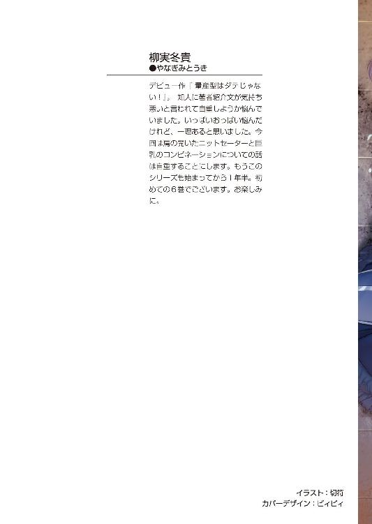
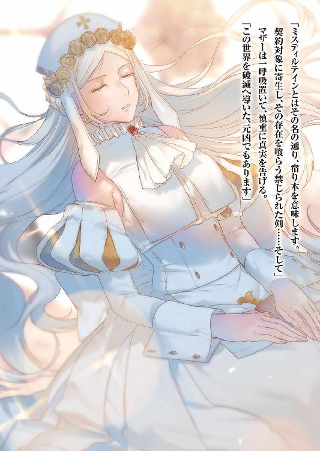
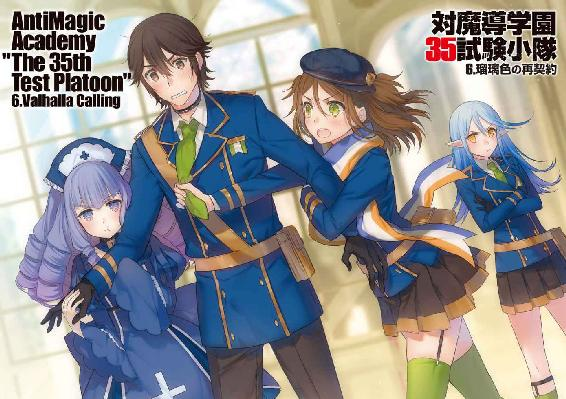
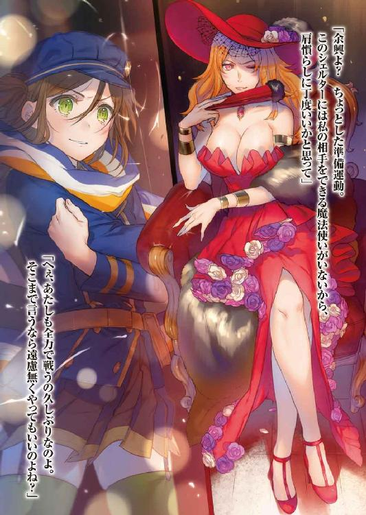
対魔導学園35試験小隊
６．瑠璃色の再契約
柳実冬貴

富士見ファンタジア文庫
本作品の全部または一部を無断で複製、転載、配信、送信したり、ホームページ上に転載することを禁止します。また、本作品の内容を無断で改変、改ざん等を行うことも禁止します。
本作品購入時にご承諾いただいた規約により、有償・無償にかかわらず本作品を第三者に譲渡することはできません。
本作品を示すサムネイルなどのイメージ画像は、再ダウンロード時に予告なく変更される場合があります。
本作品は縦書きでレイアウトされています。
また、ご覧になるリーディングシステムにより、表示の差が認められることがあります。
口絵・本文イラスト 切符
プロローグ
一五〇年前。
人類の大半を死滅に追いやった忌むべき戦い、魔女狩り戦争。
人類側も魔女側も大量の死者を出し、不可視災害と呼ばれる大量破壊の末、戦争は終結した。
戦いの勝者は魔女ではなく、人類。
歴史書には、そう記されている。
だが書物の真実と、今目の前にある現実は違う。
タケルは魔導学園と呼ばれる場所を眺めながら、オロチの言葉に啞然としていた。
「俺様達はこの場所を内側の世界と呼んでいる。逆に、お前らがいた世界のことを外側って呼んでんだ。意味、わかるか？」
「............わかるわけ、ないでしょう。なんなんですか、この光景は......！」
タケルの困惑した答えに、オロチはベッドに腰かけながら神妙に言った。
「聖域の内側か外側か、って意味だ」
聖域。それは不可視災害により人が住めなくなった地域のことだ。
不可視災害とは、『虚無』属性と呼ばれる正体不明の魔力が拡散している状態のことであり、その場所では人間はおろか、たとえ魔女であろうと生きていくことはできない。
タケルが今立っている場所は、その中に存在しているのだと、オロチは言う。
「かつての戦争で人類、魔女共に相当な数が死滅した。だが、魔女側がこの災害が引き起こされることを予期していなかったわけじゃねぇ。この場所は防護結界に覆われた......一種のシェルターってやつだ」
信じがたいことだった。虚無属性の魔力を防ぐための防護素材は現代科学でも開発されているが、最新の合成抗魔素材を用いても、三〇分程度しか防ぐことはできない。
人工衛星を用いても聖域内の映像は磁場の乱れが酷く、鮮明な映像を見ることはできなかった。人類は聖域の中がどうなっているか知る術がなかったのだ。
聖域の中に魔女の国が存在する......ゴシップ雑誌がそういった記事を出すこともあったし、都市伝説のような形で人々の間で囁かれ続けてきたが......。
タケル自身、今こうして目の前にしてみても信じられない。
「幻想教団は一五〇年間、この場所でなんとか魔女達の発展を後押ししてきた。おかげでここまで再興することができている。魔法の技術だけじゃねぇ、科学技術も、外側の世界に送り込んだ工作員のおかげでここまで発展を遂げた。この場所は、魔導と科学の融合を体現してんだ......どうだ、たいしたもんだろ？」
何故か自慢気に胸を張るオロチに、タケルは青白くなった唇を震わせた。
「......発展を後押しって......あんたら、いったい何をしようっていうんだ......」
タケルの問いに、オロチはキョトンとした。
「何って......決まってんじゃねぇか」
「............」
「戦争の続きだよ」
タケルは硬直した。
戦争の続き。魔女狩り戦争の続き。
一五〇年前、人類の大半を死滅させたあの戦いの続きをするのだと、オロチは言っている。
「シェルターは各地に存在するし、魔法も目を見張るほど進化した。たぶん戦争が再開すれば、確実に五分以上の戦いができるはずだぜ」
「............」
「ま、戦争がしてぇって思惑で行動している連中が多いというだけの話で、戦争なんざ望んじゃいねぇ連中もそれなりにいるがな」
「............」
「タケル......まだ混乱しているのを承知の上で、上からのお達しを単刀直入に伝えるぜ」
オロチは白く濁った瞳を開いて、見えずともしっかりとタケルを凝視した。
「こっち側につけ。じゃねぇとお前さんは、ミスティルテインと共に処分されることになる」
放心が収まらぬまま、自分の置かれている状況を思い知る。
今、タケルは幻想教団......魔女達の軍隊に捕らえられ、捕虜となっているのだ。
第一章 魔導学園
聖域の範囲はほぼ全世界を飲み込んでいる。
アメリカ、ロシア、中国、その他の国も著しい汚染が広がり、人が住める場所はあまり残っていない。
旧日本以外の残された土地にも審問会本部は存在しているが、各地域への移動手段は空に限られており、広範囲に広がった聖域の影響を受けないために高度二万メートル以上を飛行しなければならないため、訪問すらも容易ではないのだ。
海外の応援を呼ぶことも難しければ、聖域がもたらす電波妨害のために連携すらもままならない状態にある。転じて、防護結界を構築して生き残った魔女達は転送魔法の開発により聖域内外への移動は比較的頻繁に行われていた。
魔女達が維持し続けているシェルターは聖域の各地にある。
旧日本にも聖域の中に小さいシェルターが二つ存在しているらしい。
「ここ、ヨーロッパシェルター。みんな魔導学園って呼んでる」
青い髪の少女、カナリアはむすっとした顔で廊下を歩きながら、タケルに魔導学園を案内していた。
「聖域で生まれた子供、みんな学園に送られて魔法の教育を受ける。魔女達の育成機関......審問会の対魔導学園とおんなじ」
「............」
「ここのシェルター、人口五〇万人。他の広い聖域、もっとたくさん魔女がいる」
カナリアの説明を聞いている間も、タケルは上の空だった。
キセキの一件の後、気を失ったタケルはオロチによりこの魔導学園に転送された。
あの一件から、すでに一か月が経っていたらしい。
魔導学園などと言われても、正直ぴんとこない。戦争だって、タケルにとっては一五〇年前に起こった過去の話だ。
魔女の国が各国に存在し、審問会はそれを隠している？
鳳颯月のことだ、この事実を知らないということはないだろう。タケルとしてはこんなにもスケールの大きい事に巻き込まれて、正直置いてけぼりをくらっている状況だった。
（......小隊の連中はどうなったんだろう。キセキは......）
悔しさにタケルは下を向く。
手が離れた時のキセキの表情は、悲しみに充ち満ちていた。
小隊メンバーの自分を引き留めようとする声も、かすかに覚えている。
『行かないでくれ......草薙......！』
桜花の悲痛な声に、タケルは拳を強く握る。
結局タケルは、何もかも失敗したのだ。
キセキを殺すことを否定し、全てを救うと決断した。
だが何の解決策も無いまま、どうすることもできずに終わりを迎えてしまった。
何もできずに、結局ただ利用されて......。
タケルはやるせなさを覚えたが、すぐに身体の力を抜いた。
（ぐじぐじ考えたってしかたがねぇ......今は自分の居場所に帰ることだけを考えよう。外側がどうなっているのかを知るのが第一にすべきことだ......何としても聞き出してやる。仲間の安否を......キセキの現状を......！）
無事を祈るだけなんてまっぴら御免だった。
全てに抗う所存で、タケルは歩く。
一刻も早く帰らなければならない。仲間達の元へ。
「──おい」
突然、目の前にカナリアのじと目顔がアップで現れて、タケルは大きく飛び退いた。
「聞いてたか？」
「え？」
「き・い・て・た・か？」
指を鼻先に突きつけるように、カナリアが問いただしてくる。
こうして見ると現実離れした美しい少女だった。ブルークリスタルのような蒼い髪の毛に、山吹色の瞳。まだ幼く背は高くないが、ぴっちりとしたボディスーツから窺える身体のラインは女性らしいものだった。
カナリアはむっすりした顔で、腰に手を当てる。
「カナは忙しい。案内必要ないなら、もう行くぞ」
「悪い。ちょっと考え事してて......」
「お前、身分自覚しろ。ほんとなら拘束されてる。好きに歩き回れるはずないんだぞ」
「わかってるって。捕虜だもんな......一応」
言って、タケルは自分の首につけられた拘束具に触れた。
炸裂式のグレイプニルと同じ構造をした首輪だ。魔力を持たないタケルがこの首輪をつけられているのは、ミスティルテインを使用させないためだった。
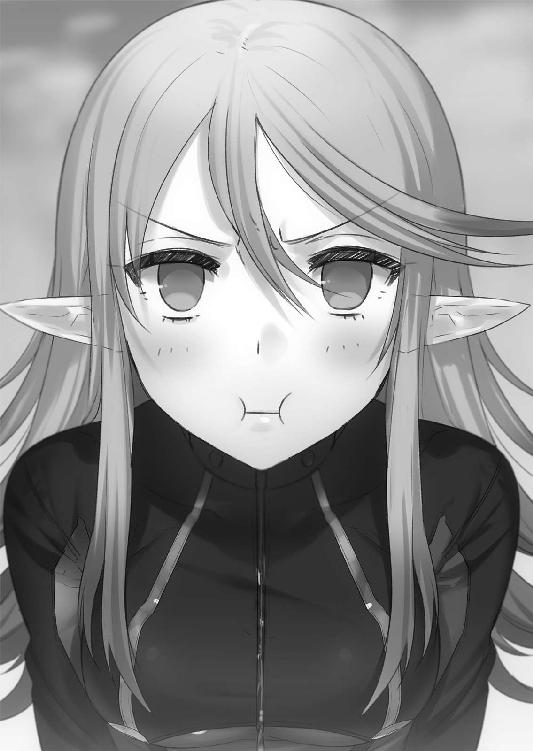
ラピスを使用し、魔女狩り化などをした場合この首輪は爆発する。
カチャカチャと首輪をいじっていると、再びカナリアがずずいと顔を寄せてきた。
「ち、近いっつの、何っ、何なんだよっ」
無駄に整った顔が接近してきたものだから、タケルは身構えてしまう。
カナリアはじと目をさらに細くして、ほっぺたに空気を含む。
「............勝ったと思うなよ」
何のことかよくわからなかった。
「一か月前の勝負の話」
「勝負？」
「勘違いするな。お前、魔女狩り化してた。フェアじゃなかった。お前勝ってない。私負けてない」
「......は？」
「っ、諸刃流！ カナの方が強い！」
カナリアは踵を返した。
カナリアに怒鳴られて、ここに連れてこられる寸前のことを少しだけ思い出した。
タケルは一度、カナリアと戦っている。自分がどういう状況にあったのかはうろ覚えだが、剣戟の感触は思い出すことができた。
あの時タケルはカナリアの腕を未熟と判断したはずだ。なんだか自分の思考じゃないみたいで妙な気分だったが、今思い出してみても、確かに未熟ではあったのだ。全てが力任せというか、諸刃流に必要不可欠な精確さを欠いていたのは事実。
（言わんでおこう）
目を線にしながら、タケルはカナリアの後を追った。
これから魔導学園の理事長なる人に会いに行くことになっている。カナリアから聞き出すよりも、その人物を問いただした方が効率的だった。
状況の把握ができるまでは焦っても無駄というもの。
それよりも今は、目先に気になることが一つあった。
「諸刃流は、師匠から教わったのか？」
相変わらずぶすっとしながら、カナリアはタケルを無視して歩く。
「どういう経緯で教えてもらったんだ？ 俺は草薙の人間だから許してもらえたけど、それでも三日間ぶっ通しで土下座しないと教えてくんなかったんだ。親戚じゃないなら、なおさら首を縦に振らなかったろ？」
「............なんでお前に教える必要ある」
カナリアが鬱陶しそうにしながらそっぽを向く。
あからさまに拒絶を示されれば引くのだが、珍しくタケルは引かなかった。
内心、妹弟子がいたことが嬉しかったのである。
「どこまで習った？ 技を教えてもらえてるってことは、結構認められてるんだな」
「............」
「稽古......女の子には、とんでもなく辛かったろ」
タケルは無視を決め込むカナリアに労いの言葉をかけた。
カナリアは一瞬だけ目を見開き、戸惑うようにタケルに視線を向けて、すぐにまた背けた。自分でもまずいと思ったのか、前髪で顔を隠そうとしている。
その仕草に親近感が湧いて、タケルはうさぎにしてやるように頭に手を置いた。
「がんばったな。たいしたもんだ」
優しく言ってなでなでしてやると、カナリアは怯えた狐みたいに一瞬身体を震わせた。
瞳がかすかに揺れている。
一連の動作から、明らかな動揺が見て取れる。諸刃流の師匠、オロチが弟子を誉めることはまず無いので、きっと努力を認められたのは初めての体験だったに違いない。
微笑ましく思っていると、カナリアは下を向いて顔を真っ赤にしていた。
「──兄弟子ぶるなあああああっ！」
空気が破裂する銃声のような音が轟いた。
怒りを爆発させたカナリアのアッパーがタケルの顎に炸裂しそうになったのだ。タケルの首は数センチ伸びると同時に、身体がわずかに浮き上がった。寸前で予測できたためアッパーをもらう直前に跳躍して威力を殺すことに成功はしたが、その弾丸のごとき一撃をもらえば、確実に死亡していただろう。
「何だ今の!? ここ、殺す気か!?」
「ふーッ！ ふーッ！」
「わ、悪かったっ、つい癖で......！ 初対面でいきなりなれなれしかった、すまん！」
拳をボキボキと鳴らしながら迫ってくるカナリアに、青い顔で慌てて謝罪をする。
タケルが壁際に追いやられ、絶体絶命になった時、
「──タケル？」
唐突に、廊下の向こうから声がした。
カナリアに胸ぐらを摑み上げられながら、タケルが青い顔を向ける。
見慣れた帽子を被り、マフラーを首に巻いた少女がいた。
「......マリ？」
いるはずがないと思っていた仲間の姿に、タケルは口を半開きにする。
マリは呆然と立ち尽くしながらも、見る見る内に瞳に涙を溜めていく。
「う──うぁあああああああああああん！」
遠慮の無い嗚咽のようなものをまき散らして、マリはその場で号泣した。
子供のように手で目を擦りながら、ふらふらとこちらへやってくる。タケルは少しどぎまぎしたものの、自然にマリの肩を抱いてやった。
「お前、どうしてここに......？」
マリは泣きじゃくりながら答えようとしたが嗚咽で言葉にならない。
「一緒に連れてきた。オロチの提案。審問会いてもろくなことにならないからって」
横で、カナリアがマリの代弁をする。
「お前がオロチに倒された後、こいつ、一人でお前を助けにきた」
タケルは黙り込み、泣きじゃくるマリを見やる。
あの時、タケルは桜花の魔女狩り化を解き、仲間に彼女を託して場を後にした。きっとマリは、残りの三人を振り切ってタケルを追ってきたのだろう。
タケルはマリの頭に手を置いて、軽く撫でた。
「心配かけちまって......すまなかったな」
優しく声をかけると、マリは涙でべちゃべちゃの顔でさらに泣きまくった。
横のカナリアは訝しげにマリを横目で見ながら、やれやれと首を振る。
「いつも威勢いいくせに、男の前で弱さを出す。カナはそういう女、大嫌い」
その嫌味を聞いて、ギロリとマリがカナリアを睨みつけた。
「ガキのあんたに女語られたくないわよ！ だいたい、タケルが起きたらすぐに教えてって言ったじゃん！ なんですぐに携帯に連絡しないのよ、意地悪！」
「!? う......ぐ......い、今からお前のとこ、行くつもりだった。カナ、意地悪くない」
「うそつき！ どーせ偶然通りかかっただけなくせに！ カナちゃん、すぐ言い訳するのよくないと思うんだ！」
「い、言い訳違う......機械、苦手。携帯わからない。カ、カナは......」
最初は強気だったものの、マリに責め立てられてカナリアはじりじり後ずさる。
カナリアを壁際に追い詰めた途端、マリは襲いかかった。
「ぎゃあああああ！」
逃げようとするカナリアを羽交い締めにしながら、マリは彼女の長い耳を指でぴんぴん弾いた。
「み、耳はーっ！ 耳はやめれーっ！」
「ほ～れほれ～！ 最初から連絡するつもりがなかったって認めなさい！」
「ほんとだぁ！ ほんとに携帯の使い方わからなーい！」
顔を真っ赤にして涙目になりながらじたばたするも、マリは耳をぴるぴるするのをやめようとしない。
タケルは二人のやりとりに呆れながら、窓の外に広がる魔導学園の風景を見る。
警鐘は、変わらず頭の中で鳴り響いていた。
チリチリと脳を焦がすのは、キセキを救えなかった記憶や、仲間の制止を振り切ったことだけではなかった。
今でも霧がかかって鮮明にならない、あの再契約の記憶。
（......あいつは、今どうしているだろう）
タケルは己の得物の安否を気にしつつ、拳を握った。
ラピス。レリックイーター『ミスティルテイン』
自分がここにいてまだ息をしているというのなら、彼女もこの場所にいるはずだった。
タケルとマリとカナリア、三人で魔導学園を歩いて回る。
タケルがいた場所は魔導学園の医療魔法塔と呼ばれる場所だったらしい。対魔導学園の薬師病棟と空気が似ているように感じた。
似ているといっても、魔導学園は対魔導学園と違いそれほど物々しくはなかった。群青色の制服を着た生徒達は銃を持ったりはしていないし、皆普通に見える。
ただ、腰のホルスターのようなものに収められた杖が目に入る。
杖は魔女達にとって術式構築を補佐する魔導遺産だ。タケルからしてみれば、そこらへんを歩いている生徒達が魔法触媒を持ち歩いている光景は異様だった。
今までの習慣からか、自然と警戒してしまう。
外の世界では立体映像やデバイスの電子機器に頼っていたが、ここではそれらの機械技術に魔力を応用して使っているようだった。対魔導学園のデバイスに似たものが多いのは、どちらも開発にアルケミストが関わっているからだろう。ただしここにある物の大概のものが魔女や魔法使いにしか使用できないようになっていた。
「びっくりしたよね。あたしも最初はそうだったよ」
隣を歩くマリが、複雑な表情で言った。
マリは一か月間、この魔導学園で過ごしていた。カナリアと面識があったのはそのせいらしい。外からやってきた魔女も珍しくないため、魔導学園の一年生としての待遇を与えられたのだという。マリが今着ている服も、魔導学園のものだった。
「こんな世界があったなんて、今でも信じられない」
マリは窓の外を眺める。
外には歩いている人間がほとんどいない。皆、箒のような物で高速で飛んでいるか、浮遊する建物と建物を繫ぐ光のチューブのようなものの中を滑るように移動していた。
ここにいるのは全員が魔女、魔法使いだ。
彼らのそばには幻想生物や魔法生物が寄り添っている。額に大きな赤い宝石の埋め込まれた小さなトカゲや、口からもうもうと煙を吐く大きな鳥に乗っている者もいる。前者は極めて危険な魔法生物、後者は外側の世界では絶滅している幻想生物だった。
建造物も特殊だ。空中に浮遊している建物が多い。電気を使ったエンジンや燃料によって動く物はほとんど無く、どの機械も魔力に連動して稼働しているようで、漏れ出した魔力の粒子がそこかしこで輝いていた。
この場所は、魔導に満ちている。
もはや異世界だ。頭で理解しようとしても、脳の処理が追いつかない。
「無事でよかったよ、タケル。酷いこととかされなかった？」
「おう、ぴんぴんしてるぞ。お前こそ大丈夫だったのか？」
「あたしはご覧の通り。外側の世界からこっちに来る魔女も少なくないから、ある程度自由が保証されてる。首輪も......外してもらえたしね」
マリはタケルの首輪を見て、自分の首もとに手を当てた。
マリの首にグレイプニルはついていない。なんでも、こちらに転送させる前にオロチがマリの首輪を解除したそうだ。
解除、といってもどういう方法でそんなことをやってのけたのかはよくわからない。
目の前のオロチが消えたと思った次の瞬間には、首輪は外されていてオロチの手で遠くへ投げられており、遥か彼方で爆発したのだという。
ようは、爆発するよりも早く首輪を切断して遠くへ投げたということだ。
とんでもない荒技、常人には不可能な芸当だった。
「マリ、教えてほしいことがいくつかある」
「......うん、あたしの知っていることはそんなに多くないけど、全部話すよ」
マリが神妙に頷くと、後ろにいたカナリアが口を挟んだ。
「ぺらぺらしゃべるいくない。外側の女、口軽い。お前ら捕虜。ないせーかんしょ──」
カナリアが無理して難しい言葉を口にしようとした瞬間、マリがギロリと睨んで指先をわきわきさせた。カナリアはズザザと後ずさって、ドアの陰に隠れて子狐のようにマリを警戒する。
タケルは二人のやりとりを無視して、本題に入った。
「......仲間と、キセキの状況がどうなってるかわかるか？」
タケルが聞くと、マリは目を伏せた。
「わからない......こっちから連絡する方法を探してはいるんだけど、魔導学園の中枢に入り込まないと外部との連絡手段は無いみたい。......キセキちゃんは......その」
「............」
「審問会側に連れ戻されちゃったのだけは、知ってる。目の前にいたのに、止められなかったから」
タケルの拳が、小さく音を立てた。表情は平静を装えたが......内心、審問会への強い怒りが煮えたぎり、内臓を溶かしそうな勢いだった。
「でも、小隊のメンバーは全員無事だと思う。タケルが開いてくれた道のおかげで区画の外へ行けたはずだし。うさぎちゃんと杉波がついてるんだもん、きっと鳳だって無事よ。あたしは二人を信じて、あの女を託したんだから」
そこにだけは自信があると言って、マリは再び目を伏せる。
「......ただ、この一か月で、嫌な噂を聞いたわ」
「噂？」
タケルが問うと、マリは重い声を吐いた。
「戦争は、散発的にだけどもう始まってるらしいの」
「............」
「ここの生徒達に聞いた話だから確証は無いんだけど、灰色都市ではすでに魔女の軍と審問会の勢力で小規模な戦闘が行われてるらしい。幻想教団の過激派が、独断で大規模な転送魔法を発動させて、一個大隊を灰色都市に投入したって噂」
「............」
「もしもそれが本当なら......あいつらにも危険が迫ってるかも」
マリの表情からは焦りが見て取れる。
一転、タケルの表情は真剣ではあるが、焦りは感じられなかった。
あるのは使命感のようなものだけだった。
「......意外と、落ち着いてるんだね、タケル」
「......そうか？」
「前だったら、すぐに行動して猪みたいに突っ走ってたもん。なんか変わった？」
マリの疑問に苦笑してから、タケルは目を鋭く細めて前を向いた。
「何も変わってねぇよ。ただ......俺はもう、何も諦めないって決めたんだ。どんな状況でも、たとえ絶望が目の前に蔓延っていようと......自分の守りたいもんは全部守る」
「............」
「そのためにはきっと、突っ走るだけじゃダメなんだろう。焦っても仕方ない時だってある。今は、現状の把握と手段の模索の時だと俺は思う」
「......タケル」
タケルは、真剣な表情でこう言った。
「なんとしても一緒に仲間の元へ帰るぞ。お前の力を貸してほしい」
タケルの決意を聞いて、マリは強く頷いた。
再び前を向き、マリに尋ねる。
「......ラピスがどうなったかわかるか？」
「ああ、タケルのレリックイーターね......」
「俺がまだ生きてるってことは、あいつもここにいるか審問会側にいるはずなんだ。何か知らないか？」
「仲間関係のことは何一つ教えてもらってないの。タケルのそばにいるんじゃないの？」
「いや......」
自分の首輪に触れながら、タケルはラピスの身を案じた。
その時、
「アレについてなら、今から教えてやるから安心しろ」
廊下の向こうから、オロチの声が響いた。
オロチは見えない瞳でタケルをしっかりと捉えながら、口元に笑みを浮かべている。
タケルは少しだけ敵意を込めて、オロチを睨むのだった。
タケルがオロチに連れられてきた部屋は、白く簡素な部屋だった。
壁紙、天井、床。デスク、鏡台、衣紋掛け、本のカバーからティーカップまで全て白で統一されている。
白い空間の中央に、その場にあるどんなものよりも白い女性が浮遊していた。
一瞬、あまりに現実離れした風貌から、幽霊かと思ってぎょっとする。
女性はタケルに柔らかい笑みを浮かべた。
「はじめまして、草薙タケルさん。私は魔導学園ヨーロッパシェルター、イーストサイドの理事長を務めております、マザーグースと申します。以後お見知りおきを」
マザーグースはうやうやしく頭を下げて微笑みを浮かべる。
マリは面識があるのか不機嫌そうにマザーグースを見ていた。
「病み上がりで立ち話は辛いでしょう。美味しい紅茶を用意してあるのです。どうぞ、座ってください」
柔らかく言って、マザーはソファに腰かけた。タケルとマリは対面のソファへ座る。オロチとカナリアは入口のドアを挟むようにして壁際に立ったままだ。
若干緊張しつつも、タケルは毅然としてマザーと向き合った。
マザーは紅茶を一口飲むと、首を傾げた。
「体調はいかがですか？」
「......おかげさまで、良い調子です」
「それはよかったです。私が直接案内に行こうと思ったのですが、なにぶん忙しい身でして......カナリアはちゃんと案内をしていましたか？ 余計な場所へ連れ回して体力を消耗させたりは......」
ドアの脇でカナリアが抗議の一言を口にしようとしたが、オロチに杖を口元に向けられて声を吞み込む。
マザーの穏やかな態度に調子が狂いそうになったが、タケルは真っ直ぐにマザーを見つめ返した。
「──俺はあんたと世間話をしにここに来たわけじゃない。さっさと本題に入ってくれ」
はっきりと、敵意を込めてそう言い放った。
マリも敵意を剝き出しにしていたが、こればっかりは驚いたらしく、タケルの態度にぎょっとしていた。カナリアは目を丸くし、オロチは口笛をヒューと鳴らす。
「俺を蘇生させてくれたことには礼を言います。でも俺とあんた達は、少なくともこんなところで吞気に茶を飲み交わすような関係じゃないはずだ」
「............」
「あんたが俺達にとって敵かどうかはわからない......でも、まだ味方じゃないことだけは断言できる」
持ち前の鋭い視線をマザーに向けながら、タケルははっきりと言ってのけた。
マザーに動揺した様子はなかったが、今まで閉じていた瞳をゆっくりと開いた。
ルビー色の、美しくも威圧感のある瞳だった。
「......何が言いたいのです？」
「要求は何だ」
「............？」
「しらばっくれるな。どうせあんたも、俺を利用しようって魂胆だろう。じゃなきゃこんな厚待遇をしてくれる理由が無いもんな」
今まで散々交渉という名の強要をされてきたタケルは、もう騙されるものかとくってかかる。タケルの男らしい姿を見られて感動したのか、横でマリが目をキラキラと輝かせている。カナリアはタケルの態度に血管を浮かび上がらせており、オロチはといえば何故か嬉しそうにニヤニヤしていた。
そして、マザーは、
「.........うっ、ふ、ふふふふ」
口元に手を当てて、顔を伏せながら上品に笑い始めた。
喧嘩腰のタケルとしては、この反応は予想外だった。
「ごめんなさいね。出し抜けに攻勢に出られて、少々啞然としてしまいました......許してください。あまりに突然だったものですから」
「笑うことないでしょう......こ、こっちは......真剣に......」
タケルはもじもじしながら何度もソファに座り直す。
「そーよそーよ！ あんたいい加減にしなさいよね！ どーせ腹黒いことしか考えてないってあたしにだってわかるんだから！」
便乗して、マリが怒鳴りつける。
マザーはもう一度二人に素直に謝った。
「確かに、要求はあります。あなた方の所属は異端審問会、つまり立場上は我々の敵なのですから......このような吞気な態度に腹を立てるのも無理はありませんね。では......率直に申し上げます」
マザーは目を細め、タケルへ一つの願いを口にした。
「草薙タケルさん。あなたは、もう戦いに参加しないでください」
予想外の要求に、場の空気が凍りついた。
マザーは真面目だ。冗談でこんなことを言っているわけではないと、すぐにわかる。
「その制御首輪が示す通り、我々はもうあなたにあの剣を握ってほしくないのです」
「......あの剣。ラピスのことですか？」
「はい。これ以上ミスティルテインを握れば、恐らく......」
マザーは同情を込めてタケルを見る。
「あなたの魂は彼女と同化して、完全に別物となってしまうでしょう」
「......どういう......意味だ？」
「あなたも感じていたはずです。『神狩り化』を実行したのですから」
言われて思い出す。曖昧な意識。現実感の無い身体の駆動。
心が何かと同化していくような感覚。
「......タケル、大丈夫？」
マリが心配そうにタケルの顔を覗き込む。
タケルの顔色は蒼白だった。思い出そうとするだけで、頭痛が走った。
「思い出せないのも無理はないでしょう。あの時のあなたは、あなたであって、あなたではなかった」
その言葉の意味するところを、タケルには理解できてしまう。
「ミスティルテインとはその名の通り、宿り木を意味します。契約対象に寄生し、その存在を喰らう禁じられた剣......そして」
マザーは一呼吸置いて、慎重に真実を告げる。
「この世界を破滅へ導いた、元凶でもあります」
「何を、馬鹿な......！ そんなはずあるわけないでしょう！」
「黄昏仕様と呼ばれる禁じられた魔導遺産は、本来は異世界の神々が使用する『神器』と呼ばれる代物であることを、あの下劣な異端児......鳳颯月から知らされていますか？」
問いかけられて、タケルの脳裏に星白流から聞いた話が蘇る。
神器。人間には本来使用できるはずのない、神々の兵器。
マザーが言うように、ラピスを信用するなとも流は言っていた。
やはりあの話は、全て真実だとでもいうのだろうか。マザーの話は流の話とつじつまが合いすぎている。
信じたくはなかった。ラピスは今まで苦楽を共にしてきた相棒なのだ。
それが自分の存在を喰らっていた？ 宿り木という名の通りに？
世界を滅ぼしかけた？ 今まで自分の握っていた得物が？
思考の処理が追いつかず、痛みは酷くなるばかりだった。
「一五〇年前の魔女狩り戦争終結の切っ掛けとなった不可視災害。それを引き起こしたのは、紛れもなくミスティルテイン......あなたが契約した剣なのです。これ以上あれを使い続ければ、再び不可視災害を招きかねません。今まで黄昏仕様は幻想教団と審問会の間で抑止力として効果を発揮していましたが、あなたがあの剣と契約したことで、その危ういバランスも崩れ去ってしまいました」
「......っ......」
マザーはタケルとラピスが戦争の引き金同然だと言っているようなものだった。
「無論、あなたを責める理由は一つもありません。あなたは被害者です。できれば、あなたにはこの場所で穏やかに過ごし......戦争には荷担しないでいただきたいのです」
どうか......と、マザーはタケルに懇願する。
不意に、オロチがタケルの肩に手を置く。
オロチは苦笑しつつ、マザーに顔を向けた。
「おふくろさん、とりあえずそのへんにしといてくれ。焦る気持ちはわからんでもないが、ちと急ぎすぎだ。こいつは異世界に放り込まれたも同然。いきなりいろんなもん全部並べ立てられたって、頭がおっつかねぇのも無理はねぇさ」
ぽんぽんとタケルの肩を叩いて、オロチが気遣いを見せる。
マザーは若干乗り出していた身体を引っ込めて、申し訳無さそうにうつむいた。
「ごめんなさい......私も余裕がありませんね。突然このようなことを話されても、理解できないとは承知していたのですけれど......」
肩を落とすマザーに笑ってみせて、オロチはタケルの肩を少し強く握った。
タケルは青い顔を上げてオロチを見る。
「おいタケル」
オロチは閉じられた瞼の中から、タケルを凝視した。
威圧感が急上昇する。タケルは、最初にオロチに出会った時のことを思い出した。
五年前。キセキを守ることも、殺すこともできず呆然としていたタケルの前に、オロチは現れた。彼は慰めるでもなく、同情するでもなく、タケルの髪を摑み上げて目の前の虐殺を目に焼きつけさせたのだ。
『──覚えとけタケル。何も決断しないという選択が招いた結果を、目に焼きつけろ。絶対に逃げるんじゃねぇ』
あの時も、こんな風に竦み上がるような畏怖がタケルを包み込んでいた。
「俺様はお前のことを被害者だなんて思っちゃいねぇぞ。四年前、俺様の制止を無視して自分から異端審問会に首を突っ込んだんだ。同情はしねぇ......お前にも責任はある」
「......師匠」
「お前は俺様から離れる時に、『異端審問会を変えて、世界を変えてみせる』って宣言したはずだ。そうだろう？」
タケルは瞳を揺らしつつも、小さく頷く。
「だったら甘えるんじゃねぇ──ミスティルテインはてめぇで何とかしろ。ありゃてめぇの得物だろうが。剣に翻弄されてるようじゃ、諸刃流を名乗る資格はねぇぞ」
どすの利いた声が、いやに懐かしい。
草薙オロチという人間は、元々こういう有様なのだ。殺すのも、守るのも躊躇わない。剣に生き剣に死ぬ。草薙諸刃流の理想を体現する男。
彼の信念は、いつだって正論となってタケルの胸を突き刺すのだ。
「......オロチ、あなたまさか本当に......！」
マザーが腰を浮かせて、オロチを睨む。
オロチはすぐに空いている方の手で仕込み刀を抜き放ち、マザーに切っ先を向けた。
「俺様がこういう人間だってことは、あんたが一番よく知ってるはずだぜ。今でこそ幻想教団や魔女側についちゃいるが......俺様の生き様は、未来永劫諸刃流のままだ」
「......危険すぎます。できるかどうか確証の無いカードに、賭けるわけにはいきません」
「確証ありだったら賭けになんねぇだろうが。俺様にできたんだ。こいつにできねぇってこたねぇさ」
オロチはタケルの頭をぽんぽんと叩くように撫でた。
そして唐突に、部屋の隅を光の失われた瞳で睨みつけた。
「──おい、出てこい。聞いてたんだろ」
オロチが向いた方へ、マザー以外の全員が顔を向ける。
しばらくすると、何も無かった部屋の隅に、すぅと音を立ててラピスが姿を現した。
「......ラピス」
ようやく頭痛が治まったタケルが、ラピスを前にして立ち上がる。無事でよかったと思うと同時に、頭の中でラピスとの再契約の記憶がフラッシュバックした。
伸ばそうとした手が止まる。
ラピスも一瞥もくれずに静かに床を見つめていた。
「真実はこいつの口から直接聞くこった。その方がお前も納得がいくだろう」
「............」
「さっきもマザーが言っていたが、こいつは世界にとって害にしかならん......と、思われてる。正直、幻想教団としてはさっさと処分しちまいたいところなんだ」
タケルは顔を上げ、悲痛な表情を浮かべた。
「安心しろ。今んとこ俺様とマザーの計らいで処分は保留にさせている。なんでもお前、こいつの魔力が無けりゃ身体が真っ二つになっちまうっていうじゃねぇか。師匠としては、弟子がそんな有様になるところを見たかないんでね」
「私も、あなたが無為に命を落とすことを望みません」
マザーはオロチに同意し、タケルを見やる。
「どうしてあんた達は俺にそこまでする？ 今までずっと殺し合いをしてきたのに」
まるで保護されているかのような状況に、戸惑いは募る。
マザーは優しげな微笑みを浮かべた。
「幻想教団も異端審問会と同じく、一枚岩ではないのです。事実上のトップは元老院の老人達ですが、純血派と慎重派とでも申しましょうか......内情は大きく二つに分かれているのです。もうおわかりかと思いますが、我々は慎重派......だと、言えるはずです」
マザーは戸惑いつつも、自分達を純血派とは言わなかった。
「我々の目的は、無関係な人々を巻き込む戦争を回避することですが......言い訳するつもりはありません。最小限の犠牲という名目で、何度もあなた方に攻撃を加えてきた......二階堂マリさん、上の命令とはいえあなたの処分をホーンテッドに指示したのも、この私です」
マリは座ったまま一度だけ目を見開いたが、すぐに吐き捨てるように鼻を鳴らして、そっぽを向いた。
「......別に、責めるつもりも許すつもりもないわ。あたしは外部の協力者ってだけだったし。端っから使い捨てにされるってわかってたわよ」
「私も、謝ることは許されない立場にいます。ですが......ホーンテッドの諸行は、目に余るというレベルをとうに超えていました」
「つーかもうそういうの興味ないのよねっ。今のあたしの目的は一つよ。タケルと一緒に仲間の元へ帰ることっ。それ以外はどうでもいい。審問会も幻想教団も一緒よ一緒っ」
マリは脚を組んで頰杖をついたまま、それきり何も言わなかった。
マザーは気を取り直し、タケルに向き直る。
「話を戻しましょう。先ほども言いました通り、あなたとミスティルテインの処分はとりあえずは保留となっています。ですが、時間はあまり残されていない。ミスティルテインが我々にとって脅威でないという保証が得られなければ、あなたは元老院の決断によって処刑されるでしょう」
「............」
「できることならば、あなたにはこのまま大人しくしていてほしいのですが......それだけでは元老院が安心を得られないのもまた事実」
仕方がないとでも言うように首を横に振り、マザーはオロチへ顔を向ける。
オロチはうんうんと二度頷いて、タケルの頭を上から押さえつける。
「つーわけだから......この魔剣はお前が説得しろ。こいつが無害であり、俺様達にとって有益な存在であると証明させるんだ」
「......証明......どうやって......？」
「ん、まあ簡単に言うとだな──」
オロチが顎に左手を当てて、右手で人差し指を立てながら、いやらしい笑みを浮かべた。
タケルは知っている。こういう笑みを浮かべたオロチは、ろくなことを言わないということを。
「──こいつを、お前に惚れさせろ。逆らえないくらいメロメロにしちゃいなさいよ」
............。
............。
「............は？」
ものすごく真面目な話だと思ったのに、いきなり右斜め上へ話が進んだことで、タケルの思考は一瞬停止した。
第二章 仮初めの平穏
目を覚ましてから三日後。
タケルは魔導学園汎用支援魔法専攻クラスの教室で、教師の横に立たされていた。
目の前には授業を受けている魔導学園の生徒......つまり魔法使いや魔女のひよっこ達がずらりと席に座っている。
皆訝しげというよりは、きょとんとした表情でタケルを注視していた。
「ん、じゃあ紹介するね～。草薙タケル君よ～。はい拍手～」
にこやかな女教師の拍手につられるように、生徒達がまばらに拍手を送る。
タケルも含め、いまいちこの状況を理解していない者が多いようだった。
「新しい仲間だと思ってちょうだいね～。草薙君も、簡潔にでいいから挨拶お願い～」
「......草薙です。よろしく」
緊張でがちがちになっているタケルの肩に、女教師が優しく手を置く。
「しばらく奇異の目で見られるかもしれないけど、心配ないわ～。魔力を持たない人が入学するのも最近じゃ珍しいことじゃないし、うちのクラスはそういう差別みたいなこと絶対に許さない方針だから～」
「はあ......」
生返事をしている間に自己紹介が終わると、タケルは一番奥の席へ座るように言われ、生徒達の中を歩いた。物珍しそうな目で見てくる者、蔑むような目で見てくる者、反応はだいたいその二つだった。
タケルからしてみれば魔法使いや魔女がこれだけ一か所に固まっている状況こそが異常なのだが、ここでは外側の世界の常識など通用しない。
内側の世界の彼らから見れば、タケルこそが異端なのである。
（これは思ってたよりずっと居心地が悪いな......）
何故このように、タケルが魔導学園の生徒として自己紹介なんぞをしているかと言えば、話はマザーグースとの面会時に遡る。
オロチはミスティルテインを惚れさせろ、などと意味のわからないことを言っていたが、簡単に言えばラピスとの絆を深めろ、ということらしかった。
もっと突っ込んで言ってしまえば、タケルとラピスが幻想教団側につけば、様々な制約はついてまわるものの、処分は免れるということだ。
マリは激怒した。自分らは仲間の元へ帰るのだ、と。
タケルももちろん同じ気持ちだったが......。
『では......我々がすでに、草薙キセキさんを救う方法を得ていると言えば......気は変わりますか？』
マザーのその一言でタケルの心は揺れた。
『すぐに決断をしろとは言いません。外の世界で一五〇年間築き上げられてきた固定観念はそうそう拭えるものではないと思っていますので、あなたには我々魔女達がどのような生活を送っているのか、知ってもらいたいのです』
マザーはそう言って、タケルを魔導学園へ入学させた。
魔女がどういうものか知ってほしい。魔法がどういうものか知ってほしい。
お前が思っているほど、魔導世界は悪しきものではない。
そのような意図であると推察はできるのだが......。
（結局、キセキを救う方法は味方にならないと教えてくれねぇってわけだ......）
卑怯だと言いたいところだが、元々異端審問会にキセキを兵器として利用させないために、マザーはオロチを送り込んだのだ。言うなれば、邪魔をしたのは審問会と三五試験小隊。あのまま審問会の邪魔が入らなければ、キセキはすでに救われていた可能性もある。
マザー達の言葉と行動を信じるならば、妹や仲間達にとっても「敵」と断ずるのは早計だった。
（でも、味方って決めつけるのもまだ早い。あの人達は平和を目指してんのかもしれないが......今まで犠牲だって出してきた。慎重に見極めねぇと......）
タケルは席につき、真横を見る。
横には席の間隔を開けずに、机と机をくっつけた状態で、ラピスが大人しく座っていた。
明らかに浮いているというのに、他の生徒は気にした風もない。よく見れば、ラピスと同じような浮いた格好をした少女や少年、老人などを隣の席に置いている生徒が他にも何人かいた。彼らもラピスと同じような魔導遺産の類らしい。
ここでは人型の魔導遺産が寄り添っているのは普通の光景だった。
「............」
タケルはラピスの横顔を見ながら、思いに耽る。
ラピスとの絆を深めろ......惚れさせろとはいったいどういう了見なのか。
それがいったい何に繫がるのかもいまいちわからないが、とにかく行動しなければキセキを救う方法が得られない。
（......しかしどうしたものか）
ラピスは二日前に再会を果たしてから、タケルを見ようともしない。そこにタケルが存在していないように振る舞っていた。
一緒にいる内になんとなくわかってきた。
自分はラピスに拒絶されている。
（......何故だ？）
正直、皆目見当がつかなかった。
過去の記憶を巡らせる。京夜との戦闘時、ラピスはいつも通りだった。
恐らくそれ以降の出来事が原因だろうとは推察できる。
（必死だったけど......俺は何かラピスに酷いことをしたのか......？）
記憶が曖昧ながらも一生懸命に探ってみたが、答えは見つからなかった。
（......思えば俺は、こいつのことを何も知らない......）
人づてに聞いた情報しか持っていない。
本人の口からは、何一つ知らされていないのだ。いままでは、剣と使い手という間柄でいいと思っていた。それが正しい在り方であり、理想なのだと思ってきた。
でも、きっとこのままではダメなのだ。
理解し合わなければならないと、漠然と思う。
タケルはラピスのことを知りたい。彼女を剣としてだけではなく、相棒として......同じ仲間として関係を築く必要があると思った。
そうすれば、二人が産み出す力は何倍にもなるに違いなかった。
これは三五試験小隊で、仲間との経験を経て学んだことだった。
「......なあ、ラピス」
タケルはなるべく柔らかい声を心がけて、ラピスの肩に手を伸ばす。
──ズズズズズ......。
ラピスは椅子を引きずってタケルから距離を取った。
「......ぐふっ......！」
思いのほかショックが大きくてタケルは蹲った。自分の剣に嫌われるということがこんなにも辛いものだとは思ってもみなかった。
その光景を見ていた生徒達が、ひそひそと耳打ちし合う。
「......ねぇ今の見た？ あの子、自分の魔導遺産に距離を取られたわよ......」「契約して日が浅いのかな？ それにしたってあの拒絶はあからさまだね」「たまにいるのよね～......自分の魔導遺産にセクハラするやつ。特に魔導に対する知識や素養が浅いやつに限ってね」「和名ってことは、旧日本の外側出身なのかな？ 内側じゃ結構珍しいよね」
「ふん、魔力を持たぬ者が魔導遺産を所持している時点で滑稽だというのだ」「そういうこと言うなよ。見たところ魔法触媒タイプじゃないし、刀剣タイプなら重要視されるのは魔法の腕より剣の腕だろ。俺のアイドルカナリアちゃんだって魔力持ってないのにすごいんだぞ」「でもおもしろいな、あいつ。ずいぶん身の丈にあってない魔導遺産連れてるぞ。あれってそうとうな業物だろ」
皆、それぞれ好き勝手にタケルの分析を始める。
居心地の悪さが半端ではなかった。
（マリはいつもこんな気分だったんだろうか......）
対魔導学園でただ一人魔女だったマリと、魔導学園でただ一人普通の人間であるタケルの状況はかなり似通っていた。
──ドン！
窓際の席に座っていたマリが、机に右手拳を打ちつけた。
しん、と教室内が静まりかえる。
「......授業中なんですけど」
据わった目でマリがクラスメイト達を睨むと、皆そそくさとタケルから視線を外して机と向き合った。
「そうよ～みんな。今はね～、みんなの身を守るための防護魔法を教えてるのよ～。覚えておいて損は無いんだから、ちゃんとやるのよ～」
のったりとした教師の注意により、授業が開始される。
内容は正直タケルにはさっぱりわからなかった。
時刻は正午を回り、魔導学園は昼休みに入った。
タケルがぐったりとしながら机に突っ伏すと同時に、苦笑を浮かべたマリがやってくる。
「おつかれ、タケル」
「おう。そっちもな」
「ぐったりしてるね......まあ気持ちはわかるけどさ」
頭を撫でるように叩いて、マリはタケルの机の上にひょいと座った。
「......マリは、ここに入れられて結構経つんだよな？」
「うん。慣れたけど、正直今も戸惑ってる。魔法の勉強とか、隠れてするもんだったし」
「だよな。なんか、向こうでのお前の立場がよく理解できた気がするぜ。結構キツいもんがあるな、こういうのって」
「......そか」
頰を指で搔きつつ、マリは反応に困っているようだった。
「お前にとっては、居心地悪くないんじゃないか？ 少なくとも対魔導学園よりはさ」
タケルがそう言うと、マリは何故かショックを受けたような表情をした。
まるで、そんなことを言うな、とでも言いたそうな表情だ。
マリはぎこちなく顔を伏せて、スカートの裾を握った。
「まあね。ここでは魔女でいることが普通だからさ。でもなんていうか......ここにいると、現実感が薄れるっていうか、危機感が無くなっていくっていうか......どういったらいいかわからないけど、やっぱりあたしの居場所じゃないって感じるんだ」
「............」
「あたしの居場所は......その......あそこだからさ」
あたしが勝手に思ってるだけだけど......と小声でつけ足して、マリがもじもじとする。
タケルは自分の言葉を反省した。悪気はなかった。現状、タケルとマリは魔導側でも対魔導側でもない、どっちつかずの状況にある。
だがマリにとってはここが一番安全かつまともな待遇が保証されているのだ。マリにとって、ここに残るのが一番幸せなのではないか。たとえ戦争が起こるにしても、シェルターの中で過ごす方が安全性も高いのではないか。
そう思っての言葉だったのだが、どうやらマリの気持ちはタケルと同じだったらしい。
「ここに一人でいると、なんだか吞み込まれちゃいそうでさ。だって、今あたし達、こんなことしてる場合じゃないじゃん？ 状況に慣れて馴染んでいくのが......なんか怖くてさ」
「............」
「だから......タケルが目を覚ましてくれて、本当によかった」
言って、マリは小さく鼻を啜った。
タケルは机についたマリの手に自分の手を重ねた。
「ここは俺達の居場所じゃないもんな......一人ぼっちにさせちまって、悪かった」
今までの常識を覆すほどの世界に放り込まれて、孤独を感じなかったわけがないのだ。タケルはマリに心から謝罪し、安心を与えてやろうとした。
マリは、顔を赤くしながら視線を彷徨わせる。
タケルが謝ることじゃない、気にすることない、そう言おうとしたのだろうが言葉にならず、マリは何を思ったのか重ねられたタケルの手をぎゅっと握り返した。
「あ、そのー......あ、ぅ......寂しかったから、さ？ ちょっと、こうさせてほしいな～って思って......」
「？ ああ......別に、いいけど」
よほど寂しかったのだな、とタケルは思った。
思ったものの......指が絡み合っている。この繫ぎ方は明らかに恋人同士がするものだ。
さすがのタケルも赤面を禁じ得なかった。かといって振りほどくなんてことできやしない。二人が手を繫ぎながらもじもじしていると、
「──中一？ 中一カップルなのだ」
いつのまにかタケル達の前にしゃがみ込んで、女生徒二人が机の端から顔を覗かせていた。
驚いてマリは机の上から飛び下りた。
「ななな、何よあんた達！ これはただ、手相よ......手相を見てただけよ！」
慌てて弁明を試みるマリだったが、二人組のショートヘアの方に苦笑いをされた。
「いやいやマリ、誤魔化すにしてももっとやりようがあるでしょ......」
「古典？ 古典文学の登場人物なのだ」
続いて本物なのか偽物なのかわからない猫耳少女が興味津々な様子でタケルとマリに尻尾を振る。二人はタケルといちゃついていたことについて、うぶなマリをからかい始めた。マリは顔を真っ赤にしながら反論していたが、見事に軽くあしらわれている。
どうやらこの二人は、この一か月でマリと親しくなったらしい。
元々マリは気の良い明るい少女だ。対魔導学園では学生達の固定観念のせいで差別を受けていたため友人はいなかったが、ここでは差別など受ける理由はどこにもない。
友人ができて当然だろうと、タケルは思った。
「草薙で合ってるよね？ 私はイニア・ブラックモア。属性は『鋼』。出身はここ、ヨーロッパシェルター。魔導学園イーストサイドの二年生。一個上よ、よろしくね」
ショートヘアの少女、イニアが人懐っこそうな笑顔で手を差し出してくる。
タケルがイニアと握手を交わしていると、その横にいた猫耳娘がにまにましながら尻尾を振る。
「あたいはアナンダ・ノーデンスなのだ。属性は『雷』。出身は一番ちっこい南アフリカのシェルター。一年でうぬとは同じクラスなのだ。見ての通りクォーターのデミヒューマンなのだが、語尾にニャとかつけねーから覚えとけよ」
鼻をすんすんさせながら、見るからに猫っぽい少女、アナンダは尻尾をくの字に曲げてタケルの方へ寄せた。タケルは戸惑いつつも握手を試みたが、アナンダは「にゃ！」と悲鳴を上げて後ずさった。
毛が逆立っている。何故だか警戒されているようだった。イニアもぎょっとした表情でタケルを見ている。狼狽していると、マリが耳打ちしてきた。
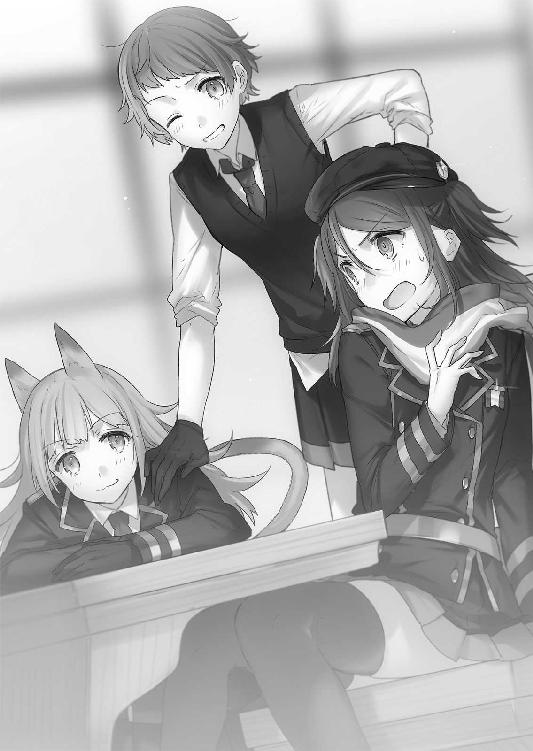
「あたしも同じことやらかしたんだけど、猫人間は前足での握手が求愛行動らしいの......指を尻尾に絡めてやるのが挨拶なんだってさ」
「マジかっ。つか、デミヒューマンって実在したのか......」
タケルはアナンダの耳と尻尾が飾りでないことにまず驚いた。
亜人だ。半獣人とも呼ばれる、人間と幻想生物のハーフのような種族である。猫の種族は一部地域で小規模な部族が存在していたことが記録に残っているが、エルフと同じく魔女狩り戦争中に絶滅が確認されていたはずだった。
そんなデミヒューマンの常識などタケルが知るはずもない。この場所では、絶滅したとされている種族が当たり前に闊歩しているのだということを、タケルは改めて認識した。
アナンダは顔を赤くしながら、恥ずかしそうに前足で顔をこねこねしている。
「......もしかして、草薙も外側出身なの？ マリと親密みたいだし」
イニアに外側と言われて、正直に答えていいものか迷った。
この世界でどれだけ外側の世界が認知されているのかさえ、タケルは知らないのだ。
「タケルはあたしと一緒に内側に来たのよ。両親が仲よくてね......審問会のいざこざに巻き込まれたところを保護されて、危険だからってこっちに送られてきたのよ」
マリが即席で考えたであろう説明を述べると、イニアとアナンダは納得したようだった。
「なるほど、じゃあここの常識を知らないのも無理はないね。私らは外側のことよく知らないけど、魔女の存在は害悪と見なされてるんでしょう？ 想像するだけでもとんでもない場所だよ」
「いきなり告られてびびったが、そういうことなら許してつかわすのだ。よくきたなふつーの人間。わからないことがあれば何でも聞くといいのだ」
アナンダがふふんと先輩面をしながらそんなことを言った。
マリが横で肩をすくめるのを見て、タケルはお言葉に甘えることにした。
「助かるよ。じゃあさっそくで悪いんだが、イーストサイドってのは何だ？」
あまり突っ込んだことを聞いては不審に思われると思ったので、タケルはイニアの口から出てきた言葉から質問を抽出した。
「マジでそんなことも知らないで入学したの......すごいね」
「す、すまん」
謝ると、イニアはまあいいやと笑った。あまり細かいことは気にしない性格らしい。
「イーストサイドってのは、そのままシェルターの東側にある学園施設のこと。逆に西側の施設をウェストサイドって呼ぶ。だいたいどこの魔導学園にも理事長が二人いて、派閥というか、教育方針みたいのが違うんだ。イーストは『調和』を方針にしていて、防御や医療、産業に役立つ魔法を教えてる。環境保護や聖域の研究も盛んだね」
「逆にウェストサイドは『純血』を方針にしているのだ。まあ、軍事学校だと思ってほしいのだ。戦略的、軍事的に役に立つ魔法を主に教えているのだ」
「間違ってもウェストサイドには近づかないでね。純血主義ってのは、アナンダのような混血は絶対に受け入れないし、魔力を持たない人間となれば差別どころの話じゃない。何をされるかわからないから、くれぐれも気をつけて」
「うむ。東と西で別世界だと思うといいのだ。残念ながらウェストサイドの方が敷地は圧倒的に広いし、人口も多い。小競り合いも絶えないが、まずこっちに勝ち目は無いから負ける喧嘩をするのはオススメしないのだ」
「魔女狩り戦争の爪痕っていうのかな......やっぱり魔力を持たない人間との因縁は根深いよ。正直、あたしらは戦後に生まれた世代だから、いまいちピンとこないんだよね。育った環境が環境だったからってのもあるんだろうけど」
「教育の違いなのだ。最近はイーストサイドのような教育方針が板についてきたが、まだ大多数がウェストサイド寄りなのだ。まもなく戦争が再開するという噂も、あながち噂止まりではなかろうて」
「うん。そういう時事もあるから、特に最近はね。絶対に近づいたらダメだよ」
イニアの忠告に、タケルは了解の意味を込めて頷く。
アナンダはやれやれと、現在の情勢に首を振った。
「個人的には興味無いんだがのぅ。このままシェルターで暮らすのも困らんし、外側との問題には辟易しかしないのだ」
「私は、外側の人と和平が結べればって思うよ。一五〇年前の戦争の因縁引きずってても楽しいことなんてないしね。こうして草薙とだって、普通に話せてるわけだし」
深刻な顔で交互に説明を聞かされて、タケルはなんとなく内側の世界の実情を理解し始めていた。ようは、対魔導学園でいうところの審問会と倫理委員会......保守派と反体制派のようなものだろう。
ここの学園シェルターの人口は五〇万人程度だが、他のシェルターにはもっと多くの魔女や魔法使い達が生活しているらしい。そのほとんどがウェストサイドと同じ考えを持っているのだとイニア達は言う。
マザーグースが管理するイーストサイド。
そして、純血派の管理するウェストサイド。
マザーの言葉を信じるならば、元老院と呼ばれる内側の世界を統治する集団がウェストサイド寄りなのは明白だった。
（......内側も外側も、似たりよったりってところか......）
それでも、対魔導学園に比べれば圧倒的に差別意識は薄い。東と西で二極化されていると言っても、イーストサイドの人々は魔力を持たない外側の人間であるというのに、快くタケルを受け入れてくれている。少なくとも、対魔導学園でマリを受け入れていたのは雑魚小隊とほんの一握りの人間だけだった。
外側の人間の持つ内側の情報は皆無に等しい。聖域内部に魔女側の勢力の生き残りがいるという噂はあったが、ほとんどの一般人に信じる者はいなかった。徹底した情報規制と洗脳教育が施されていたためだろう。
内側の人間も、外側の存在を認知してはいるものの、やはり実情に関しての認識は浅いようだった。イニアとアマンダの二人も、異端審問会の魔女達に対する暴挙を知れば、こうして吞気にはしていられないだろう。
「......やっぱ、俺みたいに魔力を持たない人間は珍しいのか？」
タケルが二人に尋ねる。
「うんにゃ、少ないがイーストサイドならいるにはいるのだ。ほれ、あそこ」
アナンダが指差す方向を見る。
生徒達のロッカーに背を預けて、こちらを睨みつける青い髪の少女の姿があった。
（......カナリア）
タケルは見覚えのありすぎる青い髪に、少しぎょっとする。考えてみれば一応自分は捕虜なのだ。監視がついていて当然だった。
それにしたって、すごい怨嗟の視線だった。どうやら先月の戦いや、兄弟子ぶったことをやたらと根に持っているらしい。いつものボディスーツではなく魔導学園の制服を着ているところを見ると、彼女も学園の生徒なのだろう。
イニアが、カナリアに向けて手招きする。
「おーいカナリア。そんなとこでしかめっ面してないでこっちきなよ」
「............ふん」
呼ばれてもカナリアは吐き捨てるだけで、腕を組んだまま微動だにしなかった。
「奴の名はカナリアなのだ。耳が長いだろう？ ハーフウッドエルフなのだ」
「ハーフウッドエルフ......？」
「うむ。ウッドエルフは魔力を持たない代わりに、身体能力は人間を遥かに凌駕する。保護目的で、イーストサイドで暮らさせているらしいのだ」
「............」
「あたいと同じデミヒューマンてことになるのだが......絶滅危惧種というやつだ。戦争で生き残ったウッドエルフから生まれた最後の一人らしいのだ。詳しくは知らんがな」
アナンダの話を聞いて、タケルの脳裏で記憶が疼いた。
エルフに関する事件は、まだ記憶に新しい。
内側の世界でも、エルフが絶滅していたという事実は同じらしかった。
（......まさか、な......）
かつて聞いた話と照らし合わせてみても、まず年齢が合わない。だいいち処分されたと聞いていたし、幻想教団......魔導学園にいるということ自体がおかしいのだ。
タケルは斑鳩が言っていたエルフの失敗作について、あまり多くの情報を持っていない。斑鳩は詮索を嫌うだろうし、タケルも自分から突っ込んで聞くのはできるだけ避けていたからだ。
だが、やはり引っかかるのは事実。タケルが立ち上がり、カナリアに問いかけようとしたところで、イニアが再び声をかけてきた。
「ところで草薙......君の魔導遺産、どこ行ったの？」
イニアが不意に尋ねてくる。
「瑠璃色の子、連れてたよね？ あの子についても聞いてみたかったんだけど......授業終わった時から見当たらないよ。自分の魔導遺産放っておいていいの？」
「おお、あたいも気になっていたのだ。おぬしあの魔導遺産をどこで手に入れたのだ？ 家に代々受け継がれている代物か？ 途方もない異質な魔力を感じたのだ。こう見えてあたいは魔導遺産の研究に目がなくて......あにゃ？」
そこまで言って、アナンダとイニアはタケルの青ざめた顔を見た。
タケルは真っ青になりながら、マリを見る。
マリはぶんぶん首を振り、「あたし知らないよ!?」という顔をした。
続いて、タケルは後ろのカナリアを見る。
「......あ、あわわわ......」
カナリアも、タケルと同じく顔を真っ青にしていた。
五分後。
「──アホアホアホアホ！ 契約者のくせに契約者のくせに！ 何で目離した!?」
カナリア、タケル、マリは魔導学園の中を三人並んで全力疾走しながらラピスの行方を捜し回っていた。
「面目次第もねぇ......っ！ いつもいたりいなかったりする状況に慣れちまってたから、急に消えても気づかなかったんだ！」
「言い訳いくない！ 恥知れ、恥！」
右隣を走るカナリアに罵声を浴びせられ、タケルはますます小さくなる。
左隣を走るマリがカナリアにくってかかる。
「カナちゃんだって人の事言えないでしょ！ 監視役なのに何で目を離してんのよっ！」
「う、うるさい！ マリだってマザーに監視頼まれてた！ 一緒！ どーるいっ！」
「あたしはあんた達に従う義理なんてないっつーの！ なぁんであたしが仲間のタケルを見張らなくちゃいけないのよ！」
「タケル違う！ みすちる......みすてぃら......み、あーもー！」
舌が回らずに嚙み嚙みになって、カナリアが頭を搔き毟りながら走る。
三人とも、目立ってしまうのも構わず生徒達を躱しながら捜し回った。マリが遅れ始め、差がつき始めた頃、廊下の先からやってくる着物姿の男が視界に入った。
「おお、にゃに、おみゃーらにゃにやってんの？」
オロチだ。オロチは右手のあんぱんを頰張りながら、左手で牛乳瓶を持って歩いていた。
先頭のタケルは足を止め、オロチの前で膝に手をついた。
「師匠っ、なんでここにっ!?」
「なんでってお前、俺様ここの教員だし」
「は？」
「基礎体力の授業受け持ってんだわ。や、学園に在籍すんなら仕事しろっておふくろさんがうるさくてよぉ」
諸刃流師範の基礎体力の授業。絶対に基礎ってレベルじゃない。
「それよりどうしたんだよ、そんな慌てくさって」
「実は......ラピスを見失っちまって」
タケルは殴られるのを覚悟で自分の失態を告げた。
ところがオロチは、きょとんとしながらあんぱんを頰張るだけだった。
「あっそふーん。まあがんばれや」
「......えぇぇ......？」
「魔導遺産は契約者が使わない限り害はねぇんだ。お前は首輪つけてんだし、んな慌てるこたねぇだろ」
「一緒に捜してくれないんですか!?」
「？ ありゃお前の剣だろーが、なんで俺様がそんなことしなきゃなんねぇのよ。それに俺様これから授業あるし、やーだよ」
............やーだよじゃねぇよ。
タケルはこめかみに血管を浮かべつつも、心の声を吞み込んだ。
「オロチっ！ だからカナ反対したっ！ こんな奴にみすちゃらちぇいんを使いこなすのなんて無理だったんだー！」
真横を高速でカナリアが通り過ぎていく。
「ぜぇ、はぁ......ぜぇ......はえーっつーのぉ......！」
さらに、のろのろとマリが後に続いていった。
「おーおー、元気でよろしいねぇ。若いってのは素晴らしいな、ほんと」
吞気極まる物言いに、タケルは苦笑すら出ない。草薙オロチという男が基本的にダメな大人であることを失念していた。
タケルはオロチの協力を諦めて、再び走り出す。
「──ちょい待ち」
「ぐぇっ！」
が、すぐさまオロチに首根っこを摑まれて、タケルの首が絞まった。
「あ、あんた何なんすかほんとっ......！」
「助言をくれてやる。お前さんの愛剣は、今までお前を捜すようなことが一度でもあったか？」
「......え？」
「いつだって呼びかけに応えて、勝手にそばに現れたんじゃねぇのか。それはつまり、あいつにはお前の居場所がどこか瞬時にわかってたってこった。だったら、逆ができても不思議はねぇだろ」
牛乳を飲みながら、オロチはタケルに顔を向ける。
思考を探るというよりは、呆れたような顔だった。
「どうやら今のところ愛情は剣の方が強いみたいだな。どおりで侵食が一方的なわけだ」
「............」
「奴らを信用しろとは口が裂けても言わんが、己が選んだ得物を御せずして何が剣士か」
言って、オロチはこつんとタケルの額に拳を当て、襟首を離して歩き始めた。
「恥を知れ～い」
ぷらぷらと手を振って、オロチが去って行く。
タケルはその背中に何も言い返せなかった。魔導遺産だろうが神器だろうが、ラピスが剣であることに変わりはない。
まったく、これっぽっちも、反論の余地がなかった。
「......変わらないな、あの人は」
タケルは大人しくオロチの背中に頭を下げて、自分の心に従ってラピスの元へと向かうのだった。
タケルは焦ることなく、心の奥底で燻るラピスとの繫がりを感じ取りながら、階段を上がる。今から行く先にいると確証を持っているわけではないが、タケルにはラピスの存在を以前よりも強く感じることができた。
きっと、再契約で繫がりが強くなったおかげだろう。
階段の一番上まで行くと、鉄製の重い扉を押し開ける。
ゆるやかな風が頰を撫で、自然とタケルは空を見上げた。防護結界により紫外線の遮断された優しい光に、微かに目を細める。
狭い空だが、外側では見ることのできない色をしていた。魔力で構築された防護壁は、日光を乱反射させて薄い虹色に光っている。その膜の内側では、尾が三つある鳥達が群れを成して飛んでいた。
空中に浮遊する建物や敷地は、でたらめに配置されていても衝突することがない。
建物だらけだし機械も多いのだが、地上や建物の屋上には青々とした植物が見て取れた。魔力の大半は自然物にとって無害なため、緑も生き生きとしている。
目が覚めた夜に見た時はただただ衝撃的だったが、昼間に見ると幻想的で美しい光景だった。魔女達の国と言われていたから、さぞや物々しくおどろおどろしいものだとばかり思っていたが、全然そんなことはなかった。まるで絵本の中にでもいるような気分だ。
タケルは大きく深呼吸して、視線を前へ戻す。
フェンスが無い校舎屋上の縁に腰を下ろす、瑠璃色の背中が見えた。
ラピスは風に髪を遊ばせながら、小さい背中をさらに小さくして、ぽつんと一人で座っている。横には紙袋に詰められた大量のりんごが見える。
静かな屋上には、ラピスがりんごを齧る小さな音だけが響いていた。
美しい風景にマッチしているが、その背中は酷く寂しげだった。
タケルは無言でラピスのそばに近づくと、すぐ横に腰を下ろした。
「よっ。一人で昼飯か？ どっか行くんなら一声かけろよな」
「............」
「おお、ここめちゃくちゃ高いな。他の生徒と違って俺は空飛べないから、結構怖いぜ」
「............」
「............り、りんご、食ってんのか。すげぇ量だな。俺にもひとつ──」
ひょいっ......ズズズズズ。
タケルがりんごに手を伸ばすと、ラピスは紙袋を抱えてタケルから距離を取った。
手を伸ばしたまま、タケルはショックで泣きそうになる。
ラピスは遠くを見つめながらしゃりしゃりとりんごを齧る。
タケルは背中を丸めて、盛大にため息を吐くしかなかった。
「......なあ、そろそろ理由を聞かせてくんねぇか」
「（しゃりしゃりもぐもぐ）」
「自分が鈍感なのは百も承知だが......俺、お前になんかしたのか？ あの時のこと、いまいち覚えてないんだよ」
「（しゃりしゃりしゃりもぐ）」
「聞きたいことが山ほどあるし、何かしたんならそろそろちゃんと謝りたい。声くらい聞かせてくれ」
「（しゃりしゃり......コリコリコリコリコリごくん）」
「...........................芯まで食うなよ」
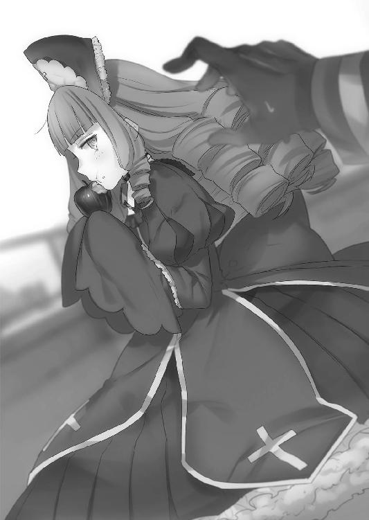
ラピスはもう新しいりんごを取り出している。聞く耳持たず。
タケルは頰を搔きながら、距離を置いた状態でラピスに苦笑する。
「お腹がいっぱいになれば、憂鬱な気分も晴れる......か」
空を見上げながら言うと、ラピスが一瞬りんごを食べるのを止めた。
「確か、お前の前の宿主がそう言ってたんだよな？ 至言だな」
ラピスは答えない。りんごを口から離して、お腹のあたりで大切そうに両手で包みながら、遠くを見ている。
「でも、てことはやっぱり俺が嫌な思いをさせたんだよな」
「............」
「......俺はお前を傷つけた......そうだろ？」
横目でラピスを見る。
ラピスはタケルを見ずに、ゆっくりと唇を開いた。
「傷つく......刃こぼれは確認できませんので、ご心配なさらず」
久しぶりに聞いたラピスの声だったが、相も変わらず抑揚が無い。
しかもどことなく突っぱねるような感情が込められているように思えた。
人間と魔導遺産の思考回路はかなり異なる。人間が傷つく事柄と、魔導遺産が傷つく事柄は一致しないのだ。時には理解に苦しむ言動や行動を起こすこともある。
タケルもラピスと一緒にいて、彼女の態度に疑問を感じなかったわけではない。
今までは突っ込んで聞いたりはしなかった。剣と使い手以上の関係をタケルは求めてはいなかったし、ラピスも同じだろう。
けれど、試みれば理解し合うことはできるはずなのだ。
今は前よりずっとラピスの心を感じることができるのだから。
「もしも精神的に負担を強いられたのかと聞いているのでしたら、それもご心配無く。私は魔導遺産ですので、人間のように心的外傷を負ったりはしません」
「そんなことないだろ。お前は結構プライド高いと思うし、嫉妬とかもしてたじゃんか」
「何の話でしょうか」
「......他の連中と一緒で、お前も結構意地っ張りか？」
「これ以上の干渉は不必要と考えます。すでにあなたは私の宿主ではないのですから」
宿主ではない。そう言われて、タケルは眉をひそめた。
「......そりゃどういう意味だよ？」
「言葉通りです。あなたは私を手放した。それが全てです」
「手放したって......俺はそんなこと──」
そこまで言うと、タケルの頭の中にノイズと共に記憶が流れ込んだ。
キセキと共に自害しようとしていた瞬間、タケルは確かにラピスを手放していた。
全てに抗う決意をして、しかしその術が見つからぬまま、キセキを殺すという選択肢だけを放棄した結果だった。
「思い出しましたか」
「いや、あれは別にお前を捨てたわけじゃ......」
「私にとっては同じことです。別にあなたを責めているわけではありません。私が、あなたの願いを叶える願望器として相応しくなかった。それだけです」
これ以上話すことはないと言わんばかりに、新しいりんごを齧り始める。
ようはつまり、ラピスは捨てられたと解釈していじけているわけだ。
前にも思ったが、やっぱり可愛いとこあるな、とタケルは思う。
同時に、宿主と呼んでくれないことに寂しさを覚えた。
「......でも、俺とお前の契約は切れてないぞ。今だってこうして俺は生きてるわけだし」
「私は魔導遺産ですので、単独での戦闘力は極めて脆弱、いっそ皆無と言えます。現在、私は幻想教団に捕らえられた状態にあるのですから、すぐに契約を解くのは得策ではない」
「............」
「それだけです」
取りつく島もないというのはこのことだった。
そんなつもりはなかったとは言え、あの時手放したことは事実だ。
タケルは素直に頭を下げた。
「本当に悪かった。ごめん」
「謝る必要はないと、そうお伝えしたつもりですが」
「いや、俺が悪い。勝手に願いを押しつけて、勝手に願いを放棄したんだ。俺の優柔不断さでお前を失望させたのは、言い訳できない事実だ」
タケルは心からの謝罪を口にして、ラピスの方へ身を乗り出す。
「でもせめて、もう一度チャンスをくれないか」
「何故ですか。あなたにはもう私は必要ないはずです」
「いや、必要だから言ってる」
「保身のためですか。それとも草薙キセキ様のためでしょうか」
「それだけじゃない。俺は剣士としても、人間としてもお前を手放したくない」
「......人間として？」
「ああ、俺はお前のことも、仲間だと思いたい」
本心から出た言葉だが、ラピスは小首を傾げて疑問符を浮かべる。
「私は魔導遺産だと言ったはずですが」
「わかってる。俺が人間として、お前を手放したくないって意味だ」
「意味がわかりません」
「そんなことない」
「............」
「俺はお前のパートナーとして......お前のことが知りたい」
真剣な顔で、タケルは自らの気持ちを伝える。
魔導学園へやってきてから、初めてラピスがタケルを見た。
風が吹いて瑠璃色の髪が揺れる。
「知って、どうしようというのです。意味がある行為とは思えません」
「意味はある。俺がお前のそばにいるために必要なことだから」
「......よくわかりませんが、質問には答えます。私はすでに審問会の管理を離れていますので、言葉の規制は解かれていますから」
いつもと何も変わらない無表情。
けれどタケルには、その姿が悲しみを表しているように見えた。
酷く遠い場所にいて、何も無い、滅んだ世界でただ一人佇んでいるような、そんなイメージが頭の中に浮かぶ。思わず手を伸ばして、自分が隣にいることを知らせたくなる。
タケルは得体の知れない衝動を抑え込んで、聞きたいことを聞くことにした。
「お前が、別世界の産物である神器だってのは本当か？」
まず先に核心に迫ることを聞いた。
意外なことにラピスはあっさりと口を開いた。
「はい。本当です。異界識別番号１０２３、即ち、この世界で北欧神話世界と呼称される異次元にて、私は製造されました。あなた方が神と呼ぶ生物達が使用する神器であることは間違いないでしょう」
前もって聞かされていたことだが、衝撃を受けなかったと言えば噓になる。
「......だったら何故、お前はこの世界に存在できている？ 召喚魔法で呼び出されたにしても、魔力の供給が無ければ現界できないはずだ」
「理由は不明です。私は北欧神話世界の情報を損傷しています。同時に私の人格と呼ぶべき代物は、この世界へやってきてから......詳細にお伝えするならば、魔女狩り戦争が終結してから生まれたものなのです」
「............」
タケルが息を吞むと、ラピスは淡々と答えた。
「北欧神話世界は九八％ほどの確率で、すでに存在していません。何らかの原因で滅びています。現在、召喚士による北欧神話世界へのコンタクトが不可能となっていることから、信憑性のある仮説かと思われます」
神話世界の滅亡......聞いたこともない話だった。
けれどラピスは噓を言っていない。繫がりが強くなった今、そんなことはすぐにわかる。
「......お前がこの世界を壊滅に追い込んだ......不可視災害を引き起こしたというのも、本当か？」
「厳密に言えば違います。不可視災害は私単独ではなく、もう一つの黄昏仕様との──神器同士の衝突により発生したものです」
「もう一つの神器？」
「レーヴァテインと呼ばれる、私と同じ力を持った神殺しの魔剣です。大半の性能は失われているようですが、現在も幻想教団の手にあることは確認済みです」
「......じゃあ、審問会と幻想教団は、魔女狩り戦争でお前とレーヴァテインを使って、あの災害を引き起こしたのか？」
「二名の使い手により神狩り化が行われ、私の魔力属性である『黄昏』と、レーヴァテインの属性である『破滅』が衝突し交じり合ったことにより、『虚無』属性の魔力が発生。世界を覆いました」
現実離れした話だった。
審問会と幻想教団は、互いに最終兵器として神器を所持していた。そして、追い詰められた幻想教団がレーヴァテインを使用。対抗策として審問会もミスティルテインを使用した。互いが互いに大量破壊兵器を使ったことによる、世界の滅亡。
ぞっとする話だった。
「結局、どっちが勝ったんだ？」
「我々はレーヴァテインを半壊、契約者に重傷を負わせることに成功しましたが、結果だけ見れば相打ちということになります」
「お前の、前の宿主はどうなった？」
「............」
「............？」
「神狩り化の暴走により制御を失い、死亡しました」
タケルは、ラピスの声に少し間があったことを聞き逃さなかった。
神狩り化の詳細の方が重要ではあるのだろうが、どうしても今の間が気になった。
「その宿主、どういう人だったんだ？」
「......？」
「興味あるんだ。お前と一緒に戦ってた人がどんな人だったのか。お前を扱うくらいだ、相当な使い手だったんだろ？」
「剣術の腕はあなたには遠く及びません。ですが、強い人であったのは確かです」
「名前は？」
タケルが問うと、ラピスはガラス玉のような瞳でタケルを見た。
「草薙ミコト。あなたと同じ血筋、つまり草薙家の女性でした」
一瞬、心臓が止まるかというほどの驚きに声を失った。
草薙ミコト。聞いたことはないが、その人物が女性というのなら......。
「女性って言ったよな？ 今、確かに！」
「はい。言いました」
「だったらキセキと同じ状態だったはずだ！」
「いいえ、全く同じではありません。彼女も自分の力に苦しんではいましたが、常に暴走状態ではありませんでした」
タケルは容赦無くラピスに近づき、彼女の肩を摑んだ。
一五〇年前ということは、四代ほど前の草薙の人間ということになる。
まだ今ほど『百鬼夜行』の力が強大ではなかったのかもしれないが、それでもあの力を自分で抑えつけることなど不可能だったはず。何より、草薙の女子は生まれてすぐに殺されるしきたりなので、よほどのことがない限り生きているわけがないのだ。
「その人のこと、教えてくれ！ もしかしたらキセキを救う糸口が見つかるかもしれないんだ！」
切羽詰まった様子で、タケルはラピスを問い詰める。
しかしその時、屋上の扉が勢いよく開かれた。
扉から、肩を激しく上下させたカナリアが現れる。
「はぁっ、はぁっ......お前......何やってる......！」
「何って、ただラピスと話を......」
「捜さないでこんなとこでりんご食ってんなーっ！」
カナリアがタケルに向かって走り出す。
「ちょちょ待て待て！ 捜してたしちゃんと見つけ──ええええ......？」
ラピスの姿を確認させようとしたが、今まで肩を摑んでいたというのに、ラピスはどこにもいなかった。りんごの紙袋だけが置いてある。
「うそん!? 待て、今までここに──」
「ちょいやあああああああ！」
カナリアが助走をつけた跳び蹴りを繰り出す。
彼女のツッコミをもらえば下手すると死ぬので、タケルは身体を反らしてそれを回避。
「あ」
回避したせいで、カナリアがそのまま屋上から外へ投げ出された。
軽く高さ五〇メートル近くある屋上からダイブである。
タケルは慌ててカナリアの手を摑んだが、勢いが止まらずにそのままタケルも屋上からダイブしてしまった。
「やっべええええええええ！」
完全に涙目になりながらカナリアと絡み合うように地面へ落ちていく。
正直、こんなしょうもない場面で死ぬことになると思っていなかった。優柔不断をようやく振り切って決意したというのに、まさかウッドエルフの跳び蹴りで早々に人生の幕を閉じることになろうとは。
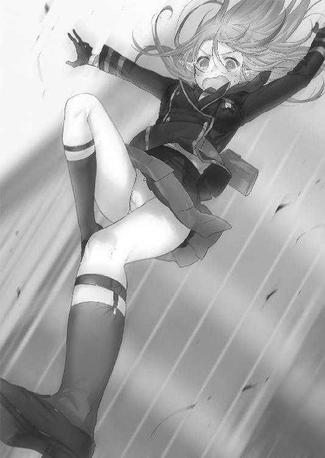
タケルはせめてカナリアだけでも助かるように、彼女を抱いて身体を反転。自分の身体が下になるような体勢を取ろうとした。
「!? 胸触んなハゲ！」
「そんなこと言ってる場合──ごふぉっ！」
鳩尾にカナリアの肘鉄が炸裂する。何故この状況でハゲ呼ばわりされながらアクロバティックに殴られなければならないのか。タケルは「もう嫌」と呟いて涙する。
しかしそこで、今度はカナリアがタケルの胸ぐらを摑んだ。
カナリアは落下途中に校舎の窓の縁を摑み、軽々とぶら下がった。反動でタケルの首がコキッといい音を鳴らしたが、落下は止まり、二人とも無事だった。
ウッドエルフは身軽で怪力というが、度が過ぎている。
カナリアはだらんとして泡を吹くタケルを睨んだ。
「マザーに報告する......自由に歩けないようにしてやるから覚悟しろ......！」
カナリアはその後、思い切りタケルの身体を振り上げて、校舎の中へ投げ捨てた。
暴力的にもほどがある救出劇の末、タケルは学園内の生徒に奇異の眼差しを向けられながら、割れた窓ガラス片だらけの床で情けなく涙を流して気を失った。
第三章 ラピスラズリ
魔導学園の授業は対魔導学園とは違い、午後にも行われる。
試験小隊のようにポイントを稼ぐ必要は無いが、定期的に自分の魔法の成果を発表する必要があるとのことだった。退学にはならないものの、成果が認められなければ留年という厳しい原則があるらしい。一応タケルも魔導学園の生徒として、期末試験には魔法に関する論文を提出するように言われている。もちろんそんな頃まで長居するつもりは無いので、授業は適当にやり過ごすだけだった。
現在は放課後。
デスクワークに慣れていないタケルは、凝り固まった肩を回してほぐしていた。
「タ～ケルっ」
そこへ妙に上機嫌なマリがやってきた。後ろにはイニアとアナンダも一緒だ。
「おう、どうした三人揃って？」
「せっかくだから、イーストサイドの街を案内してあげようと思ってさ。知っておいたほうがいいでしょ？」
マリが机に手を置きながら提案してくる。
タケルは少し迷ったが、これ以上マザーやオロチから情報を引き出すことは難しいだろうし、魔導学園の実情を知っておいて損は無いと思った。
タケルはマリの耳に口を寄せた。
「ラピスも一緒にいいか？」
言いながら、ちらりと隣の席を見る。ラピスは前を向いたまま動かない。
「別にいいけど......何かあったの、あんた達？ こっちきてから余所余所しいよね？」
「いや......まあ、な」
タケルがバツの悪そうな顔をするのを、マリは訝しげに見つめる。
とりあえずマリの了解が得られたのでタケルがさっそく外へ向かおうとしていると、
「ダメだダメだっ。外を歩くなんて絶対ダメ。カナは許さないぞ」
胸の前で腕を組んだカナリアがそばへやってきて、タケルを睨んだ。
屋上でのことをマザーに報告してタケルの自由を奪おうとしたのだが、結局却下されてふてくされているようだった。
マリはカナリアを無視して、レッツゴーと腕を上げながら教室を出ようとした。
「無視するな！ ゆーこと聞け！」
カナリアが真剣な顔でマリの肩を摑む。マザーの部下として、外を歩くことを許可できないのは当然だろうとタケルは思う。
マリはめんどうくさそうに振り返った。
「あーもううっさいわね。あんたも来ればいいだけの話でしょ～？ 仲間はずれが嫌ならそう言いなさいよ」
「カナはお前らと違って忙しい！ 別に一緒に遊びたくなんか──」
「はいはいわかったわかった。あんたの好きなキャンディー一袋奢ってあげるから」
「──マリはしょうがない奴だな。カナが護衛としてつき添ってやる」
一瞬でカナリアもレッツゴーと腕を上げていた。
（弱っ！）
速攻で懐柔されたカナリアにそれでいいのかと思いながら、タケルはラピスの方を向いた。
「ラピス、行くぞ」
「............」
ラピスに手を差し伸べる。
ラピスはゆっくりと顔を上げて、タケルの手を見た。
しかし彼女がその手を握ることは無く、音も無く立ち上がって横を素通りしてしまった。どうしたものかとタケルは頰を指で搔き、ラピスの後を追った。
日が傾いてきた頃、タケル達は街に出て地上から魔導の世界を見上げていた。
「......すげぇ」
感嘆の声が漏れた。校舎の屋上から見ていた時は綺麗だとは思ったが、ここまで荘厳な佇まいをしている街だとは思わなかった。
空中の建造物の迫力も凄まじいが、目を引くのは空を跳ぶ魔女達の姿だ。箒星のように高速で空を飛び交っている姿は下手な見世物よりも面白い。
よく激突しないものだと感心してしまう。
「マリも空飛べたりするのか？」
「『極光』は汎用性高いから飛行の応用は簡単よ。あの箒型の飛行触媒があれば、魔女なら誰でも飛べるんじゃないかしら。あたしは無い方が飛びやすいけどね」
「......いいなそれ。すごくいいな」
珍しくタケルが目を輝かせている。結構、ヘリコプターとか戦闘機とか、そういった空を飛ぶ物に憧れちゃっている男なのだ。
マリはわくわくしているタケルの横顔を覗き込んだ。
「......一緒に、飛んでみる？ 後ろに乗っけることもできるんだけど」
「二人乗りできるのか!?」
「二人乗りは珍しくないわよ......まあ、やるのはたいてい、こ、恋人同士だけど......」
頰を搔きながら、マリはチラチラとタケルを見る。
横のアナンダとイニアがニヤニヤとし始める。
「私とアナンダは後ろからついていくとするよ。お二人の邪魔はしないからさ～」
「うむ。アベック飛びなのだ。ヒューヒューなのだ」
「あ、あたしは別にそんなつもりじゃないし！」
マリがムキになって二人につっかかる。当のタケルは空を飛べるということに喜んでおり、恋人同士がどうのという話は聞いていなかった。
皆が和気藹々な雰囲気でそんなことをしゃべっていると、
「ダメに決まってる。飛ぶの禁止」
後ろからついてきていたカナリアが釘を刺した。
マリは頰を膨らませながらカナリアに耳打ちする。
「なんでよ、けちんぼ」
「カナ、魔力無い。飛べない。監視できなくなる。ダメ」
「～～～～......じゃあラピスちゃんの後ろに乗っかってついてくればいいじゃん」
マリがラピスを指差す。ラピスはタケルの後ろの少し離れたところをついてきていた。
「ラピス、お前も飛べるのか？」
「可能ですが、拒否します」
即答だった。視線はそっぽを向いている。
「契約者以外の人間のために魔力を使用したくはありません」
「......ん。じゃあ俺がお前の後ろに乗るから、マリはカナリアを乗せてやれば問題ないんじゃねぇの？」
「はいはーい！ ある！ 問題あるよそれ！」
手を上げて、マリが必死に抗議する。
まるでタケルを乗せるのはあたしなんだからね、とでも言いたそうな顔だ。
マリが一方的に視線の火花を散らす中、ラピスはてこてことタケルの横へやってきた。
そして、ぴとっとくっついてタケルの片腕を胸に抱いた。
「!? こ、の......！ いままであんま絡み無かったけど結構攻めてきやがるじゃないの......今からあたしはそいつを女と見なすわッ！」
ラピスを指差して、意味のわからない宣言をするマリ。
タケルは腕にしがみつくラピスを見下ろして、頰を搔きながら微笑んだ。
「ちょっ、タケル!? なんでちょっと嬉しそうなの!?」
「いや......なんかこっちに来てからずっと避けられてたから、いつも通りの対応でちょっと嬉しいのは事実だ」
「嬉しいの!? こ、こ、このロリコン！」
「誤解すんなって、こいつはなんつーかその......俺の相棒みたいなもんだし。嫌われたままだといろいろ問題があってだな......」
「パ、パートナーってこと......？ 人生の......？ そんなん勝てるわけないじゃん！」
「勝手に人生つけんな......お前は何の勝負をしてるんだ？ 何を涙目になってんだよ？」
「うぅうぅうぅううぅうぅ！ タケルなんてもう知らないよ！」
マリがぷいっと後ろを向いてしまう。
共に戦う二人三脚の相棒という意味で言ったのだが、さらなる誤解を招いたらしい。意味がわからず、タケルはきょとんとしてしまう。
アナンダとイニアはすでに触媒の入った公共ボックスから箒を取り出して跨がっていた。
「マリ～、魔導遺産が相手じゃ分が悪いよ。契約者と魔導遺産は常に繫がってるようなもんなんだから」
「うむ。まあ安心するのだ。魔導遺産と契約者は別の生き物なのだ。結婚もできないし妊娠もしないから、伴侶のポジションはまだ狙えるのだ」
イニアとアナンダがマリを慰めるように言った。
「つ、繫がってるって......いやらしいよタケル！」
マリがさらに涙目になる。
「待て待て、何故そこで俺が非難される!? イニアとアナンダも誤解を招く言い方するなよ！ 俺とラピスはそんなんじゃねぇって！」
「いやぁ、マリってからかいがいがあるじゃない？ 悔しがってる顔とか見てるとぞくぞくぅってするんだよね」
「うむ。トップクラスの成績のくせに、いじるとかわいいのだ。大好きなのだ」
二人がしみじみとサド気味な愛情を口にすると、マリは頰をひくつかせて血管を浮かべた。拳の骨をゴキゴキ鳴らしながら二人に近づいていく。
「誰がいじられキャラですって......！」
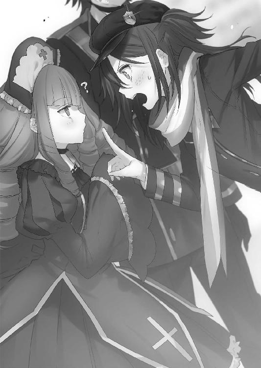
「お、マリが怒ったよアナンダ。ここは鬼ごっこと行こうじゃないか」
「おお、レースか。望むところなのだ。マリの絶望的な運転テクニックで『雷』属性のあたいに追いつけるとは到底思えないのだ」
アナンダが、くふっ、と笑うと同時に、触媒のブースターが稲妻のような魔力を噴射させた。もの凄い速さで空に上がり、流星のごとく飛び去っていく。
「待ちなさいよ！ くっそ、あいつらでこの憂さを晴らしてやるわ！ カナちゃん早く乗んなさい！」
マリもボックスから触媒を引き抜き、その上に跨がる。
「待て！ カナは認めてない！ 勝手に飛ぶな！」
「いいから乗んなさい！」
「絶対乗ら、わっ、わっ、摑むなっ、引っ張るなっ、そのまま飛ぶなわああ～～～～！」
マリがカナリアの首根っこを摑んでそのまま飛び立っていく。
タケルは心配そうに飛んでいった連中を見ていたが、腕にしがみつくラピスに視線を落とした。この感触は懐かしい。何かにつけて引っついてくるのが常だったので、変な話だが、この状況にタケルは安息を感じていた。
「何を笑っているのです？」
「......さっきマリに言ったことは本当だ。お前に避けられるのは辛いもんがある」
「誤解しないでください」
パッとラピスが腕から離れてしまう。
「今のはあなたの命の危険を感じたが故の行動です」
「命の危険って......そんな状況じゃねぇだろ？」
「すぐにわかります」
言いながら、ラピスもボックスから触媒を取り出す。
そして、スカートの裾を気にしながら触媒を跨いだ。
箒型と言っても、見た目は車輪の無いスレンダーなバイクのようなものだった。跨ぐ位置は座席のようになっており、ベルトもついている。
「乗らないのですか？」
「......いや。じゃ、遠慮無く」
ラピスに倣って、後部座席に跨がる。自動でベルトが展開し、腰に巻きついた。
小さい少女がバイクに跨がっているようで、妙にシュールな光景だ。また、その後ろに乗るのが大の男だというのも、ちょっと見た目的に情けない。
「発進します。摑まってください」
言われた通り、ぎこちなくラピスの腰を摑む。
「触媒による飛行は安定性に欠きます。危険ですので、もっと抱きつくように腰に腕を回してください」
「......は、はい......」
これまた言われた通りに、タケルはラピスの背中に抱きついた。
（これは本当に誤解を招くな......）
どう見ても、小さな少女に後ろから抱きつく変質者だった。こうして触れていると、ラピスは本当にただの女の子である。体温は無いが、回した腕に感じるお腹のあたりの感触は非常に柔らかかった。
顎下にはラピスの頭頂部がある。
ふんわりと、ラベンダーのような甘い香りがした。
「行きます」
「──どぉわっ！」
宣言の直後、触媒が急発進する。
甘い香りに意識を持っていかれていたタケルは、あまりの急発進に首を痛めた。
風を裂いて進むという感覚は自転車でも味わえる。
けれど、風になるという感覚はなかなか味わえるものではない。
タケルはめまぐるしく流れていく風景を楽しみつつ、飛ぶという行為を堪能していた。
速度はかなりのものだ。普段掃魔刀によって高速戦闘に慣れているのだから、この程度の速度はどうということはないと思っていたが、掃魔刀は自分が速くなるというよりは周りが遅くなるという感覚なので、高速飛行とは別物だった。
ラピスは建物と建物の間をジェットコースターのようにすり抜けて、急上昇と急降下を繰り返している。別にタケルを楽しませるためにやっているのではなく、マリ達を追いかけているからこのようなでたらめなルートを辿っているに過ぎない。
地上を歩く人も同じように触媒で空を飛ぶ人も、タケル達の飛び方に驚いてはいなかった。こんなことは日常の一部に過ぎないのだろう。
地面スレスレを飛び、建物に衝突する寸前で急上昇。
そのまま空を目指してぐんぐん昇る。
そして結界に触れそうになったところで、ラピスは飛行速度を緩めた。
下を見てみれば、眼下に魔導の世界が広がっていた。
屋上で見た光景とは違う。浮遊している建物も、全て自分達より下にあった。
「すっげぇ......！」
タケルは少年らしい笑みを浮かべて、世界を一望する。
普段から趣味という趣味もなく、剣術と小隊活動とバイトに人生を捧げてきたタケルにとっては、本当に久しぶりに風景というものを楽しむことができた。
月並みだが、鳥になった気分とはまさにこのことである。
「シェルターっていっても、やっぱりかなり広いんだな」
端から端までを見渡して、タケルは感嘆の声を上げた。
しかし、結界の外は朽ち果てた世界が広がっている。聖域と呼ばれる死の荒野。目に見えずとも、あの場所は人を一瞬で死に至らしめる『虚無』の魔力が溢れている。
魔女狩り戦争が作り上げた、世界の傷跡だ。
「............」
戦争が始まれば、この美しい世界も自分がいた世界も、あの結界の向こうのようになってしまうのだろうか。幻想的な風景に浸っていたタケルは、現実に引き戻された。
思えば、遠くまで来た。最初はただの学生で、対魔導学園で審問官になることを目指していただけだった。小隊のメンバー達と関わり合い、紆余曲折を経て仲間になれた。これからもずっと手を取り合ってがんばって、異端審問官になるのだと、そう思っていた。
（全てが変わったのは......）
タケルはラピスの身体を少し強く抱いた。
「なあ、お前は......この世界をどう思う？」
「どう、とは？」
「魔導学園だよ。外側の世界と内側の世界、お前には違うように見えるか？」
「魔力で成り立つ幻想教団と、科学と銃で成り立つ審問会。構成する分子に違いはあれど、この二つにそこまで差違はないかと思われます。統制では外側、治安では内側の方が良好と言えるでしょう。戦力差は不明です。数は恐らく審問会側の有利ですが、幻想教団は一人当たりの戦力が審問会を上回ります。戦争が起これば、泥沼化するのは確定的です」
タケルが呆れたような顔をしているのに気づいたのか、ラピスは顔だけ横へ向けた。
「何か？」
「そうじゃなくてだな......ここで暮らす人と、外側で暮らす人々の違いみたいなことを聞いたつもりなんだが」
「魔女と普通の人間の違いについてでしたら、説明は簡単です」
「......やっぱもういいわ」
ため息を吐いて、タケルはもう一度眼下の街並みを眺める。
「俺達も魔女も、普通に生きて普通に暮らしてる。マリの時も思ったけど、アナンダやイニアだって、外の連中と何も変わらないんだなって改めて感じたんだ」
「............」
「......ここだったら、仲間やキセキを連れてきても、不自由なく暮らせんのかな」
タケルはオロチとマザーの勧誘を思い出して、目を細めた。
タケルは全人類を救うにはどうすればいいかなんて考えたことは一度も無いし、戦争が何故起こるのかなんて、難しい考察を垂れ流したこともない。
心の底からそんなものに興味はない。戦争なんてしたい奴らだけで勝手にやればいいと思うし、理解できない相手のことなんて無視して放っておけばいいだけの話だ。
タケルはただ、自分の周りにいる人々を守りたいだけだった。
住む場所が内側だろうと外側だろうと関係ない。そこに平穏があるのなら、タケルは構わない。
ここに仲間とキセキを連れてきて、みんなで生きていくのも悪くないのではないかと、タケルは思い始めていた。
「ラピスも、ここでだったら普通に過ごせるんじゃねぇかな。人型になってる魔導遺産はいっぱいいるし、不自由しないんじゃないか？」
「審問会も幻想教団も変わりはありません。審問会は設備の整った仮の宿に過ぎませんでした。私は、私を使っていただける契約者がいるのならどこでも構わないのです」
「......そういうもんか」
「そういうものです。契約者に使われてさえいれば満足なのです。私達魔導遺産が一番屈辱だと感じるのは、契約者に必要とされなくなることです」
......やはりどう考えてもまだいじけている。
魔導遺産としての本懐はラピスの言う通りなのだろうが、やはり少し寂しいと感じてしまう。人型でいようといなかろうと、ラピスを物として扱うのには気が引けるのだ。
たとえ剣と使い手だとしても、タケルは信頼できる相棒でありたい。
「屋上でも言ったけど、俺はお前を捨てたつもりはないからな」
「では何故、あの場で私を手放したのですか？」
「あれは......キセキを殺したくなかったからだ。殺すんじゃなくて、全部守るって決めたからだ」
「私は、今度はその願いを叶えればいいのですか？」
「......いや、お前が勝手に叶えるんじゃなくて、一緒に戦ってほしいんだが......俺達は相棒だろ？」
「申し訳ありませんが、あなたのコロコロと変容する願いに翻弄されるつもりはありません。また捨てられるのだけは御免ですから」
思いのほか、溝は深い。
前々から変なところで嫉妬したり照れたりしているのは知っていたが、魔導遺産と人間というものは価値観が違うのだと実感する。
ラピスは間違いなく根に持つタイプだ。なんだか夫婦喧嘩でもしている気分になる。
「捨てたつもりはねぇんだってば......心変わりしたのは謝るけど、誤解がある」
「あなたにとってはただの心変わりでも、契約者との融合を拒絶された私にとっては、それだけ信用が失われる行為だったのです」
「......神狩り化って、融合なのか？ 侵食じゃなくて？」
「はい。契約者との魂の融合です。あなたは人であることを辞め、私と融合することで別次元の存在へと昇華するはずでした。それをもって、神すら屠る戦力を発揮します」
「......よくわかんねぇけど、お前にとってそれはどういう意味があるんだ？」
ラピスは少し考えた風に黙ったあと、淡々と答える。
「そうですね。人間に合わせてわかりやすく表現しますと──セックスと同義です」
............。
「ん？ 何だって？」
「セックスです。性行為のことです。あなたがしたことを人間目線で表現するならば、キスをして、ムードを作り、服を脱ぎ、さあ始めましょうと言ったところで『お前の身体が貧弱過ぎて勃たないからやっぱ別れ──」
「まてまてまてまて！ あれって男女の営みみたいなもんだったのか!?」
あながちアナンダやイニアが言っていたことが間違いではなかったことにショックを受ける。
「我々魔導遺産にとっては、という意味です。生物の最終目的が子孫を残すことであるように、魔導遺産は契約者との融合を最終目的とします」
「......マジか」
そう言われると、男としてなんだか本当に申し訳ない気分になってくる。
「お気になさらず。人間目線で言うならば、『私に魅力が無いのがいけないの。あなたは悪くない』といったところでしょうか」
「......そろそろ人間目線で言うのやめてください、お願いします」
不能って言われてるみたいで傷つく。タケルは両手で顔を覆った。
「でもさ......やっぱ融合ってのは違うと思うんだ。お前が俺の願いを叶えようとしてくれてたのはわかるけど、俺の願いは俺のものなんだよ。手伝ってくれるだけで俺は十分嬉しいというか、俺は自分の願いをお前と一緒に叶えたいんだ」
「願いが叶うという結果は同じです。何が違うのかわかりません。あなたの願いは全て私に任せていれば丸く収まるのです。そこにあなたの意志も思考も必要無い」
「............」
「私は契約者の願いを叶える願望器だと言ったはずです」
きっぱりとラピスは言い放った。
タケルは、それはいくらなんでも一方的すぎると思った。人間の心はそんなに単純じゃない。願いを好き勝手に叶えられるというのは、極めて苦痛なのだ。
キセキの身体がそうであるように......。
一方的な願いの成就は、融合ではなく侵食と同じだった。
タケルはラピスを抱いて、彼女の頭頂部に顎を載せて嘆息した。
「お前ってなんか、やっぱ俺に似てるな」
「はぁ？」
「はぁ？......って、なんでちょっと嫌そうなんだよ。傷つくじゃねぇか」
「あまりに予想外な言葉の羅列でしたので、つい。申し訳ありませんが、私はあなたのように優柔不断ではありません」
「それに関しちゃぐうの音もでねぇけどよ。そうじゃなくて、昔の俺は他人のことなんか考えず、いいと思ったことを一直線にやって自爆する奴だったからさ。今のお前を見てると、なんだか他人事に思えなくてな。人間ってそんなに単純じゃねぇんだぜ？」
「人間を理解するつもりはありません。あなたを理解するつもりもありません」
「......寂しいこと言うなよなぁ～」
タケルはラピスの頭を顎でぐりぐりとした。
「顎で頭をぐりぐりするのを今すぐやめてください。不快です」
「コミュニケーションだと思いやがれ。うりうり。俺はお前のことちょっとは知れて嬉しいんだぞ。知りたくないとか言うんじゃねーよ、うりうりうり」
ラピスの拒絶をわかっていながら、さらに頭をぐりぐりしてやる。
ラピスは黙ってされるがままだったが、どことなくムスッとした空気が感じ取れた。
タケルは今までのラピスとのやり取りを経て思った。
きっと自分は、この小さな少女のことが好きなのだ。何故かどうしようもなく放っておけないし、嫌われたくないのだ。異性としてとか、魔導遺産としてではなく、一人の『人間』として好きなのだ。
ラピスは自分のことを完全な魔導遺産だというが、タケルはそうは思わない。前々から思っていたが、ラピスからは人間臭さが感じ取れる。
タケルは苦笑して、ラピスの頭に片手を置いた。
「俺さ、もうお前が神器なんだとか、世界を崩壊に導いたとか、そういうのどうでもよくなっちまった。きっとそれは頭の悪い俺なんかが考えても仕方がないことだ。それよりも、もっとお前のこと聞かせろよ」
「............」
「屋上でも聞いたけど、草薙ミコトって人はどんな人だったんだ？ ずっと一緒にいたんだろ？ キセキのためってのもあるが、俺のためでもあるから教えてほしい。先に契約した先輩として、お前とうまくやるための参考にしたいんだ」
ラピスは黙り込んだ。
いつもだったら何でも即答するのに、迷っている様子だった。
タケルはいつまでも待つ。過去に何があったのかは知らないが、きっと今のラピスの人間臭さはそのミコトという人物が与えたものに違いないと、漠然と思ったのだ。
しばらくすると、ラピスがかすかに髪を揺らした。
「お話の途中で申し訳ありませんが、先ほどから緊急事態が発生しています」
「ん？」
「二階堂マリ様が事故を起こしました」
淡々と言われて、一瞬「ふぅん」と流しそうになったが、すぐにハッとする。
「事故!? 空飛んでて事故ったのか!?」
「はい。あの方の飛行はかなり乱雑ですので、接触事故を起こしたようです」
遠方を見つめながらラピスが言った。
マリが自分を乗せようとしたときにラピスが止めに入ったのはそういうことか。今になって理由を知り、タケルはラピスの肩を軽く叩く。
「無事なのかっ？ 怪我とかは......カナリアも乗っていたんだろ？」
「心配は無用です。飛行触媒の安全性は99％確立されています。接触時と墜落時に衝撃緩和魔法の呪符が発動しますので、無傷かと」
安堵してタケルが深呼吸をする。
しかし、ラピスは続けて、
「ただし、接触した相手が少々問題のようです。ウェストサイドの生徒であると識別できました。現在、抗争に発展する寸前と判断します」
「......やばいな......急ごう！」
すぐに現場に向かうように頼んだ。
タケルはこの少し後、内側の世界で暮らすのも悪くないという認識を改めることになる。
イーストサイドとウェストサイド。
この二つの勢力の違いがどういうものか、まだタケルはまったくわかっていなかったのだ。
タケルとラピスは上空から急降下し、ビルとビルの間にスピードを落としてゆっくりと着陸態勢をとりながら降りていく。
遠目からでも、下が騒がしいのが見て取れた。騒ぎを聞きつけた人々が集まっているため、なかなか着陸できる場所が見つからない。
中心のぽっかりと空いた場所に、胸の前に腕を組んで立つマリと、その後ろでおどおどしているアナンダとイニアが見えた。カナリアは我関せずという様子で少し離れたところで事の顚末を眺めているようだ。
マリの対面には四人の学生が見える。群青色のイーストサイドの制服とは異なる、赤い制服を着た少年達だった。
ラピスが道の端に着地すると、タケルは人ごみを搔き分けてマリの元へ向かう。
視界が開けると、一触即発な現場を目の当たりにした。
「貴様らイーストサイドの連中が何故この区域にいる？ ここはウェストサイド、我々の領域だ。あまつさえ我々の訓練の邪魔をしたのだ......覚悟はできているな？」
「だからっ、悪かったって謝ってるでしょ？ お互いに怪我は無かったんだし、あたしの謝罪で勘弁しなさいよ......！ この子達は関係ないんだってば！」
現場は言い争いに発展している上に、ウェストサイドの生徒達は攻撃魔法用の触媒杖を手に持っていた。
「いや、形はどうあれ、責任は取ってもらうぞ」
「当然だな。上に報告するのは勘弁してやるって言ってるんだ。黙って言うこと聞いてもらおうか」
リーダー格の眼鏡の生徒の後ろで、三人の取り巻きが煽るようなことを言ってくる。
マリは悔しそうにしながらも、後ろで怯えているアナンダとイニアのためにも、穏便に済ませるよう努めていた。
「......わかった。それで許してくれるなら、言う通りにするわ。でも、他の子は関係ないの。あたしが何でも言うこと聞くから、それで勘弁してちょうだい」
大人しくマリが引き下がると、眼鏡の少年が勝ち誇ったような顔で顎に手を当てた。
「いいだろう......そこの短髪の女、貴様は見逃してやる」
眼鏡がイニアを指差して、さっさと失せろと言ってくる。
「だが、他のデミヒューマン二匹はダメだ。貴様と一緒に我らの奴隷になってもらうぞ」
「はぁ!? 何よそれ！」
「穢れた獣人がウェストサイドに踏み入った......それだけで万死に値すると知れ。混血が我ら純血に歯向かうことは許されんのだ」
眼鏡が言うと、取り巻きがゲラゲラと笑い声を上げた。
「まずは......そうだな、手始めに服でも脱いでもらおうか。その穢れた肉体を皆によく見てもらうといい。見てくれがよければ物好きが相手になってくれるかもしれんぞ？ まあウェストサイドでそんなことはあり得んがな！」
「......っ！ こいつらぁ......！」
怒りに我を忘れたマリが、身体中から虹色の魔力をオーラのように発する。
不意に、マリの肩をアナンダが摑んだ。
アナンダは涙目になりながら、マリに向けて首を横に振った。
「マリ、魔法を使ったらダメなのだ......」
「なんでよ......!? こんな奴ら、あたしが蹴散らしてやるわ！」
「街中で攻撃魔法なんて使ったら、イーストサイド全体の問題にされるのだ......デミヒューマンはまだここじゃ肩身が狭いのだ......これ以上、あたいの同胞達に嫌な思いはさせたくないのだ」
「......だからって......っ」
「お願いなのだ......マリはやらなくていい、あたいは平気なのだ」
涙を堪えながら、アナンダは自分の胸の前で両手をぎゅっと握ってから、上着を脱いだ。
するとアナンダに続いて、イニアも上着を脱ぎ始める。
「私も付き合うよ。もとはと言えば、私らがマリをからかったのが原因だし。マリは下がってな」
「......そんな......！」
「周りの連中はほとんどウェストサイドだよ。ここは丁度東と西の境目だから、攻撃したら全員襲ってくる。ここは私らが我慢すれば済む話なんだよ」
納得いかずに、マリは下唇を嚙んで顔を伏せた。
「そんな顔しないの。服を脱ぐくらいどってことないからさ。私ほら、自分に自信あるし？」
気丈に笑うイニアだったが、マリは彼女の手が震えているのを見逃さなかった。
いまだウェストサイドの生徒はケタケタと笑っている。
「言っておくが下着も脱ぐんだぞ！ 一糸纏わぬ惨めな姿を皆に見てもらうといい！」
眼鏡の言葉に、ギャラリーからもクスクスと笑い声が聞こえてくる。
マリは悔しさに下を向き、拳を握った。
（これじゃ外側も内側も......何も変わらないじゃない......！）
魔法で人が救えることを証明し、魔女に対する迫害の無い世界を作ろうとしていたマリにとって、あまりにも残酷で本末転倒な現実だった。
魔力を持つ人間すら、同類を差別するのだ。外側と違い、内側が平和などというのは幻想に過ぎない。魔導学園の暗部が、目の前にあった。
小隊以外で初めてできた友人が辱めを受けようとしているのに、自分が守ろうとすれば結果的に二人のためにならない。
もどかしい現状に、マリが奥歯を音がなるほど嚙み締めた時......。
「よっ、遅くなった」
肩を誰かの手が摑んだ。
振り返れば、そこには明るい顔をしたタケルが立っていた。
マリの中で、どっと安堵が押し寄せる。
マリは涙を堪えるのを止めて、ふにゃっと泣き始めた。
本当にこの男は、どうしていつもピンチの時に優しい顔で現れるのだろう。
マリは泣きながらタケルの胸に顔を埋めた。
「タケル～～っ、ふぇ～～～っ」
「おいおい泣くなよ──っておまっ、鼻水きたね！」
服がべちゃべちゃになったことを非難されると、マリはタケルの脛を思い切り蹴った。
「いぃぃてぇぇぇっ！」
「あんたねぇっ、優しく抱きしめるくらいの甲斐性見せなさいよ馬鹿～！ 乙女の鼻水を汚いとか言うな馬鹿～！ ていうか遅いのよ馬鹿～！」
「～～～っ、武器調達すんのに時間かかっちまってな。アナンダとイニアも、もうやらなくていいぞ。あとは俺がなんとかすっからさ」
「なんとかするってどうするのよ......？ あれ、タケル......上着は？」
どういうわけかタケルは、魔導学園の上着を着ていない。
「いいから下がってな。危ねぇからさ」
マリが疑問を口にすると、タケルは口元に指を当てる。
「......さぁてと」
タケルはどこかから調達してきた鉄パイプを引きずって、マリ達を守るようにウェストサイドの生徒の前に立った。
先ほどまでの明るさと優しさを併せ持った優男はどこにもいない。
そこにいるのは、冷静な怒りを内包した男だった。
「草薙諸刃流皆伝、草薙哮だ。お前ら、覚悟はできてるんだよな？ 杖抜いてるってことは、こっちも抜いていいんだって解釈したぜ」
鉄パイプを肩に担いで、タケルは告げる。
「......なんだ貴様は。どこの所属だ」
「今名乗ったばっかだろう。草薙タケルだ。所属とかそういうのはよくわからん」
「東か西か、どちらかと聞いている」
「悪いがここに来てからまだ一か月でな。東も西も北も南も無いんだわ」
ウェストサイドのリーダーが眼鏡を指で押し上げて制服を確認しようとするが、タケルは上着を羽織っていない。魔導学園の制服は上着以外は統一されているため、ワイシャツとズボンでは所属を判別できなかった。
「ふん......その粗暴な立ち居振る舞い、どうせ東の連中だろう。わかっているのか？ 我らに魔法を仕掛ければ、イーストサイド全体の立場が揺らぐのだぞ」
「魔法なら、だろ？ 残念ながら俺、魔法とか難しくて使えないんだわ......だから、こいつでやらせてもらうぜ」
タケルが鉄パイプで自分の肩を叩く。
眼鏡の瞳が、鋭く細まった。
「......貴様、無能者か......！」
「？ エン......何？」
知らない言葉に目をパチパチさせていると、横にいたラピスが服を引っ張ってきた。
腰を曲げると、ラピスが耳打ちしてくる。
「エンプティ、空っぽという意味です。魔力を持たない人間への蔑称です」
「あ～なるほど......さっすが俺の相棒、物知りだ」
「現在、私はあなたには使用できませんので、相棒という呼び方は不適切かと」
「......まだ怒ってるんですねラピスさん」
「で、どうするのです。この場を生身で凌ぐのは厳しいかと存じます。逃げることをオススメしますが」
「そいつはやってみねぇとわからねぇ。お前も下がってな」
タケルは再び敵と向き合った。
すでに西側の連中は臨戦態勢に入り、杖の先をタケルへ向けている。
「この学園に無能者の居場所はどこにも無いッ！ 貴様のようなゴミクズがこの場所で息を吸うことを、ウェストサイドとして許可するわけにはいかないッ！──殺せ！ 責任は私が取る！」
血管を浮かべた顔を真っ赤にして、眼鏡が取り巻き三人に命令する。
統制の取れた動きで、一斉に取り巻きがタケルへ向け杖の先を輝かせた。
「「「──《魔力の弾丸》！」」」
放たれる光弾の数々。
タケルは瞬時に掃魔刀を展開し、発射された光弾を目で追う。
（──遅い、いける！）
銃弾に比べれば遥かに速度は劣る。タケルは身体を捻ってやすやすと回避した。
回避した直後、ビルの壁に当たった光弾はまるでショットガンの弾のように破裂した。
（っ、威力は高いか──！）
警戒度が上昇する。残念ながらタケルの持つ鉄パイプは抗魔素材ではないため、魔法への耐性は皆無。二、三度防いだだけでおしゃかになるだろう。
手早く終わらせる必要があった。
「避けた、だと!?」
「今の動き......回避魔法の類か!?」
「癪な真似をしてくれる......！」
狼狽する三人組に、タケルは不敵に笑った。
「魔法じゃねぇ──剣術だ！」
腰を押し沈め、タケルが一気に地面を蹴る。
再び掃魔刀を発動し接近、一瞬で三人の背後を取る。三人組は間抜けに杖を構えたまま、タケルの動きに気づいてすらいない。タケルはまず一人目の後頭部を軽く打撃、そして二人目の右腕を容赦なくパイプで折り砕き、さらに三人目の腰に強烈な一撃をお見舞いした。
掃魔刀を解除し、地面を滑ってスピードを殺す。
スピードが通常に戻ると同時に、どすんと三人が同時に倒れた。
眼鏡野郎は何が起こったのか一切理解できず、倒れた三人を見て後ずさった。
タケルはターゲットを眼鏡に変えて、鉄パイプを水平に構える。
赤く光るタケルの瞳は、鬼のようだった。
「どうした眼鏡野郎......何を怯えてる。先にふっかけたのはそっちだぜ。こっちも友達の名誉のために全力で征かせてもらう」
「馬鹿な......あり得ん......！ こんな一瞬で......！」
「お前、純血の魔法使いなんだろ。だったらその血に準じて気高くかかってこい。俺はお前を対等な相手として、尋常に相手してやるぜ」
眼鏡野郎はタケルの闘志に気おされ、短い悲鳴を上げてずるずると下がっていく。
「っ、お、お前達！ 何を見ている！ 貴様らも同じウェストサイドだろう！ 見ていないで私に手を貸せ！」
眼鏡野郎が周りのギャラリーに助けを請う。ギャラリーの大半はウェストサイドの生徒だ。ぞろぞろと、タケルに向かって杖を向けてくる。
（......この数は、まずいな）
タケルから余裕が消える。さっきの動きで身体中の筋肉が少し軋んでいる。銃と違って避けるのは容易いため、掃魔刀による加速は最小限で済んでいたが、これは数が多すぎる。
迷っている暇は無い。今はやれるだけ多く蹴散らすのみ。
「おおおおおおっ！」
雄たけびを上げて、ウェストサイドの集団に襲い掛かる。
場は乱戦と化していく。五人、六人、十人。魔弾が飛び交う中、掃魔刀を発動し続けながら着実に敵を沈めていく。
しかし、
「──くっっっっ！」
十一人目に打ちかかろうとした瞬間、右足の筋肉を痛みが襲った。
「!? 止まったぞ！ 殺ってやる！」
十一人目が杖を向け、魔力を収束させる。
照準は頭だ。当たれば確実に死ぬ。
タケルはふらつく身体に鞭を打ち、なんとか体勢を低く落とそうとした。
「がっ──!?」
唐突に、その十一人目が身体を揺らして地面に倒れた。
タケルがやったのではない。何事かと顔を上げると、そこには、
「......ふん」
刃のついていない刀を持ったカナリアが立っていた。
ずっと端で不機嫌そうに眺めていただけだったが、どうやら助太刀してくれたらしい。
タケルは警戒を切らずにカナリアと背中合わせに立った。
「だから飛ぶなと言った。止めなかったお前が悪い。自業自得」
「ごもっとも......でもいいのかよ、お前だってイーストサイドの生徒だろ？」
「ウッドエルフ魔法使えない。問題ない」
「なるほど──んじゃ、さっさと終わらせるか」
「足引っ張るなよタケル」
「妹弟子がナマ言うぜ！」
「兄弟子ぶるな！」
二人は同時に迫り来る敵に立ち向かう。
一人の暴風でなぎ倒せずとも、二人の暴風ならばいくら人数がいようと容易かった。先手必勝、撃たれる前に倒すべし。触媒を使っているのなら、術式構築の大部分を杖に頼っているのは明白だ。二人は優先的に杖を叩くように努めた。
魔弾と魔弾の間を搔い潜り、杖を弾いて相手の胴体に一撃を叩き込む。適度に加減しているが、骨の一本や二本折れるのは気にしなかった。
銃と違って若干の溜めが発生する魔法に対処するには、二人で十分だ。
お互いに諸刃流の使い手だけあって、連携は意識せずとも取れていた。相性は不思議なことに抜群に良い。タイミングから呼吸まで、二人の動きは完全にマッチしていた。
わずか三分で四十名近い魔法使い達を、タケルとカナリアは全て倒しきっていた。
ウェストサイドの生徒達が呻く大通りに、二匹の鬼が立っている。
「......助かったぜ、カナリア」
「ふん」
タケルが鉄パイプを地面について息を吐くと、カナリアは腕を組んでそっぽを向いた。
さすが頑丈なウッドエルフだけあって、息も切れていないし身体への負担もほとんど無いようだった。対してタケルの身体はオーバーヒート寸前だ。
ラピスの恩恵を改めて思い知る。魔女狩り化しなければ、タケルは今までの戦いで生き残れはしなかっただろう。
生身の自分の弱さにへこみつつも、背筋を伸ばしてカナリアの頭に手を置いた。
びくっとカナリアの肩が震える。
「本当にたいしたもんだ。これじゃ兄弟子ぶれねぇな」
賞賛すると、カナリアは視線をきょろきょろさせつつも、撫でる手を払いのけはしなかった。ちょっとだけ顔を赤くして、されるがままになっている。
「......な、撫でるな。痒い」
「お、殴ってこない。一緒に戦って少しは打ち解けてくれたか」
言ったそばから拳が飛んできたが、予測していたタケルはひょいと回避した。
「調子のんなハゲ！」
「悪かった悪かった！ 調子に乗りすぎました！」
「カーッ！」
「なんだお前、猛獣か何かか？ 悪かったって！」
ブオンブオン刀を振りながら迫ってくるカナリアを苦笑しながらあしらう。
兄妹弟子でじゃれついていると、裏返ったような声が響いた。
「──き、貴様ら動くな！ 我らに楯突いて、どうなるかわかっているのか!?」
完全に忘れていた眼鏡君に、タケルとカナリアは視線を向ける。
眼鏡の姿を見た瞬間、カナリアはくだらない展開に呆れたような顔をした。
眼鏡はラピスを人質にとって、杖を彼女のこめかみに押しつけていた。
「動けばこいつを殺す......！ 仲間を殺されたくなかったら武器を捨てろ！」
あまりに小物っぽいお決まりの台詞に、カナリアは完全にやる気をなくしていた。
反してタケルは一歩足を前へ踏み出し、無表情に眼鏡を見やる。
ラピスはいつもと違うタケルに、静かに声をかけた。
「私は魔導遺産です。この程度の魔法使いに破壊されることはありません」
安心させるようにそう言うが、眼鏡が引きつった笑みを作った。
「は、はは！ そうか魔導遺産なのか！ 私の属性はお前達のような無機物に対して最も効果を発揮するのだ！ 三流魔導遺産程度ならば容易く破壊できる！」
三流呼ばわりされて目を細めたが、ラピスはタケルから目を離さない。
「大丈夫です。そのまま引いてください。私は勝手に脱出しますので」
「............」
「......聞いているのですか？」
ラピスがいくら声をかけても、タケルは近づくのをやめなかった。
「こ、こっちにくるんじゃない！ 貴様、こいつがどうなってもいいのか!?」
眼鏡の悲鳴を耳にしながら、タケルは彼の目の前で立ち止まると、鉄パイプを後方に引いて突きの構えを取った。
そして全身に力を溜め込むように構える。
「......お、おい、タケル」
カナリアが止めに入ろうとする。タケルの構えを見て、彼が何をしようとしているのかすぐにわかったからだ。タケルは限界まで力を溜め込むと、鋭い目で眼鏡を睨んだ。
「草薙諸刃流──滅槍・一角獣！」
力を解放し、眼鏡に向けて突きを放つ。
空気が破裂するような風切り音が響き、鉄パイプの切っ先が眼鏡に襲い掛かる。
しかし彼の眼前で、タケルの突きは何かにぶち当たって停止した。
赤色をした半透明な壁がタケルの前に立ち塞がっている。鉄パイプの切っ先は壁に突き刺さるようにして止まってしまった。
「は......ははは！ あらかじめ防護魔法を張っておいたのだ！ バカめ、銃弾をいくらくらっても防ぎきる魔力密度だ！ 審問会との戦争に向けて鍛え上げた私の成果だ！」
タケルはもう一度身体を引き、二度目の突きを放つ。
魔力の壁は皹こそ入れど、砕けはしなかった。
どころか、手に持った鉄パイプに凄まじい熱を感じる。切っ先を見てみれば、パイプの壁に触れた部分が赤々と光っている。熱で溶けているようだった。
「私の属性は『伝熱』だ！ どんな物質であろうと熱を伝える驚くべき魔法を可能とする！ ただの防護魔法であろうと、『伝熱』の効果を付与させているのだ！ わかったら引け！ さもないとこの魔導遺産も溶かしてしまうぞ！」
眼鏡の言葉が聞こえていないのか、タケルは構わず何度も突きを放つ。
パイプはどろどろに溶けて形を失って、ついには持っていられなくなった。
だが、タケルは──
「──はあぁぁッ！」
武器に頼らず、今度は防護壁を素手で殴りつけた。
「なっ......頭がいかれたのか!?」
掃魔刀を発動した状態で筋肉を最大限に活性化させて、拳を放つ。
当然壁の熱は皮膚を焦がし、加速の衝撃により骨は砕けた。
とはいうものの、その状態から繰り出す一撃は銃から発射される弾丸に匹敵する。
タケルは何度も、何度も何度も同じ箇所を高速で殴り続けた。
「う、噓だ......こんな、ことが......」
皹の入った箇所が、次第に広がり始めていく。
皹が夥しい量に増えた頃、タケルは拳をぶつけた状態で一度動きを止めた。
そして自分の肉の焼ける匂いを嗅ぎながら、顔を伏せた。
「てめぇは喧嘩で一番やっちゃいけねぇことをした......格闘は専門外だが、代償は俺の拳で味わってもらうぞ」
「......ひっ！」
「その何の値打ちもねぇくっっっだらねぇプライドと一緒に──」
タケルは拳を思い切り引いて、伸びた前髪から鬼の瞳を覗かせる。
そして、
「──地の果てまで吹っ飛べ！」
最後の一撃が防護壁を砕くだけに留まらず、壁ごと眼鏡の頰を殴りぬけた。
容赦ない右ストレート。顎を砕き頰を砕き、眼鏡の身体は頭から後方へ吹っ飛んだ。
眼鏡は地面を滑りながら、そのまま壁に激突。ぴくぴくと痙攣しながら動かなくなった。
タケルは吐き捨てるように短く息を吐く。殴った感触から察するに、首の骨は折れていないはずだ。脳震盪を起こしていて重症には違いないだろうが、命に別状は無いだろう。
息を整えて、呆然と立ち尽くしているラピスの肩にそっと手を置く。
ラピスは、自分の肩に置かれたタケルの手を見る。
皮膚は溶け落ちて、折れた骨が肉を突き破って外に出ていた。
「......怪我ねぇか、ラピス」
優しげに言われて、ラピスはタケルを見る。
タケルは、心底安堵した顔をしていた。
「バカですか、あなたは」
「酷い言われ様だな......」
「心配無いと言ったはずです。私は『伝熱』程度の属性魔法に破壊されたりはしません」
「......まあ、それに関してはそこまで心配してなかったけどよ」
「では何故ですか。理解できません、下手をすれば腕を失っていたのですよ？ 私に彼を打倒することはできませんが、彼にも私を破壊することはできません。諦めるのを待てばよかっただけの話です」
ラピスが理解不能を伝えたものの、タケルは苦笑するばかりだった。
タケルは腕の痛みに耐えながらラピスの問いに答える。
「単に俺が嫌だったんだ。あんなクズにお前が傷つけられるのも、触られるのもな」
タケルは左手の甲で軽くラピスの頰を押す。
「お前は俺の剣だ。いや......俺だけの剣だろ？ 独占欲ってやつだよ」
「............それは......どういう」
「お前のことが好きってことだ。だから誰にも汚されたくねーの」
言った瞬間、ラピスは目を見開いて啞然とした。
変な意味じゃねーよ？ とつけ加えてタケルは笑う。
「それにお前だって、俺がピンチだったら助けに来てくれるだろ？ いつもお前には守られてばっかなんだ。たまには俺もお前を守りたかったんだよ」
やはりラピスの表情は変わらない。
けれどタケルは、頰に触れた時彼女の鼓動のようなものを感じた気がした。
ラピスは真っ直ぐに、タケルを見つめている。
一瞬時が止まったかのように思えたが、しばらくすると唇を微かに震わせて口を開いた。
「..................そう、ですか」
今度は、わからないとは言わなかった。
タケルは満足そうに微笑みを浮かべる。ようやく蟠りが解け始めたようだった。捨てたと勘違いされていたのだから、最初から好きだとストレートに本音を言えばよかったのだ。今は不器用なりのストレートさが功を奏したと言っていい。
好き、くらいの感情はラピスにも理解できるようだった。
二人がそんな微妙なやり取りを繰り広げていると、
「いちゃついてるところ悪いんだけどさ......そろそろあたしに気づきなさいよ......！」
背後でマリが鬼の形相で立っていた。マリの後ろには、アナンダとイニアの姿も窺える。
「おう、マリ。アナンダとイニアも無事か？」
「っ、あたしが守ってたから無事よ......それより手、見せなさいよ！」
「ああ......痛ってー......！ これやばいな、治んなかったらどうしよう？」
「ほぼ骨しか残ってないじゃん......ほんとばっかじゃないの？ 回復魔法はあんま得意じゃないから応急処置しかできないけど......まあ、イーストサイドの救護室はマジですごいから、細胞の再生もできるでしょ。治るわよ、たぶんね」
タケルはマリに平謝りしながら応急処置を受ける。
場はほどなくして丸く収まった。
死者はいないため匿名で救護室に連絡を取り、救護班を手配した。
恐らくウェストサイドの連中はこの事件に関して上に報告したりはしないだろう。純血の魔法使いが無能者に敗北したなどと、口が裂けても口外しないはずだ。
だが、これを機にタケルは魔導学園が平和だという認識を改めた。
平和なのはイーストサイドだけであって、ウェストサイドではこれだけ容赦のない差別が横行している。この場所が安全だというのは幻想だった。
応急処置を終えて立ち上がり、タケルは後ろを振り返る。
ウェストサイドの街並みは、イーストサイドとは異なり閑散としていた。ゴミ一つ落ちていない上に古風な景観だが、途方もなく無機質だ。
建物の陰や道に立つ人々は、タケル達を異な物を見る目で見ている。
罵詈を含んだ囁き声は、耳を塞ごうとも決して打ち消せはしないだろう。
外側の世界の魔女に対する畏怖とは違う。
内側の世界には、人間に対する侮蔑が蔓延っていた。
「......戻ろう。ここに長居するのはまずそうだ」
タケル達は早々にその場を離れた。
足早にウェストサイドとの境界線を出る。
「............」
その間中、ラピスはタケルの背中をじっと見つめていた。
第四章 最初の宿主
ウェストサイドの生徒との喧嘩から二日後。
時刻は深夜二時を回っている。
当然のことながら、魔導学園には生徒どころか教員も一人も残っていない。
冷たい空気が張り詰めた魔導学園の中庭に、剣戟の音色が響いていた。
火花を散らし、二つの刃がぶつかり合う。目で追えないほどの速度で交わされる斬撃に継ぐ斬撃。二人の剣士、タケルとオロチは、久方ぶりに剣を交えていた。
両者共、木刀ではなく真剣だ。諸刃流の稽古は基本的に竹刀や木刀を使わない。常日頃から真剣で行うことで、失敗の許されない正確な動きを身につけるのだ。
一歩間違えればどちらかが死ぬ状況での稽古は、精神を削る。かといって手加減することなど許されない。相手が少しでも怯んだ場合は、容赦無く斬っていいという掟があった。
いかなる状態、体勢であろうと、最大出力を込めて正確に相手を斬る。
それが諸刃流の骨子だ。
火花の中で互いに剣を鬩ぎ合わせながら、オロチは楽しげに笑う。
「病み上がりにしちゃ結構動けるじゃねぇか」
「そいつは......どうも......ッ！」
「だが誉めてやれるのはそこだけだ。他は全然なってねぇ。中途半端に掃魔刀を身につけたせいで、動きが遅い上に身体に負担をかけすぎている」
オロチの説教に反論の余地は無い。タケルがすでに汗だくで身体中が悲鳴を上げているのに対して、オロチは呼吸すら乱れていない。
「ウェストサイドの連中とやりあってた時も全然動けてなかったな、お前さんはよ」
「!? 見てたんですか......！」
「おう。デガラシ一人にお前さんの監視を任せるわけねぇだろ？」
「っ、だったら助太刀するのが先生ってもんだろう!?」
「ふざけんな。てめぇで蒔いた種はてめぇで刈り取るのが筋だろうが。ま、お前さんの腕がどこまで上達したのか見たかったってのもあるけどな」
「......く......！」
「したら案の定──ぜぇんぜん成長してねぇでやんの。お師匠さんもびっくりだぜ」
オロチは手応えのなさに、キシシとおちょくるように笑う。
「おいおいタケル、今剣を交わしている相手は誰だ？ てめぇの師匠だぞ。何で全力でこねぇの？ 日和ったの？ 日和っちゃったの？」
「ちがっ......これ以上速度を出すと身体が──」
「甘えんな雑魚が。そんなんで俺様に勝てるとでも思ってんのかボケ」
ドスの利いた重い声に、タケルは身震いした。
押し合っていたオロチの刀身が消えた。勢い余ってタケルは前へつんのめる。
オロチの姿が無い。されどタケルがその事実に気づく前に──
「──日和ったな。全力だ」
下方。タケルの懐の真下で、鞘に刀をしまい込んだオロチが抜刀の構えをしていた。
やばい──！
頭の中で考えるよりも先に、タケルは意識を完全に防御に集中させた。
「草薙諸刃流──怪火蛍」
直後、タケルは閃光を見た。蹲るような構えから逆手持ちで繰り出される抜刀術。
下から上へ切り裂く逆ギロチンのような一刀。このまま喰らえば、タケルは股から脳天まで真っ二つ。
「──ちくしょっ！」
タケルは咄嗟に限界まで速度を上げ、左腰の鞘を手にとって足下より迫る一撃を受け止めた。
されどオロチの一撃は閃光である。鋼鉄製の鞘で受け止めたものの、タケルの身体は大きく後方へ吹き飛ばされた。
逆手からの抜刀は隙が大きい。下から上へ引き抜かれる独特な一撃は、刀身が跳ね上がるのだ。故に一撃を防げば安心──などということは無い。
怪火蛍は一撃をもってその名を冠するのではない。真明流鮫ノ太刀の原型。この技は決して、どんな流れにも逆らわない。流れに乗って、連撃を繰り出すのが特徴だ。
吹き飛ばされたタケルの真上には、すでにオロチの姿が迫っていた。オロチは抜刀で跳ね上がった刀を押しとどめるのではなく、そのまま勢いに乗ってジャンプしたのだ。
オロチは跳ね上がった刀身の軌道を旋回させるように変え、そのまま押し沈めるように振り下ろした。タケルは急いで防御を取る。
「ぐぁっ！」
身体が地面に叩きつけられる。上手く受けたはいいものの、衝撃を殺せずに足の骨が軋みを上げた。痛みに呻く暇も無く、目の前にオロチが着地。
オロチは着地した勢いすら足のバネに乗せて、燕が水面スレスレを飛び、急上昇するかのように刀身を振り上げた。
攻撃が不発であろうと、防御されようと、怪火蛍はその全ての勢いに、反動に、衝撃に逆らわずに利用する。攻撃の流れを止めないことに全力を注いだ技が怪火蛍だ。
相手の力の流れを利用して、さらなる速度を実現させる。威力を殺さず、流れに身を任せ、回転に次ぐ回転によりカミソリのついた暴風のように迫り来る。
金属音が中庭に木霊する。
斬撃が生み出す光の軌跡は、まるで闇夜を高速で飛行する蛍のようだった。
タケルの身体は、細かい傷がどんどん増えていき、いつの間にか血まみれになっていた。
「さっきからキンキンキンキン、てめぇの剣術はガキのチャンバラか？」
「くっ！」
「どうした、防げば防ぐほどその反動を利用されて、こっちの速度が上がっていくぞ」
「がぁっ......！」
「動きが掃魔刀に頼りきりだ。掃魔刀はそんな便利なもんじゃねぇ。馬鹿みてぇに力んで、自分の身体自分で壊してどうすんだ」
オロチの攻撃はものすごい速さだが、威力も度し難い。
刀身の軌道を微妙にずらしているため致命傷を受けることはないが、このままでは埒があかないどころかタケルの敗北は必至だった。
「流れに乗れ、タケル」
「......っ！」
「お前は動きの効率が悪すぎる。身体がボロボロになって当たり前だ。防ぐな、退くな、打ち合うな。相手の力を利用しろ。流れに乗って、流れを操れ。お前に必要なのはそれだけだ」
「.........！」
「今までさんざん流されて生きてきたんだ。得意だろ？」
タケルはオロチに挑発されて、言われた通りに肉体の強制駆動を解いた。
どっと身体が重くなるような感覚に襲われたが、頭は逆に冷静さを取り戻し、脳と身体の回路がしっかりと繫がる。
（防がず、退かず、打ち合わない！ 受けて──）
タケルはオロチの繰り出した横薙ぎの斬撃に自分の刀身を重ねた。
（──流す！ そんで──）
単純な発想。受け流し。ここまでならば、基本中の基本。
だがこの先は初体験だった。
（──流れに、乗る！）
タケルはオロチの斬撃を受け流したことによる余波に乗った。
瞬間、身体は自動的に勢いよく横に回転。勢いを殺さないよう足で調整し、そのまま振り向き様にこちらから一撃を放つ。
目の前にオロチがいた。全くの、同時。
「それでいい」
再び二つの剣は重なり合い、そのまま互いを互いに受け流す。
二人はその反動を利用して、さらに速度を上げていく。
「掃魔刀は発動しっぱなしにするんじゃねぇ。相手の流れと自分の流れを読めばそんなもん使う必要ねぇんだ」
「......はいっ」
「自分が動く起点にだけ小刻みに使え。起点の瞬発力だけあれば、あとは流れが身体を動かしてくれる。そうすりゃ脳の負担も身体の負担も軽減する」
「はいっ......！」
二人は、まるで踊るように剣を振るう。
怪火蛍とは、剣舞を戦闘に応用した型の一つだった。人間の最大出力には限界がある。鬼や幻想生物が繰り出す一撃は人間の力など軽く捻ってしまうのだ。
そこで諸刃流は、相手の力を利用するこの技を生み出したのである。
けたたましかった剣戟の音色は、次第に鈴の音のように美しいものに変化していった。
（掃魔刀を最小限に抑えてもこれだけ速く動けるのか......！）
動きの起点のみに小刻みに掃魔刀を発動させ、流れに乗る。
速度はぐんぐん上がっていく。速すぎて不安になるどころか、むしろ楽しくすらあった。
剣術を楽しいと感じるのは、本当に久しぶりのことだ。
そして、剣舞が最高速度に達した瞬間、
剣戟の音色が止んだ。
タケルとオロチは、首もとに刃を当てた状態で停止していた。
相打ち......否。
「......ぐ、げほっ」
血を吐いたのはタケルだった。脇腹にオロチの刀ではなく、左手に握られた鞘が突き刺さっていた。
たまらずタケルは膝をつく。鞘と言えど、内臓を抉る一撃だった。
盲目にしてこの強さ。本当に見えていないのか疑いたくなるほどだ。
オロチ曰く、視力が無いだけで見えていないわけではないらしい。聴覚を研ぎ澄ますことで、音の反射や空気の流れを感じ取り、対象の動きや位置、その表情までも読み取れるのだという。バケモノと称するに値する強さだった。
「お前の流れは馬鹿正直すぎる。流れに乗るのはいいが、隙だらけじゃどうしようもねぇ。こっちの流れの変化に気づかないようじゃ、不意を打たれるぞ」
オロチが仕込み刀を鞘に収めたのを確認して、タケルは深く頭を下げた。
「......ありがとう......ございました」
この稽古は、タケルから申し出たことだった。前々から、自分一人での鍛錬では剣術の成長に限界を感じていたため、師匠に稽古を仰いだのである。
タケル自身、超短期間で皆伝を与えられたものの、オロチの元を離れずに稽古を続けていればもっと成長が見込めたと思っていた。
だが、それ以前の問題だ。オロチはまだ、タケルに諸刃流の全てを教え込んではいない。タケルはまだ皆伝を与えられるべき腕前ではないのだと、ついさっきわかった。
「技の習得は早いが成長性に欠けるのがお前さんの欠点だ......せいぜい精進しろ」
オロチが着物を翻す。
「マザーに診てもらってこい。またやるなら同じ時間にここにきな」
「......あの、師匠」
「ん」
オロチは振り返らず、背を向けたまま微かに顔を横に向けた。
タケルは意を決し、真実を知るであろう彼に尋ねる。
「草薙ミコトって、知ってますよね？」
「............」
「話してください......俺はもう、あんたが人間じゃないってことも五年前から察してる。家にあった家系図にはあんたの名前があったけど、一六〇年前の祖先だった」
オロチは動かずに、静かに佇む。
「戦争で何があったのか......草薙ミコトが何者だったのか、話してほしいんです」
タケルはもう一度頭を下げて、オロチに願った。
オロチは夜空を見上げて、見えない月に焦がれるような声で静かに言った。
「ミスティルテインに聞いたのか」
「......はい」
「そうか。いずれ話すことにはなると思っていたしな。別に構いやしねぇ」
「............」
「──ミコトは俺の姉貴だ。魔女狩り戦争で、俺が殺した」
タケルは、言葉が出なかった。
何故、などと尋ねることすらできなかった。
自分も同じことをしようとしたのだから。
「姉貴......ミコトには双子の妹がいてな。一卵性だったんだが、『百鬼夜行』の呪いはもう一人の方へ大部分が注がれていた。おかげでミコトは処分されるのだけは免れて、幽閉のための箱に閉じ込められて育った」
「............」
「話したことがあったのは一度きり。森ん中で偶然箱を見つけて、少しだけ会話をした程度だ。以来、一〇年以上どうなってたのか知る由もなかった。戦争があったからな」
いつもの飄々とした態度で、オロチは淡々と過去を語った。
オロチは草薙の中でも特異だったらしく、タケル以上に気性が荒かった。
己の正しいと思うことを愚直に実行する人間だった。
諸刃流を極めた後、弟に家を任せて魔女側の軍勢に荷担したのだという。
「あの頃はいろいろ馬鹿をやった。実験段階の吸血鬼細胞ってのを身体に埋め込んで、歳も取らず、身体も人間の何倍も丈夫になった。黄昏仕様なんてもんも任されて、自分がこの戦争の結果を左右してんだって、慢心してたな」
「......じゃあ、師匠は」
「俺様はもう一つの黄昏仕様、レーヴァテインの契約者だった。そして、ミスティルテインの契約者がミコトだったってわけだ。元々の草薙の家は俺が出て行った後、戦争の被害に遭って全焼した。そのどさくさで、審問会がミコトを連れ去った。あとはだいたい想像がつくだろう」
口にすることを憚られたのか、オロチは詳しくは言わなかった。
言わずともわかる。タケルにだって、キセキという最愛の妹がいるのだから。
「ミコトはさんざん身体をいじくり回された挙げ句、兵器としてミスティルテインを与えられ、俺様の前に現れた」
「............」
「すでにミコトはミコトじゃなかった。神狩り化による弊害ってやつだ......ミスティルテインに魂を侵食されて、暴走した」
「............」
「......殺したよ。後の結末は、歴史の通りだ。黄昏仕様同士の衝突による不可視災害の発生で、ぜ～んぶおじゃんだ」
オロチはミコトとの戦いにより重傷を負い、視力を失ったのだろう。
その戦いに対してどんな気持ちを抱いていたのかは、オロチは語らなかった。
話し終えると、オロチは再び歩き出した。
「待ってくれ......！」
「............」
「そこまでわかっているなら師匠はどうしてミスティルテインを奪わずに、俺に行く末を任せるんですか？ 俺を殺して、ラピスを壊せば全てが丸く収まるはずだろう......？」
殺されるつもりなど微塵も無いが、本来ならばそれが道理なはずだった。
「別にそれでもいいけどよ──お前、全部救いたいんじゃねぇのか？」
唐突に、オロチは刺すような声で言った。
「キセキを前にして剣を捨てた理由はだいたい想像がつくぜ。お前は何も捨てたくないから剣を捨てた。妹も、仲間も、自分自身も全部全部救いたかった。わがままになって、ガキみたいに駄々こねて、何もできねぇくせに理想にしがみついた」
オロチは大きな背中を見せつけながら、タケルに忠告する。
「タケル。全部救うってのは並大抵のことじゃねぇんだ。俺はそれができねぇから、いろんなもんを切り捨ててきた。ミコトのこともそうだ。仲間、家族、友人......今だって後悔してねぇよ」
重く、胸を刺すような声だった。
「お前さんはそうはなりたくねぇんだろう？ だったら、強くなる必要がある。度し難いほどに強くなる必要がある。今のお前じゃ、何も救えやしねぇ」
「............」
「俺様はマザーとは違う。お前が戦うことを俺様は止めない。無益な殺しは好きじゃねぇが、益のある殺しなら通す価値はある。それにお前は、全部救うという選択肢を選んだ以上、もう安息なんざ望んじゃいけねぇと思ってる」
タケルは何も言えなかった。ただ聞いていることしかできなかった。
「もう一度剣を握れ、タケル。ミスティルテインを支配して強くなれ。それで世界が滅ぶとしても迷うこたねぇよ」
「............」
「全部救うには、もうそれしか道はねぇんだからよ」
切り捨てるように言って、オロチは下駄を鳴らしながらその場を去っていった。
タケルは追いかけようとしたが、身体が言うことを聞かず再び膝をつく。
結局、草薙ミコトがキセキの救いに繫がることはなかった。状況からして全く違っているのだから、是非も無い。タケルは夜空の月を見上げながら、静かに目を閉じる。
「......わかってるさ」
もう利用されるだけの生き方は嫌だと決めて、全てを救うとのたうち回って......ここまできた。
それなのに何も成果は出ていない。今だって、安穏とした日常に身を委ねている。
キセキを救う手段も、仲間の元へ帰る手段も見つかっていない。
わかっている。何が足りないか。何が必要なのかくらい。
圧倒的に、強さが足りないのだ。
強くならなければならないのだ、あらゆるものに対して。
頼れるべき仲間もマリしかいない。二人だけで現状に立ち向かわなければならない。
状況の把握は済んだ。あとは行動だ。
まずはラピスとの和解を経て、彼女を本当の相棒にする。
次にキセキを救う方法をオロチから聞き出し、そして──
「......仲間の元へ、帰る」
タケルは目を開き、星空の月に手を伸ばす。
タケルはやはり、対魔導学園へ帰ると決めた。
もうスタートラインには立っている。
あとは走り出すだけだった。
タケルは月に手の平を重ねて、力強く握りしめた。
深夜四時、稽古から帰って眠りについていたタケルは、寝室でうっすらと目を開く。
何か、身体に圧力のようなものを感じたためだ。
最初は金縛りだろうと思った。身体を動かした夜は、筋肉の硬直が起こるため珍しいことではなかったからだ。
しかし、ぼやけた視界に映る人影に一瞬戦慄した。
警戒するよりも先に、その人影の色で誰なのか判別がついた。
「......ラピス？」
瑠璃色の髪を揺らしながら、ラピスがタケルの身体に馬乗りになっている。
しかも、全裸だった。
「............」
全裸だった。
「......はぇ？......はぇ!?」
タケルが上半身を起こそうとすると、ラピスに両手で押し戻されてしまう。
驚いて、タケルはラピスの身体を見上げてしまった。
未成熟ながらも一目で女性だとわかる姿に、赤面する。肌は少しも上気しておらず、刀身のように冷たい。しかしながらその柔らかさは至福そのもので、触れ合った部分だけがすぐに熱を持った。窓から差し込む独特な色合いの月明かりが、ラピスを照らす。
綺麗以外の言葉が見つからなかった。
「おま、何して──」
「黙ってください。今から、あなたの要求に応えようと思います」
「ここ、こんなこと要求した覚えは無いんだが!?」
「この形態ではあなたとのリンクが弱すぎるのです」
意味深なことを言うと、ラピスはタケルの眼前に顔を寄せた。
「何、を......」
止めに入ろうとした瞬間、タケルの唇とラピスの唇が重なる。
声も出せず息も出せず、タケルはされるがままだった。
ラピスはタケルの指に自分の指を絡みつけて、ベッドに磔にするようにゆっくりと押し沈める。口の中で、舌が絡み合うのを感じた。
（いやいやいやいやいやいやまずいだろこれは！）
予想に反して熱いラピスの舌は、優しくタケルの口の中を撫でる。
反抗しようと試みるが、何故か身体の力が抜けていくのを感じていた。頭では拒絶していても、身体が言うことを聞かない。次第に意識がぼんやりとしていく。まるで溶け合うかのように、身体の感覚も心の感覚も曖昧になっていく。
前にも経験したことがある。この感覚は、ラピスとの再契約の時と同じだった。
ブヅンと、テレビの電源を落とすかのように、タケルの意識は別の場所へ飛んだ。
ぐちゃぐちゃと意識と記憶が渦を巻く。
多くの悲鳴と多くの非難の声が、竜巻のように頭の中を駆け巡った。
巨大な渦の中で、世界が崩壊するビジョンを見た直後、閉ざされた白い空間に立っていた。声を出そうとするが、口からは吐息すら出すことができなかった。
だだっぴろい白い空間を端から端へ視線を走らせると、一点だけ、赤いものを発見する。
磔にされた女性だった。女性は身体中を針のようなもので貫かれていた。
周辺には、赤い肉のような塊がまとわりついている。
女性の姿が、キセキと重なる。
タケルは一瞬で、彼女が何者なのかを理解した。
草薙ミコト。オロチの姉にして、ミスティルテインの最初の契約者。
これはきっと、ラピスの過去の記憶だ。
『処置終了。不確定古代属性の停止を確認。拘束を解除します』
ブザーと共にスピーカーから声が響くと、ミコトの枷が外れる。
ミコトの身体が地面に落ちる。同時に、周りの赤い肉の塊は、灰となって崩れ去っていった。ミコトはしばらく動かなかったが、ずるずると這うように何かに手を伸ばした。
それは、瑠璃色の小さな枝だった。
ミコトは枝を摑むと、大事そうに血みどろの胸に抱いた。
髪が揺れ動いて、タケルは初めてミコトの素顔を見た。
（──噓......だろ）
その顔は、ラピスと瓜二つだった。ラピスと同じ顔を持つミコトは、涙の滲んだ瞳を優しそうに細めて、瑠璃色の枝に話しかける。
『今日は......あまり痛くなかったです』
枝を撫でながら、ミコトは部屋の隅へ行って身体を横たえた。
そして、嬉しそうに、幸せそうに、物言わぬ枝に話しかけ続けていた。
子供が人形を我が子のようにあやしているみたいだった。
まるで、その枝が唯一の救いであるかのようだった。
胸が締めつけられるような想いに襲われる。怒りと、悲しみと、虚しさだけが胸に立ち込める。キセキにとってタケルが救いであったように、彼女にとっては、あの小さな枝だけが救いだったのだ。
視界が歪み、高速で時が流れていく。
同じことの繰り返しの中で、ミコトは瑠璃色の枝に一人遊びのように話しかけ続けた。
今日は、初めて外の世界を見た時の話をします。
今日は、朝焼けの話をしますね。
今日のご飯は何でしょう。お腹いっぱい食べられるといいのですが。
今日は、箱にやってきた少年の話をしましょう。
経験の中で一瞬でも幸せを感じた話を、ミコトは繰り返し話し続けた。やがて彼女の抱いた小さな枝は、微かに光を帯び始めた。彼女の話に呼応しているかのようだった。
たったそれだけのことが嬉しくて、ミコトは頰を綻ばせて、幸せそうに笑うのだ。
けれど長い年月が流れて、ミコトの心は疲弊していく。
次第に声はか細くなり、痛みに涙することも、幸せな記憶を口にすることもなくなっていった。やがてミコトは、小さな枝に願いを込めるようになった。
崩壊の願いを。世界を終わらせたいという、尊い願いを。
タケルの頰を涙が伝う。
タケルには、それが本当に自分の涙なのか、判別がつかなかった。
再び視界が途切れ、新たな場所にタケルは立っていた。
そこは、銃弾と魔力の粒子が飛び交う戦場だった。多くの兵士と、多くの魔女達が阿鼻叫喚の地獄の中で殺し合っている。
その地獄の中に、新たな地獄が投下される。
棺のようなものが戦場のど真ん中に墜落し、その中からミコトが姿を現した。
ミコトは幽鬼のようにふらふらと戦場を歩く。
兵士や魔女達が何事かと見守る中、ミコトは手に持った枝に口を寄せた。
『一緒に全てを終わらせましょう......ラピス』
ミコトの願いに呼応して、枝が歪な剣の形に変化する。
同時に、彼女の身体を瑠璃色の粒子が覆った。
全てを喰らう神殺しの力は、ミコトの魂と融合していく。
されど人の御魂は、その侵食に耐えられない。
ミコトは慟哭のような悲鳴を上げて、魂の痛みにあえいだ。
同時に彼女の身体から、赤い肉があふれ出した。
草薙ミコトは地獄と化して、兵士も、魔女も、全てを飲み込んだ。
途方もない虐殺が続くと、悲鳴はやがて剣戟の音色に変わった。
ミコトの目の前に立ちはだかるのは、燃えるような赤い鎧を纏ったオロチだった。
オロチはバケモノと化したミコトと剣を交える。
オロチは必死に声をかけて、自分があの時の少年であることをミコトに伝えようとしていた。
けれどミコトに声は届かない。
もはや彼女の心は、そこには無かった。
『ちくしょぉ......っ！ いいわけがない、こんな、こんなことが──ああああああッッ！ ちくしょうがああああああああああああああああああああああああああああああああ！』
オロチの涙に濡れた慟哭が轟く。
鎧が炎となって頭部を覆い、彼の存在を神を狩る者として完成させた。
二人の神狩りが激突する。
オロチの慟哭はやがて人々の慟哭となり、そして、世界の慟哭となっていった。
全てが焼け焦げ、全てが死んでいく。
『虚無』の魔力は世界を覆い、無差別に人を喰っていった。
二人の戦いは数日間に及び、終焉を迎えた時には、すでに人類の大半が死滅していた。
倒れ伏したミコトのそばに瑠璃色の剣が落ちる。
剣は事切れたミコトに寄り添うように落ちていたが、微かに振動を始めたかと思えば、粒子化した。瑠璃色の粒子はひとところに集まり、人型を形作っていく。
やがて、その人型は瑠璃色の少女となって、ミコトの身体に手を当てた。
『宿主、起きてください』
『────』
『あなたの願いは叶えられました。世界を滅ぼしましたよ。もうあなたを傷つける人はいません』
『────』
『宿主......起きてください。もう痛くないはずです。これでおいしいご飯がたくさん食べられます』
少女は無表情に、ミコトを手で揺り動かす。
ミコトからの返事は無い。絶望の果てに朽ち果てて、身体のほとんどが炭化していた。
それでも少女はミコトに話しかけるのをやめなかった。ミコトが少女にそうしたように、返事がなくとも話しかけ続けた。
そこに悲しみがあるわけではなかった。そこに涙があるわけでもなかった。
ただ、そうすることが当たり前なのだと、きっと少女は思ったのだ。
『てめぇ......が......』
ミコトの遺体と少女の前に、ボロボロになったオロチがやってくる。両の目が潰れ、身体中の肉が削げ落ちた状態で、折れた剣を持ちながらゆらゆらとやってくる。
潰れた眼球を魔力で無理やり機能させて、オロチは少女を見る。
『ふざ、けんな......なんでてめぇが、その顔でそいつに寄り添っていやがる......！ なんでてめぇが生きてて、ミコトが死んでる......!?』
オロチが折れた剣を構え、少女が顔を向ける。
オロチは怒りと悲しみと絶望の形相で、剣を振り上げる。
『その顔で────俺様を見るんじゃあねええええええええええええええええ！』
振り下ろされんとする刃を、少女は──、
──ラピスは、ガラス玉の瞳に映し続けた。
『......っ、く......そ......ちくしょぉ......ぉ！』
切っ先は、ラピスに届くことなく止まっていた。
オロチは膝をつき、死に絶えた世界で泣き叫んだ。
ラピスは彼が何故泣いているのかもわからず、ただひたすらに、
『......宿主？』
ひたすらに、ミコトの身体を揺らし続けるのだった。
「ッ──!?」
突然鼓動が再開したかのような衝撃に、タケルは目を開けた。
ラピスの唇が糸を引いて離れ、タケルは深く息を吐いた。
「......今のは」
「あなたの要求に応えました。私のことが知りたいと、そう仰っていた。今の記憶が私の人格形成の発端であり、神狩り化の前例です」
淡々と、ラピスはタケルの上でそう述べる。
タケルは自分の頰を濡らしていた涙を拭い、ラピスを見る。
ラピスは、全くの無表情だった。
「神狩り化は、強靭な魂を必要としました。契約者との魂の融合が必要不可欠となります。ですが、人間の魂ではどうあっても耐えられないのです」
「............」
「草薙ミコトは身体は鬼でありながら、魂は人のものでした」
「......お前は彼女の魂が人間のものだってこと、知ってたんじゃないのか？」
「初めての融合でしたので、前例が無い以上、結果がどうなるかは知りませんでした。しかし彼女がそれを望んだのです。知ろうが知るまいが、私は実行していたでしょう。契約者との融合が私の存在意義なのですから」
ラピスの声は冷たく、まるで刺すようだった。
「人間には耐えられない......だったら俺も、やばかったってことか？」
「あなたは心配いりません」
ラピスは一息置いて、目を閉じながらこう言った。
「あなたの魂は、人のものではありませんから」
「............」
「草薙家の女性は肉体が鬼であり、御魂は人のそれ。逆に男性は、肉体が人でありながら、御魂は鬼のそれであると、あなたも血縁者から聞いているのでは？」
黙っているタケルに、「違うのですか？」とラピスは問う。
タケルは両親からもオロチからもそんな事実を聞いたことはない。
けれど、タケルは驚かなかった。
「前々から、薄々そうだとは思ってたんだ。肉体が狭いと感じるのは、自分の魂が大きすぎるからなんじゃないかって......魂なんてもの、俺にはよくわかんねぇけど」
「............」
「そうか、俺の魂は人間じゃねぇのか......」
呟いて、天井を見上げる。不思議とショックすら受けなかった。人の心が理解できなかったり、所構わず暴れまわっていたのは昔の話。今までたくさんの人と関わり、絆を築いてきたのだ。信頼されることもあるし、信頼できるようにもなった。
正直、タケルとしては魂が鬼だから何だという話だった。
魂の質なんてものに興味は無い。そんなもので苦しんだ記憶など一度も無い。
いままでずっと、鬼の肉体に苦しむキセキを見てきたのだ。この程度のことでショックを受けるほどタケルは弱くなかった。だいいち、いまさらそんなくだらないことでへこんでいたら、桜花に殴られる。
お前は草薙タケルという一人の人間だと言ってくれた、桜花に殴られる。
「ちなみにそれ、完全に融合したら俺はどうなるんだ？」
「あなたと私は境目を失います。自己を失い、神の脅威を駆逐する力を持った、己の願いを叶えるためだけに行動する存在となります」
タケルは目を線にして、「それは嫌だなぁ」と呟いた。
「やはり嫌なのですね。わかりました、安全が確保され次第、契約を解除いたしましょう。傷のことならば心配ありません、配慮いたしますのでご心配なく」
「待て待て、嫌っていうか、それだと俺が俺として願いを叶えられないってだけさ」
「そのようなことを言われても私には理解できません。私はただの兵器ですから」
冷たい視線を、ラピスはタケルに向ける。
けれどタケルは、その視線をたった一言で撥ね退ける。
「噓つけ」
「どこが噓だというのですか。説明を求めます」
「確かに作られた時は兵器だったのかもしれねぇけど、お前の人格はこの世界で生まれたものだろう？」
「だから何だと？」
「お前は、結局人間と何も変わらねぇってことだ。やっぱ俺に似てるな。魂が鬼だろうがなんだろうが、俺は育った環境で人間になったぜ......お前もそうだったじゃねぇか」
ラピスは小首をかしげて疑問符を浮かべた。
珍しく、どことなく苛立っているというか、理解できないことを前にしてふてくされているという感じが伝わってくる。
タケルは呆れたような顔をした。
「お前の外見や口調がミコトさんにそっくりなのはなんでだ？」
「............。参考対象が彼女しかいなかったからです」
「違う。そんな理由じゃねぇだろうが」
「違いません。草薙ミコトの魂は融合に失敗し、私が侵食し尽くしてしまいました。情報だけが私の魂に残り、その情報から今の私の擬似人格が──」
タケルは唐突に上半身を起こし、ラピスの両肩を摑んだ。
かすかに、ラピスの肩は震えた。
「違う──お前はあの人のことが好きだったんだ。大好きだったんだ」
タケルは真剣にラピスの瞳を見つめながら、力強く言った。
好きだった。その一言で、ラピスは硬直した。
「......わけがわかりません」
「いいやわかる。俺はお前の記憶を追体験したんだぞ」
「............あなたとの神狩り化は、中断しています。魂のリンクは弱いはずです」
「そんなもんなくったってわかる。好きだったから救ってあげたかったんだ。願いを叶えようとしたのもあの人のため。融合しようとしたのも、一緒にいたかったからだ。苦しんでる彼女を......いつも話しかけてくれていた彼女を......お前はなんとかしてあげたかったんだ。方法が呆れるくらい不器用だったし、他人の迷惑二の次だったけど、それでもお前は純粋にあの人を想ってた」
「違います。私は、神狩り化により彼女を殺したのですよ」
「お前はあの人の魂が人間のものであることを知らなかったって、自分で言ってただろうが。殺すつもりなんかなくて、一つになりたいと思っただけだろう？」
「私は──」
「......もういい。お前は俺にそっくりだ。不器用な馬鹿野郎だよ」
訂正しようとしたラピスを遮るように、タケルはその背中に手を回した。
ラピスは抵抗せず、なされるがままタケルに抱きしめられた。
タケルはゆっくりと、瑠璃色の髪を撫でる。
「お前はな......あの人が死んで、悲しかった」
「............」
「一人になって、寂しかったんだ」
頭を撫でる温かな手の平に、ラピスは呆然としていた。
温もりの意味もわからず。悲しみの意味もわからず。
ラピスは、いつも自分を撫でていたミコトの手とタケルの手を重ねていた。
「決めたよ、俺はお前のそばにいる。お前を置いて勝手に死んだりしないって約束する」
「............」
「願いを叶えようとしてくれて、ありがとな。優柔不断で悪かった」
タケルは、さらにラピスを強く抱く。
「でも俺は、自分の願いは自分で叶えたい。一つになる必要なんてない。俺は俺のままでいたいし、お前にはお前のままでいてほしい。俺にはお前が必要だ、ラピス」
ラピスは答えない。
髪を撫でる温もりに戸惑いながら、タケルの胸に顔を埋めた。
「私は自分がわかりません。なのにどうして、あなたは私のことがわかるのですか？」
「わかるわけじゃない。俺がそう思っただけだ」
「私は、あなたの出す私の分析をこれ以上否定できません。いくら否定しようとしても、私の人格がエラーを出します。私はずっと、この擬似人格に翻弄されてきた。私は自分に対して理解できないことが多すぎるのです」
「少しずつわかっていけばいいじゃねぇか」
「このような人格など......感情など持たなければ、私はただの黄昏を招く剣でいられたはずです」
「俺はお前が生まれてくれたこと、心の底から嬉しく思う」
「......私は、どうすればいいのですか？」
ラピスは少しだけ震えた声で、助けを求めるようにタケルに問う。
タケルはラピスの身体を強く抱きしめて、答える。
「俺のそばにいろ。俺の相棒でいてくれ」
ラピスが、微かに息を吞む。
「私はこの世界にとって、害悪でしかありません。世界を、滅ぼしてしまうかもしれない」
「そんなことねぇ。俺がお前を正しく使って、証明してみせる」
「私はあなたを、侵食し尽くすかもしれません。あなたを、殺してしまうかもしれない」
「俺の魂は鬼だ。融合だって上手くやれば二人ともそのままでいられるはずだ」
「......どちらも、根拠がありません」
「いらねぇよ、そんなもん」
タケルに頭を撫でられて、ラピスは目を細めた。
そして、初めて感情らしきものを込めて問う。
「では、あなたは私を拒絶したわけではないのですか？ 私のような破滅の剣を扱うのは嫌だと、思ったわけではないのですか？」
「何度も言わせんな、俺はお前を捨てたつもりはない。お前を失いたくなんかない。だから──」
タケルはラピスと見つめあいながら、全ての想いを込めて告げる。
「──もう一度俺を、お前の宿主にしてくれ」
その声は確かに、ラピスの心に届いた。
ラピスは静かに目を閉じて、一筋の涙を流した。見落としそうなほど小さな雫だったけれど、確かにラピスは、この時初めて泣いたのだ。
「............はい、喜んで......宿主」
酷く懐かしい呼び方に、タケルは微笑みを浮かべる。
ラピスは相変わらず無表情だったけれど、今はこの一言がもらえれば十分だと、タケルは思った。
こうして鬼の心を持った少年と、人に寄り添い人になろうとした黄昏の剣は、再び契約を結ぶのだった。
魔導学園ウェストサイド最西端。
ウェストサイドの幹部達が集まる集会所の地下空洞では、週末には必ず幻想教団『純血の徒』の集会が行われていた。
『純血の徒』
ウェストサイドを成り立たせている純血主義は過激かつ排他的だが、その理念を一身に背負い、世界の浄化を掲げて活動する者達をこう呼んだ。
構成される人員は一部例外を除いて全て純血な魔女、魔法使いである。
地下空洞の中央は大講堂のようになっており、中央にステージがあった。
ステージの中心はライトが照らしており、玉座がぽつんと置かれている。
「ふぅん、じゃあ、マザーグースは結局ミスティルテインを身内に引き込むと決めたわけかしら？」
豪奢な玉座に腰掛けて、赤紫色の爪を鑢で研ぎながら、薔薇で彩られた奇抜なドレスを着た女はだるそうに尋ねた。
名をエリザベーテという。マザーグース、ホーンテッド、オロチと並ぶ幻想教団幹部の一人だ。同時に魔導学園ヨーロッパシェルター、ウェストサイドの理事長を務めてもいる。
赤紫のヒール、赤紫のドレス、赤紫の唇。
そして周辺に浮遊する赤紫の薔薇の花びらが、彼女を彩っている。
悪趣味と言えるほどに派手な女だった。
「何を黙っているのかしら？ さっさと答えなさい、カナリア」
ライトの当たらぬ闇の中で、カナリアは忌々しげに目を光らせた。
暗闇にあろうと、その眼光は鈍い輝きを放っている。
「......そう。マザー、ミスティルテインとタケルを手に入れるつもり」
「んまっ！」
呆れたと言わんばかりに大げさな振る舞いをして、エリザは鑢を投げ捨てる。
拍子に、薔薇の花びらが浮遊をやめて地面に落ちた。
「嘆かわしい......これだから無機物女は信用できないのだわ。老人達は純血派の意見を尊重しているというのに......まだ足搔こうというのねぇ」
首を振り、細く折れそうな指をしなやかに一回転させると、音もなく火のついたキセルが彼女の指先に出現する。エリザはのったりとした動きでそれを口にくわえると、紫煙を深く深く吸い込み、深く深く吐き出した。
「不穏分子はあなたがなんとかしなさいな、カナリア」
「......あっちの任務がある。今動けば、怪しまれる」
「あーあーあーあー、カナリアぁ？ 魔力を持たない汚らしいエルフちゃん？ 今はもうそんな些末なことを気にしている時ではなくってよ？ 戦争はもう始まってるの」
「............草薙キセキのせいでアルケミスト、審問会についた。勢力バランス危うい。なのにお前、独断で戦争始めた。もっと状況を見るべきだった。他のシェルターのウェストサイドも、功を急ぎすぎたって怒ってる」
「そう！ 私が始めたの！ とろっくさい連中の代わりに私が始めてあげたの！ だいたい『百鬼夜行』を回収できるというから元老院はあの無機物女に白羽の矢を立てたのよ？ 結果この有様！ 審問会とアルケミストの同盟を確固たるものにしてしまった！」
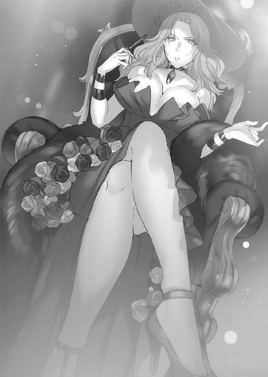
「......っ」
「あなたも同罪。感謝されても非難されるいわれはなくてよ？ それともなに？ 東に鞍替えでもしようというのかしら？ あのブスと似非吸血鬼に懐柔でもされたのカナリアぁ？」
カナリアとエリザは睨み合う。
二人の視線が交錯し、火花を散らそうとした時、闇の向こうでドアが開く音がした。
「──やっは！ やぁやぁやぁどうもどうもどうも、お久しぶりですねお二方！」
ドアから漏れる光をバックにして、人影がカツカツと靴音を立てながら二人の元へやってくる。エリザとカナリアは、舌打ちをしそうなほどに顔をしかめた。
幻想教団ですら待て余しているトリックスター。
絶望の魔法使い、死霊術師ホーンテッド。
マリが負わせた極光の傷痕はすでに癒えたのか、やたらとつやつやした顔をしていた。
ホーンテッドがカナリアの横で足を止める。
「あれ、カナリアさんっ!? いやぁ、しばらく見ない間にずいぶんと綺麗になりましたね！ 前に会った時は急速成長前でしたからこぉんなにちっちゃかったのに！ もったいな──冗談ですよそんな顔しないでください！ 僕はオールマイティを自負していますから！ 食べ頃とはまさにあなたのことですねっ！」
早口でまくし立てながら髪に触れようとするホーンテッドの手を、カナリアは背中の剣で切り落とした。ぼたりと腕が床に落ちる。ホーンテッドの右腕は、切り離された後も陸に放り出された魚のようにびたびたと跳ね回った。
「過激だ。これがツンというやつですか？ いつか僕にもデレがやってくることを期待したいものです」
ホーンテッドが不気味に身体をくねらせると、地面で蠢いていた腕が突然出現した黒い沼に飲み込まれて消えた。
消えた瞬間に、すでにホーンテッドの右腕は元あった位置に戻って接合されていた。
ニコニコしながら、今度は玉座に座るエリザへ。
「エリザさんもお久しぶりです。相も変わらずけばけばしい！ 若作りもほどほどにと言いたいですが細胞凍結の腕がすごいですね！ さすがは『全能』の古代属性保持者、あなたの時の流れへの反逆っぷりには心からの賞賛を送りたい！ 千年近く前に処女の血液で浴槽を満たしたり、吸血鬼に憧れちゃってたりしていた夢見がちで痛々しい少女の頃から何も変わっていませんネ！」
けたたましく拍手などして、ホーンテッドは満面の笑みでエリザを讃えた。
当のエリザは冷めた様子で鼻を鳴らした。
「皮肉にしても芸が無いんじゃなくて？ 私達のような高位の古代属性保持者であれば、老いなどという概念はとうの昔に捨てているでしょうに......過去のことは忘れたわ」
「いやいやぁ、本質は何も変わっていないと思いますけれどねぇ？ 外見を維持してるのは若さへの執着の表れ以外にどう説明するというのです？」
「............」
「お化粧、乱れてますよ？」
ホーンテッドのにこやかな挑発に、エリザの頰がぴくりと動いた。内心では怒りが頂点を余裕で突破しているのだろう。ポーカーフェイスはそこまで得意ではないらしい。
ホーンテッドは舞台役者のように両手を大きく広げ、悲しげにライトを見上げる。
「何故女性は老いと醜さをイコールに考えるのでしょうか、残念でなりません。老いとは背負ってきたものの象徴です。過去の密度の表れです。老いを否定せず、嚙みしめ、過去に想いを馳せつつも、未来を磨くために前を向き歩いていく......さらなる老いを楽しんで生きていく......そんな女性を、美しいと思いませんか？」
「死の否定を根底としている死霊術師にだけは言われたくないわね」
「あっ、それを言われると痛いですねっ！ こりゃ一本取られました！」
快活に笑って、ホーンテッドはお茶を濁すようにくだらない話を続けようとする。
「ちなみに知ってます？ 男って大多数がロリコ──」
「茶番はもうよろしくてよ。それよりあなた、何故ここへ戻ってきたのかしら？ 元老院から現場待機を命令されていたはずではなくて？ 言っておきますけど、純血派の立場からしてもあなたのような厄介者は近くにいてほしくないのよ。それなりの理由があって顔を出したんでしょうねぇ？」
エリザが忌々しげに頰杖をついて言うと、ホーンテッドは「もちろんですとも！」と自信をもって答えた。
「過去に例の無い緊急事態でしてね。時は一刻を争うとは、まさにこのこと」
「......緊急事態？ 言ってごらんなさいな」
「実は──僕の愛して止まない人がっ、ここにやってきていると聞いて飛んできたのです！」
躊躇いもなく、恥ずかしげもなく、ホーンテッドは頰を紅潮させながら言い放った。
エリザの頰の皮膚に、ピシリと皹が入る。ホーンテッドは構わず続けた。
「マリさん！ あぁマリさん！ あの子と離ればなれになってもうどれくらいでしょう......四か月？ 五か月ぶりでしょうか？ そんなに長い間、あの必死に涙を堪えて強がっている姿を見ていないのですね......！ きっと向こうも寂しかったのでしょう......！ だからこうして、遠路遥々聖域すら越えて僕に会いにきてくれたんですね！ これぞ愛の力です！ 虚無属性の海すら超えられる愛ッッッ！ 僕はその愛に応えなければならない......！ そのために僕は帰っ──」
「──そいつをここから追い出してちょうだい。これ以上茶番に付き合うつもりはないの」
ホーンテッドの狂ったような一人芝居を前にして、エリザが苦言を呈しつつ指をパチンと鳴らした。すると、ホーンテッドの両脇に赤いローブを着込んだ亡霊のような二人組が闇から浮かびあがり、彼の両腕を拘束しながらずるずると引きずった。
「待っててくださいねマリさん！ 僕のマリちゃん！ きっと迎えに行きますからぁぁぁぁぁ～～～～！」
気持ち悪い宣言をしながら、ホーンテッドが地下空洞からフェードアウトしていく。
エリザもさすがに疲れたようなため息を吐いた。
「カナリア、話を戻すわよ」
「......話、無い。もう戻らないと、怪しまれる」
「ふざけないでちょうだい。ホーンテッドはあなたのことを気に入っているようだから話を逸らそうとしていたみたいだけれど......うやむやにできると本気で思っていて？」
赤紫の爪を軽く歯で嚙みながら、エリザが微笑する。カナリアは据わったような目をエリザに向けるばかりだ。エリザは楽しげに、艶美な唇を撫でた。
「あなた、私達に対して忠誠を示しなさいな」
「............示しているつもり。今まで汚れ仕事、さんざんやってきた」
「それらの任務は、結局のところ全て幻想教団の総意の下に下されてきたものでしょう。私が言っているのは、ウェストサイドへの忠誠。つまり、イーストサイドの無機物女に反逆しろと言っているのよ」
エリザは洋扇で口元を隠し、にたりと目元だけに笑みを作った。
「──草薙タケルを処分して、ミスティルテインを回収なさい。そうすれば、あなたの望み通り、審問会とアルケミストへの復讐を遂行する権利と戦力をあげるわ」
「!? 手に入れてどうする。元老院が許さない......」
「い・い・か・ら、聞きなさい。ここに集まった精鋭の全てを、あなたに任せてあげると言っているのよ。戦争が本格的に激化すれば、戦場は混乱を極めるでしょう。そうなった時は、あなたは自由にこの子達を使い、自由に復讐を果たせばいい」
エリザは玉座から立ち上がり、ヒールの踵を床に打ちつけながら、腰を揺らしてカナリアのそばまでやってくる。
洋扇をたたみ、エリザはカナリアの耳元へ口を寄せた。
「......あなたのママを殺したのは、審問会とアルケミスト。奴らに灸を据えたいのでしょう？ 無機物女や似非吸血鬼のそばにいても一生無理よ」
「............」
「私は選ばせてあげると言っているの、わかる？」
エリザの声が、闇の中に木霊する。
カナリアの表情は少しも動かなかったが、彼女の拳はぎちりと軋むような音を立てた。
集会所の外で、ホーンテッドは巨大なドアに背を預けながら全てを聞いていた。
腕を回収する時に出現させた沼の一部を、あらかじめ床の上に一滴だけ残し、それを通じて会話を聞いていたのだ。
「......どうしてエリザさんは外見も立ち居振る舞いも魅力的なのに、あんなにも俗物なのだろうね」
心底残念そうに首を横に振り、ホーンテッドはその場を離れた。
足下に転がる、純血の徒精鋭二名の残骸を踏み越えながら。
屍どもを越えると、赤い絨毯のような材質でつくられた床の上に、ぽつんと黒い少女が立っているのが見えた。
黒いゴシック調の服装に身を包んだ、恐ろしく目つきの悪い少女だ。
西洋人形のような現実離れした端整な顔立ち。夜のように青黒い髪と、ブラックオパールのような黒色でありながら遊色効果を持つ瞳は、誰が見ても人外のものであると一目でわかる。ホーンテッドは少女を前にして、意外そうな顔をした。
「珍しいな。人型になったのはいつ以来だ？」
少女は、舌打ちをしながら胸の前で腕を組む。
「この場所の決まりだろ。意思を持つ魔導遺産は携帯許可が出ている物でも、攻撃形態の解除が要求される。人の姿を取るのは屈辱だけど、抗魔鞘に入るよりはマシってだけだ」
ホーンテッドが再び歩き始めると、黒い少女──Ｓクラス魔導遺産『ダーインスレイヴ』は、彼に寄り添うように後に続いた。
「お前も聞いていたのか、集会の会話」
「うん......エリザ、焦ってるね。あいつの行動は目立ちすぎるから、ウェストサイドの中でも浮いている。そろそろ理事長の座を降ろされるんじゃないかな......代理がつとまりそうな魔女なんて他のシェルターにいくらでもいるし。だから神殺しの力を手に入れて、自分が王様になりたいんだろうけど」
「彼女、魔女としてはとても優秀なんですけどねぇ。いかんせん我が強すぎるというか利己的すぎるというか。マザーと違って元老院に嫌われるタイプだ」
「......ホーンテッドに言われるとさすがに可哀想な気がするよ」
「僕は地位とか名誉に興味ないからいいんだ。もっと言えば純血主義にも反吐が出る。いろんな人間がいて、いろんな考えを持つ人達がいるから世界は面白いのに......一色しかない世界なんて何が楽しいというんだ」
やれやれと首を振って、ホーンテッドはナハトを横目で見やる。
「本当のところ、お前が集会に聞き耳を立てていたのはそんなくだらないことが聞きたかったわけじゃないだろう？」
「っ......ああそうだよ。『百鬼夜行』奪取に失敗しておまけがついてきたっていうから、まさかと思ってたんだけど......案の定かよ、クソっ。ここにあの瑠璃色がいるなんて......信じられないね......！」
ナハトは、何度も舌打ちをしながら足を踏み鳴らす。
「まったくだ。エリザさんもマザーグースも余計なことをしてくれる。何故草薙タケルとミスティルテインをここへ連れてきたのか理解しかねる」
「ホーンテッド......いますぐ奴らを殺しに行こう......！ ボクはもう我慢ならない......あの時の屈辱が疼いて疼いてしょうがないんだよ......っ！」
怒りに震える身体を抱いて、瞳に涙すら溜めて悔しげに唇を嚙む。
以前、マリの処分を遂行するために模擬戦トーナメントに襲撃をしかけた際、ホーンテッドとナハトはタケルとラピスに敗北を喫した。
自分の魔導遺産としての質を侮辱された挙げ句、マスターであるホーンテッドすらもなまくらと称されたのだ。ナハトは今でもその時のことを苦々しく思っていた。剣にとって、なまくらという言葉はどんな言葉よりも強い侮辱に当たる。
ホーンテッドはナハトの怒りを聞いてか聞かずか、前を向いたまま目を細めた。
「今ここで殺す......？ お前は何を言っているんだ、ナハト」
「......？」
「まだ全然その時じゃない。最高の舞台......最高のコンディション......最高の激情の中でしか、僕は認めない」
「......ホーンテッド......？」
「あの小僧は僕の敵でなければならない。僕だけの敵でなければならない。誰かに盗られるのも、こちらの味方になってしまうことも断じて許さない」
いつもと声の質が違うことに気づいたナハトは、横のホーンテッドの顔を見上げた。
ナハトは息を吞む。
彼女はホーンテッドと気が遠くなるほど長い時間を一緒に過ごしてきた。彼の闘争に恩恵を与え、彼のもたらす絶望に荷担してきた。魔導遺産は、主を選ぶ時に人間性を重視する物は少ない。善と悪という概念はそもそも魔導遺産には存在しないことが多い。そのようなくだらぬ判断基準には左右されずに主を選ぶ。
たとえば存在そのもの。いうなれば、魂の色。
ナハトはホーンテッドの黒くも虹色に輝くような魂を心から愛しているが故に、彼の悪行には一切興味が無かった。彼が剣を振るい、勝利することだけが至高の喜び。
だから寄り添ってきた。自分が、誰よりも彼を知る得物だと自負してきた。
だというのに、目の前のホーンテッドの表情は初めて目にするものだった。
というのもナハトは、ホーンテッドが本気で怒りを露わにした姿を見たことがなかったのだ。いつだってどこか飄々として、熱っぽい語りをすることはあっても、滲み出るほどの怒りを外へ出したことはなかった。
それが、どうして今......。
「やっと見つけた宿敵なんだ......誰にも......渡すものか......！」
歪すぎるその笑みは、ナハトですら恐怖を覚えるほど、嬉々とした怒りに充ち満ちていた。
第五章 純血の徒、襲撃
魔導学園に通いはじめてから一週間以上が経過していた。
最初は違和感しかつきまとわず、魔導学園という噓じみた場所に戸惑いっぱなしだったが、タケルも次第に慣れてきていた。
相変わらず授業はさっぱりわからないが、それでもここの生活はタケルにとって悪くないものだった。少なくとも、イーストサイドの人間は魔力を持たない無能者のタケルにも親切だ。たまに嫌味を言われることはあるが、皆正しい方向にプライドが高いというべきか、どんな人間でも対等に接してくれる。
他のどんな土地よりもいい環境であるのは明白だった。
「草薙～、お前も新装開店した魔導遺産販売店いかね？」
放課後、二人組の男子生徒のうち一人が、気さくにタケルに声をかけた。
タケルはノートの類を鞄に詰め込みながら顔を上げる。
「え......魔導遺産って売ってるのか!?」
「あ、外側じゃあり得ねぇんだっけか？ じゃ来いよ、人格の無い低級量産型しか扱ってねぇけど、変な性能持ったのいっぱいあるから面白いぞ」
「そうなのか......外じゃ持ってるだけで懲役何年とかそういうレベルだったんだが......」
タケルが驚きを口にすると、二人目の堅物そうな生徒がタケルを鼻で笑った。
「ふんっ、外側の連中には魔導の素晴らしさなど到底理解できんさ。二階堂さんは例外だがな。おい草薙、お前が来ても何も面白くないぞ。もっというと僕が面白くないから来ないでくれ」
棘のある物言いに、気さくな方が呆れ顔で両手を上げる。
「悪く思わないでやってくれ。こいつこんなんだけど、悪い奴じゃないからさ。実は外側から来た二階堂に一目惚れして速攻でフラれた上に、彼氏のお前が現れて嫉妬の波に飲まれてる最中なんだ」
「お、おおおお前！ それは言うなとあれほど──勘違いするなよ草薙ッ！ 僕はまだ二階堂さんを諦めたわけじゃないぞ！ 高貴な『極光』属性を持つ可憐な彼女は、お前のようなボンクラには相応しくないのだ！」
顔を真っ赤にしながら涙目で訴えてくる堅物な方に、タケルは苦笑する。
「いや......俺、別に彼氏ってわけじゃねぇんだけど」
「この純情バカはほっとくとして......どうするよ、来るか？ 杖以外にも、剣の業物も結構扱ってるぞ」
それを聞いて、タケルの目の色が変わった。
「──マジかッ！」
「あ、ああ。何その情熱、予想外......内側の世界だと、刀剣類の魔導遺産職人は多いからな。今でも銘入りの名作はどんどん生まれてる」
「刀とかあるか!? 日本刀！」
「？ ああ、人気高いからな。日本刀の製造過程は水にこだわるらしいんで、魔力の通りがいいらしいんだ。現代でも高く評価されてるな」
「......いいな！ すごくいい！」
タケルは「絶対行く！」と拳を握って快諾しようとした。
が、突然左肘の服を引っ張られ、横を見てみれば、
無表情ながらも黒々としたオーラを纏うラピスの姿があった。
《......浮気ですか？》
ぞくりとするほどの威圧感を込めた声が、頭に響く。
タケルは顔を引きつらせながら、誘ってきた二名に丁寧に断りを入れた。当然二人もラピスの気迫に気づいて「また今度」と言い残し去って行った。
あれだけタケルから距離を取ろうとしていたラピスは、今となってはすっかりベタベタだった。椅子をぴったり横につけ、腕にしがみついて片時も離れてくれない。
「そばにいろとは言ったが......近すぎじゃね？」
「嫌なのですか？」
「嫌じゃないけど......」
「では、いいではありませんか」
嬉しいけど、さすがにちょっと世間体に問題がある。
周りの生徒も、「あそこだけオーラピンク色じゃね？」とか、「一晩よろしくやって仲直りしたのね」とか、皮肉なのかマジなのかわからない推測を飛ばしてきている。
悪い気はしないが、居心地は悪かった。
指で頰を搔きつつ苦笑したところで、素朴な疑問に思い当たった。
「......そういや、お前って、なんで俺を選んだんだ？」
「？」
「どうして最初に、俺を契約者に選んだのかって意味だ。高位魔導遺産との契約は手順みたいのがあって......俗っぽく言うと好感度上げて墜とす必要があるとかなんとか、こっちに来てから聞いたんだが」
「そんなことですか。理由は簡単です。まず、あなたの体格、筋肉のつき方、手にできた独特な胼胝を見て、あなたが剣術に精通しておりかなりの腕前を有していることがわかりました。また、鳳颯月様から草薙家の男児であることは事前に聞かされていましたので」
「ああなるほど、それでか。最初っから判断材料は揃ってたんだな」
「もちろん、それらは理由の一つに過ぎません。いうなれば魂の波長がマッチした......人間の表現でわかりやすく言い表しますと──」
それだけじゃないと言われて、タケルはラピスに首を傾げる。
ラピスはタケルの顔を見上げながら、こう告げる。
「──一目惚れ、というやつですね」
ラピスの顔はいつも通り。声に抑揚はなくて、無表情。
けれどタケルの顔は、不覚にも一気に真っ赤に染まった。
面と向かって言われるとすごく恥ずかしい台詞だった。魔導遺産の考えを人間の表現に言い換えると危険な香りがするのは何故なのか。タケルは挙動不審に視線を彷徨わせる。
「発熱しています。体調不良でしょうか？」
「......なんでもねぇよ」
照れていることを勘付かれまいとそっぽを向くが、ラピスが突然身を乗り出しておでことおでこをくっつけてきた。ひんやりとしたおでこが気持ちよく、眼前に迫った柔らかそうな唇からは、ラベンダーのようないい香りがした。
「やはり熱がありますね。大事をとって休みましょう──添い寝します。私の身体は体温を調節できますので、冷やすことも温めることも可能です。どうぞお使いください」
「～～～～......お前っ、契約してるんだからそんなことしなくたって俺の体調くらいわかるだろ!? 健康だよ健康！」
「おや、バレてしまいましたか。残念です」
「なんかお前、杉波みたいになったな!?」
「宿主が何を言っているのかわかりません。私は私の人格が出したエラーをそのまま口にしているだけです」
どんなエラーだよ。こいつはもしかして、今までずっと自分が感じていたことや思ったことを外に出していなかっただけだったのだろうか。
タケルは前途多難な想像をしながらも、やはり悪い気はしなくて小さく笑う。魔導学園での生活は快適、ラピスとの蟠りも溶け、何も問題はなくなった。
「............」
けれど、タケルの心は変わらなかった。
確かにここはいい場所だが、ウェストサイドのような闇が蔓延っているのも事実。また、戦争が起これば審問会か幻想教団のどちらかが滅びることは必然。
そうなれば多大な犠牲が出る。安全な場所はきっとどこにもなくなるだろう。
対魔導学園にいようが、魔導学園にいようが変わらない。
でも、自分の力を使うべき場所は、ここでは無く外側なのだ。
自分の居場所はここではないのだ。
まずはやるべきことを、救うべき者を救わなければならない。
タケルはしがみついてくるラピスの手に、自分の手を重ねる。
タケルには──ミスティルテイン、ラピスがいる。
心はもう決まっていた。
「......なんでラブラブなの......？」
後ろから声がしてタケルが振り返る。
ラピスといちゃつくタケルを見て絶望したような顔をしたマリがいた。
「......あたしがあんたから下された任務を一生懸命こなしてる間に、なんでラブラブになってんの......？」
「ラブラブって......勘違いすんな、別にこいつは──」
「勘違いするっつーの！ タケルから離れなさいよぉっ！」
怒髪天を衝くように、マリがラピスに摑みかかろうとする。
だがラピスはますます身体をタケルに寄せて、小首をかしげた。
「ラブラブですが、何か？」
「「!?」」
マリは絶句に留まらずタケルの首を締め上げた。
「なぁぁぁんでぇぇぇぇぇぇよぉぉぉぉぉ!?」
「ちゃ、ちゃんと和解したのになんで責められなきゃならん......!?」
「だからってなんでおしどり夫婦みたいになってんの！ ラブラブって言ったわよラブラブって！ あんた魔導遺産をどうやってこんなメロンメロンにしたのよ！」
「ただ話をしただけだっ、俺にとってもお前にとっても必要なことだろが......！」
「だからって何なのよこの新婚さんオーラは!? 完全に女っていうか雌の顔してるわよこの子！」
「女の子が雌とか言うな！ わかるわけねぇだろ無表情じゃねぇか！」
「あたしも雌だからわかるっつーのーっ！」
首を振り回されて落ちる寸前になったタケルは、力を振り絞ってマリの肩を摑む。
「落ち着けっ。とりあえずこれで、キセキを救う方法がマザーや師匠から聞き出せる交渉材料が揃ったんだぞ......！ 別にいちゃいちゃしてたわけじゃねぇ......！」
たぶん、とタケルは心の中で呟く。一応効果があったのかマリは、
「っ......！ ひとまず今は引くけど、この件に関しては後々追及しますからね......!?」
「お前いったいどんな権限があって......まあいい。マリの方は成果あったのかよ......？」
首をさすりながら聞くと、マリはぶすっとした顔でタケルの隣に椅子を持ってきて腰を下ろした。さらに、ラピスと同じようにぴとっとタケルに寄り添う。
乙女サンドイッチ状態である。
「......ほんと、なんなのお前ら？」
「一応成果はあったわよ。転送魔法装置については、一般にも公開されてるのがいくつかあったわ」
マリはタケルに抱きつきながら、仕事の結果を報告する。
ここ二、三日で、タケルはマリに一つの任務を頼んでいた。
任務内容は、万が一の時の魔導学園からの脱出方法である、転送魔法についての情報収集だ。この場所にきた方法が転送用の呪符であることはマリから聞いていたため、内側から外側へ行くための転送方法も必ず存在するはずだった。
タケルは自分勝手に街を歩くことができないため、今回はマリに依頼したのである。
境界線で情報屋まがいのことをしていただけあって、マリの手腕はかなり信頼できた。
「でも一般用のものはシェルターからシェルターに移動するためのものだった。巨大な装置なんだけど、転送後の魔力再充塡に七時間かかるのよ。転送魔法の呪符が貴重なことがよくわかった......あれだけの魔力を内包できる吸魔素材は貴重だからね」
「座標が外側のものは発見できなかったのか？」
「一般公開されている装置は全部シェルター用。呪符もイーストウェスト両方に保管されているだろうけど、恐らく並の警備じゃないわ」
「............成果があったってことは、他に方法があったってことだよな？」
タケルが問うと、マリは神妙に頷いた。
教室にいた最後の生徒が外に行ったのを確認して、タケルに耳打ちする。
「転送魔法装置の小型化は開発途中で正式採用されてないって話だけど......そのプロトタイプがいくつか幹部どもに出回ってるって話よ」
「プライベート用ってことか......？」
「というよりは派閥用ってところかしらね。ここの連中の上層部には私兵を囲ってる奴も多くいる。外側で個人的な工作をするために、兵を送り込むためのものでしょ」
「......学園の中枢に踏み込むよりは、そっちを狙う方がガードは薄いか」
「うん。だいたい場所も摑めてるけど......目星をつけた連中がどうにもきな臭い。転送魔法装置は学園の開発部が行っているはずなんだけど......そいつらが使ってる小型のものは、アルケミスト社製らしいの」
アルケミスト。幻想教団に協力していたことは明白だったが、まさかこんな奥深くまで名が響いてくるとは思っていなかった。
「内側の世界がこれだけ発展したのがアルケミストの錬金術と科学の恩恵なのは間違いないけど、基本的に内側の世界でアルケミストって社名は出回ってない。ゲスな連中だから、教団が関わりを隠してるんだと思う。でもそんな面子に左右されない、アルケミストと関係が根深い奴が......ウェストサイドに一人いる」
「ウェストサイドか......厄介だな」
「エリザベーテっていう古代属性保持者よ。古から生きている文字通り古代の魔女らしいわ。ここのウェストサイドの理事長を務めてるって話」
「......なら、装置はウェストサイドの学園内部に？」
「ううん。イーストとウェストはお互い定期的に査察を行うから学園には無いはずよ。あるとすれば、十中八九彼女の自宅ね」
タケルは黙り込み、口元に手を当てながら思案する。
装置を使うのはあくまで、万が一のためのプランだった。オロチ達がタケルを素直に外側の世界へ送ることを良しとするとは思えないが、きちんとその旨を話す必要があった。
恩知らずは承知の上だが、外側の情勢を教えてもらえない以上、タケルは自分の居場所を守るために戻ると決めている。別にオロチ達やイーストサイドを裏切ろうなどとは微塵も考えていない。
ただ話して、わかってもらいたいのだ。
わかってもらえなければ、この策を強行するつもりでいた。
「他に脱出する方法は無いわ......もしもの時は迷わないでね」
「ああ......ところで、マリは俺に協力するって結論で、本当にいいのか？」
「いいの。あたしの目的は贖罪。自分が奪ってしまったよりも多くの人命を、たくさん救うこと。これから戦争が起こるなら、最初にたくさん人が死ぬのは外側だと思うし」
「......ここに残ったっていいんだぞ？ ここにはもう、お前の友達がたくさんいるんだ」
タケルが言うと、マリは少し寂しそうな顔でタケルの顔を見上げた。
「何度も同じこと言わせないでよぅ。心配してくれるのは嬉しいけどさ。あたしが一番いたい場所はあそこなの」
「.........悪い。そんで、ありがとう。そう言ってくれると俺も嬉しい」
「それにあたしの目標が達成されれば、アナンダやイニアとだっていつでも会えるようになるはずだもの。あたしが目指す世界は、そういう世界」
遠くを見つめるようにマリは言う。
問題は山積みだが、やらねばならない。
タケルが使命感に拳を握った時、教室のドアが思い切り開かれた。
少しだけびくつきながら、マリとタケルはドアの方を向く。
「............」
カナリアだった。真剣な瞳でタケルを睨みつけている。
どことなくいつもとは違う空気に、タケルにも緊張が走る。
「......草薙タケル」
カナリアが、タケルの名前を呼ぶ。
彼女の手には、鞘に収められた二本の剣が握られていた。
「ちょっと付き合え」
カナリアはそう言って、背中を向けた。
誰もいない建設途中の工事現場まで、カナリアはタケルを連れてきた。
後々浮遊することになるであろうこの建物はコロセウムになる予定らしい。今まで別々の演習場にて訓練を行っていた両サイドだが、今後は定期的に合同で訓練を行うことを予定しているため、この建物が造られるのだという。
「こんなところに呼び出して、どうしたんだよ」
「............」
カナリアは答えず、背を向けたまま佇んでいる。
マリとラピスは置いてきた。諸刃流の問題に巻き込みたくはなかったからだ。
カナリアが脇に携えた二本の刀を見て、ある程度何が起こるか察しがついた。
カナリアは二本の刀のうち一本を、タケルへ投げて寄越す。
タケルは右手でそれを摑むと、顔を引き締めた。
カナリアが深く息を吸い、吐き出すと共にゆっくりと振り返りながら抜刀。
刀の切っ先を、タケルへ向けた。
「──草薙諸刃流目録、金糸雀。此れより兄弟子、草薙哮への決闘を申し込む」
砂埃を孕んだ風が両者の間に吹き、緊張感がじわじわと広がる。
タケルは右手に刀を握ったまま動かない。
「......同門同士の決闘はご法度だぜ」
「破門は覚悟の上」
「......理由は？」
「一身上の都合。それから、個人的な興味」
「............」
「どっちが強いか決めよう、タケル」
頰を風が撫でる。
タケルは一度、鉄骨に囲まれた空を見上げて息を吸った。
吸った息を全て吐き出すと共に左足を後方へ下げ、腰を落とし、刀の柄を握る。
そして、刃鳴りを響かせて、ゆっくりと刀を鞘から抜き放った。
切っ先は──カナリアへ。
「草薙諸刃流皆伝、草薙哮。その決闘──受けて立つ」
両者の間合いは一〇メートル。カナリアは上段、タケルは霞の構え。
両者の在り方を象徴するかのように、二つの鬼はにらみ合う。
そして風が止んだ瞬間、二つの暴風は互いに向かって地を蹴った。
スピードは──カナリアが上。
「──シッ！」
カナリアは上段に構えたまま、力を溜め込んだ一撃をそのままストレートに振り下ろす。
読んでいたタケルは突きを中断し、進行と逆方向へ地を蹴った。
地面が爆ぜる。
ただの打刀とは思えない破壊力と衝撃。まるでダイナマイトが爆発したかのようだった。
寸前で回避に成功したタケルは、飛び散る破片の中で冷静にカナリアの動きを分析する。
両者とも掃魔刀は用いていない。カナリアが地面から刀を引き抜くと同時に着地したタケルは、すぐに地面を蹴ってカナリアへ突撃した。
その一撃は、カナリアの刃により容易く防がれる。
「......！」
「............」
どれだけ力で押そうとも、カナリアの刀はびくともしない。この力の差では、弾くことすら不可能だろう。刀を滑らせて脱出しようにも、カナリアはそれを許さない。
眼前で押し合いながら、二人は睨み合ったまま硬直していた。
「タケルは、何故戦う」
「......っ、決闘中に私語とは、余裕あるな......！」
「............何故戦う」
「守りたいもの、全てのためだ！ つまり自分のためってこった......！」
タケルの答えに、カナリアは目を伏せる。
「そうか......カナは母のためだ」
悲しみに沈んだ声で、刃を握る理由を述べる。
だが次の瞬間、カナリアはタケルの刀を容易く押し返すと、瞳に憎しみの炎を宿らせた。
「母を殺したアルケミストと審問会に......相応の報いを与えるためだ......！」
「っ......殺されたのか、自分の母親を......！」
「そうだ！ 勝手に産んで、勝手に利用して、さんざん食いつぶした挙げ句に殺したんだ！ 母は......ママはカナにあんなに優しかったのに、アルケミストは酷いことをさせ続けた！」
「......ッ！」
刃を押し戻そうと、タケルは峰に左手を打ちつけてカナリアの押しに耐える。
カナリアは狂気すら入り混じる濁った瞳をタケルに向けて、さらなる力を込めた。
「ママ、カナを守ってくれた......！ 失敗作だったカナを命がけで守ってくれた......！ いい人間じゃなかったかもしれないけど......殺されて当然の人間だったのかもしれないけど......カナにはたった一人の優しいママだったんだ！」
「......カナリア......お前ッ！」
「ずっと報われず、一人ぼっちで死んでったママのためだったらカナ何でもできる......！ そのために諸刃流教えてもらった！ カナはママのためだったら誰だって殺す！ たとえ無関係の人間でも......お前でもだ、タケル！」
タケルの防御がついに限界に達する。
（──掃魔刀！）
瞬時に加速を発動させ、押し込まれ振り下ろされるカナリアの刃の流れを読む。
流れに逆らわず、流れに乗る。
カナリアが一撃を振りぬいたことによる強烈な流れに乗って、タケルは一瞬で一〇メートル向こう側へと身体を跳躍させた。
驚いて、カナリアがタケルを見る。
タケルは吹き飛んだ身体を着地させ、土煙の中で再び剣を構えた。
けれどすぐには攻撃を開始しない。
カナリアが疑問に感じていると、タケルが口を開いた。
「......やっぱり、そうだったんだな」
「............？」
「もしやと思っていたが......ハーフウッドエルフ、アルケミスト......全部当てはまる。俺はお前を知っているぞ、カナリア」
訝しげにするカナリアに、タケルは小さく息を吐く。
そして、悲しげに彼女に問うた。
「お前──杉波斑鳩を知っているな？」
カナリアの目から光が消えた。
まるで、怒りの根源を突かれたかのように表情を失い、脱力する。
「......なん、で......タケルが、その名を......知ってる？」
「数か月前、俺達はアルケミストのエルフ復元実験を阻止するために奔走した。その過程で、俺は斑鳩からお前の話を聞いた」
「............」
「カナリアというハーフウッドエルフを、もう一人の杉波と一緒に作ったって......」
「......──」
「確か名前は......伊砂。杉波伊砂、斑鳩の──」
その直後だった。
脱力していたカナリアが、そのままぐにゃりと身体を沈めて、タケルの眼前に一瞬で突撃してきた。タケルは間一髪でカナリアの捨て身の一撃を剣で防ぐ。防ぐ必要は無かったが、あえてタケルは剣で受け止めた。
カナリアと、話をするために。
「何故お前が──あいつの名前を知ってるんだあああああああ！」
「っ、斑鳩は俺の仲間だ！ 同じ小隊の、仲間なんだ！」
「あいつはッッッ！ あいつはカナとママを捨てて一人で逃げた！ 裏切り者ッ！ お前もその仲間！」
「違うッ！ それは誤解だカナリア！ あいつはお前と伊砂を助けようと──」
「戯言抜かすなぁッ！ だったらどうしてママは一人で死んだ!? どうしてママも一緒に連れて行かなかったんだ！ ママはずっとあいつの名前呼んでた！ 苦しみの中で、あいつのことを泣きながらずっと呼んでいたんだ！ 短い間しか一緒にいられなかったけど、カナは知ってる！ どれだけママが苦しんでいたか知ってるよ！」
「そうしようとしたんだ......！ お前のことも、伊砂のことも救おうと......！」
「っ、噓だあああああああああああッ！」
激昂してさらにタケルが押し沈められる。
タケルの足は地面を削りながら後ろへ追いやられていく。
（口で言ってもダメか！──だったら！）
タケルは掃魔刀を一瞬だけ全開で発動させる。
「草薙諸刃流──怪火蛍！」
習得したばかりの技を繰り出す。
カナリアの攻撃を防ぐのを止め、流れに乗った。
流れに乗り後方へ退き、ギリギリで一撃を受け流す。そして流れの方向を変えて回転、そのまま刀に流れを込めてカナリアの頭目掛けて叩きつける。
「──くっ！」
カナリアは横薙ぎの一撃を刀で防ぐ。タケルの刃は弾かれてあらぬ方向へ飛びそうになるが、その流れにも逆らわない。刃を戻そうとはせずに、流れに乗ったまま再び身体を回転させ、逆方向から一撃を叩き込んだ。
攻撃する暇など与えない。掃魔刀を小刻みに発動させ、流れを変える起点にのみ爆発させる。休む暇など与えない。考える暇など与えない。流れに乗り、流れを加速させていく。
気づけばタケルの斬撃は、草刈機のような勢いで回転しながらカナリアを襲い続けた。
剣舞の極地とでもいうべきその技を前にして、カナリアは明らかに狼狽していた。
人間とウッドエルフの身体能力の差は計り知れない。魔女狩り化した相手だろうと、生身で渡り合えるのがカナリアだ。けれど今、明らかに押されている。草薙タケルという肉体が人間であるはずの鬼に、押されている。
「っ、諸刃流──牛鬼ッ！」
カナリアは苦肉の策として刃を返し、下方から上方へ向けて全力で斬り返した
空に昇る龍のような一撃は、タケルの身体を凄まじい勢いで上空へ吹き飛ばした。
すんでのところで剣で防いだものの、タケルの身体はそのまま上へ上へと吹き飛ぶ。鉄骨と鉄骨の間を回転しながらさらに上へ。
カナリアはタケルが落下してきたところを狙うように剣を構えなおす。
だが、タケルは今この時も、流れに乗るのを止めていなかった。
カナリアの牛鬼による一撃に乗って、上空で縦方向に回転を加速させている。
「草薙諸刃流──」
落下が始まると同時に、タケルの声が響く。
カナリアは心の中で「しまった」と自分を戒める。高所、回転、落下速度。この三つが揃った時にのみ発動される、あの技。
発動条件としては最高だ。この一撃は、もらえばカナリアでもただではすまない。
だが空中で軌道を変えるのには限界があるため、命中させるのが最も難しい技でもある。相手に気づかれた状態では、まず当たらないのがこの技だ。
カナリアはタケルの落下点を予測してその場から飛びのいた。
しかし次の瞬間──カナリアは、信じられないものを見た。
回転落下の途中、タケルはあろうことか入り組んだ鉄骨の一つを蹴ったのだ。
「て、鉄骨を蹴って軌道を変え──！」
タケルは真っ直ぐにカナリアへ向かって落下突撃してくる。
カナリアはさらに遠くへ逃げようとするが、タケルはその逃げた先を予測済みだった。
そして、
「──蟷螂坂ッ!!」
激突する、鬼殺しの一撃。
カナリアは刀で防いだものの、不恰好なままの体勢ではまるで防ぎきれていなかった。
刀が砕け、衝撃に吹き飛ばされる。
無論タケルの身体も斜めから地面に激突するのが当然だったが、全身の力を抜き掃魔刀を発動。両足を揃えてつま先から地面についた。頭部を守るようにしっかりと後頭部の後ろで手を組み、膝をくの字にまげて、地面に脛をつく。次に腿、背中と、前転の要領で身体を回転させて衝撃を肩先へ。
それでも勢いは止まらず、一度タケルの身体は跳ね上がる。
だが落下ダメージは、ほとんど身体の部分部分に分散させてから外へ逃がすことに成功していた。
二度目の弾みによる跳躍から、今度は普通に地面に着地する。
筋肉は悲鳴を上げていたが、落下によるダメージはなんとか抑え込めた。
タケルは自分の刀への負担を確認してから、カナリアの元へ歩いた。
カナリアは地面に倒れたまま、身体を痙攣させていた。斬撃をもらったわけではなく、あまりに強烈な一撃を刀で防ぎきれなかったため、反動が全身に行き渡ってしまったのだ。
それでも、憎しみを込めた瞳はタケルへ向いていた。
タケルは目を閉じて、刀を鞘へと納めた。
「終わりだ。俺はもう、お前とは戦わない」
「......くっ......ふ......ぅ」
「俺は斑鳩と伊砂の間に何が起こって、どういう結末を迎えたのかは知らない。伊砂は本当に一人で死んだのかもしれないし、斑鳩が伊砂を殺したのかもしれない......これは斑鳩しか知らない真実だ。俺が背負うべきものじゃない」
「......ぅ、ぅぅぅ......」
「だから、お前が自分で確かめに行け」
「......っ......！」
「斑鳩に会いに行け、カナリア」
タケルの言葉を聞いてか聞かずか、カナリアは腰からナイフを抜いて、震える身体で立ち上がる。タケルは退きもしなければ、攻めもしない。
ただ大地に足を踏みしめながら、カナリアの前に立っている。
カナリアは脇にナイフを構えると、タケルと対峙した。
「......カナは信じないぞ......！ あいつがママを捨てたのは......変わらない......！」
「............」
「剣、構えろ......タケル！」
「............」
「構えろォ！」
カナリアが怒鳴ろうと、タケルは剣を構えなかった。
真っ直ぐにカナリアを見つめて動かない。
カナリアの歯がカチカチと音を立てる。怒りと、恐れと、悲しみに我を忘れていた。
「わああああああああああああああああああああッ！」
カナリアは目を瞑って、タケルに刃を向けて走り出した。
ナイフはタケルの腹部へ。
しかしその刃が届く寸前に、何者かが二人の間に割り込んだ。
刃が突き刺さる鈍い音が響く。
カナリアが目を開けると......瑠璃色の少女が目の前に立ちはだかっていた。
「......ラピス......ッ！」
タケルが絶句して、ラピスの肩を抱く。
しかしラピスは、あっけらかんとした顔をタケルへ向けた。
「心配いりません。この程度の傷では人すら殺すことはできませんし、裂傷程度で私は破壊されませんから」
「......馬鹿野郎......だからってお前」
「ふざけないでください。どっちが馬鹿ですか。あなたは私の宿主です。何を無責任な行動をお取りになっているのですか？」
「............」
「そばにいるという約束は噓だったのですか？」
ラピスはタケルに背を向けたまま、切実な願いを口にする。
タケルは弁明の言葉を飲み込み、「ごめん」と謝った。
「許しません」
「......ごめんな」
「許しませんよ」
「ごめんなさい」
「許しませんから」
「ごめんって......」
「絶対に許しません」
混沌とした瞳を向けて、ラピスは絶対に譲らない。
タケルは目を線にしながらも、頰を搔いてラピスが望んでいるであろう言葉を述べる。
「俺はこれからもずっとお前のそばにいる。もう二度と約束を破るようなことはしない」
「.........いいでしょう。許してあげます」
くるりと振り返って、腹部のナイフを抜きながらラピスがこっちを向く。
笑ってもいない。喜んでもいない。ただ、満足したような空気だけが漂った。
タケルはラピスからナイフを受け取った。
ラピスの後ろで、カナリアがくずおれるのが見える。
「......っ」
「......カナリア、お前は俺達と一緒に来るべきだ。俺達は対魔導学園......外側へ戻るつもりでいる」
「............」
「一緒に来い。杉波に会いに行こう」
タケルは膝をつき、カナリアの前で手を差し伸べる。
カナリアは困惑したように、タケルの手を見つめる。しばらく迷っていたようだが、おずおずとタケルに手を伸ばした。
だが二人の手が触れ合おうとした、その時、
「──あらカナリア？ あなた、私達を裏切るつもりでいるのかしら？」
上空より声がして、タケルは慌てて上を向こうとした。
しかし唐突に何かに突き飛ばされて、体勢を崩す。
ラピスがタケルの身体を押し退けたのだ。何が起こったのか理解に努めようとした直後、落雷のような電流がラピスの身体を包んだ。
「──ラピスッッ！」
《触れては──ダメです》
手を伸ばそうとするも、ラピスはタケルの頭に直接声を送った。
電流に触れれば生身のタケルではひとたまりもないだろう。悔しいが、タケルには何もできない。
歯を食いしばりながら、タケルは遥か上空を睨んだ。
赤紫色の女が、空中に浮かぶ玉座に腰駆けながらタケル達を見下ろしていた。
「てめぇ......誰だ......！」
「あらあら、無能者の分際で私の名を求めるなんて、世間知らずな小僧だこと」
空中にて洋扇を扇ぎながら、女は名乗る。
「私の名はエリザベーテ......幻想教団の幹部にして、魔導学園ウェストサイドの理事長。人は私を『全能の魔女』と呼ぶわ......よろしくて？」
エリザが洋扇を下から上へゆっくりと扇ぐ。
すると電撃に硬直していたラピスの身体が、ふわりと浮かび上がった。
「ラピス！」
「悪いけれど、この神器は私が貰い受けるわ。お前のような下等生物が持つには重すぎる代物よ......私のような純血で唯一無二の魔女にこそ相応しい」
エリザはラピスを自分のそばまで浮遊させると、その頰を長い爪でゆっくりと撫でた。
同時に膝をついていたカナリアが立ち上がり、エリザに叫んだ。
「エリザ、後つけてきたのか！ 話違う！ 任務まだ終わってない！ 手出しするな！」
「あら？ どんがめの腐れウッドエルフのあなたがちんたらしているから、わざわざこの私が出向いてきてあげたんでしょ？ その上敵に懐柔されそうになるなんて......これだから混血のデミヒューマンなんてものは信用できないのだわ」
「......裏切ってなんかないっ、カナの敵、審問会とアルケミスト！」
カナリアが必死にエリザに弁明を計るが、エリザは洋扇を扇ぎながらため息を吐く。
「おめでたい子だわ......デミヒューマンが一度信用を失えばウェストサイドで生きていくことはできないのよ。どんなに言い訳を重ねたとしても、ね？」
「待て！ 話を──」
「残念だけど聞く耳を持たないわ。あなたはクビよ」
エリザが洋扇を畳むと、カナリアの足元に魔法陣が出現。
カナリアが飛び退くよりも先に、魔法が発動した。
「《ファラリスの雄牛》」
魔法名と共に、カナリアの周りを無数に穴の開いた血錆塗れの壁が覆っていく。
閉じ込められたカナリアの姿が見えなくなると、耳を劈くような悲鳴が響いた。赤い壁の穴から高熱の蒸気が吹き荒れている。
「結構いい声で鳴くじゃないの。熱いでしょう？ 拷問器具を参考にして作ったオリジナルの魔法なの」
「エリザ！ エリザァァァァァ！」
「安心なさい、もうあなたの転属先は決まっているから。よかったわねぇ、デミヒューマンをいたぶる素敵な趣味を持つ方がいらっしゃって......純血のお偉い方々の慰み者になるのがあなたの次のお仕事よ」
ケタケタというエリザの高笑いが周囲に響く。
タケルはカナリアを助けるために走り出したが、それを阻むようにして、地面から無数の赤いローブの人間が出現してタケルを取り囲んだ。
「......てめぇ......！」
「威勢のいい無能者だわね......神器に選ばれたからにはそれなりの能力があるってことなのでしょう？ いい余興だわ、お前の力を見せてみなさいな。純血の徒相手にどこまでやれるか見物だわ」
見下すように言ってエリザが洋扇を翻すと、ラピスとカナリアが空間の歪みに飲み込まれて消えていく。
タケルは剣を構えたまま動けず、悔しさに身を震わせた。
「さああなた達、実技の時間よ！ 学生のうちに功名を立てておいて損はないわ！ このゴキブリを駆除した者には地位と名誉をあげる！」
空中で玉座に座るエリザの声に従って、真紅のローブの集団がタケルを取り囲む。皆顔が幼い。恐らく、ウェストサイドの学生だろう。
数は見る見るうちに増えて、数十名にまで膨れ上がっていた。鉄骨の上にも数名、杖をこちらに向けている。
きっとカナリアはウェストサイドと通じていたのだろう。そして、ミスティルテインを手に入れるためにタケルを誘き出した。タケルはまんまと罠に嵌ったというわけだ。
「お前ら、カナリアの仲間なんじゃねぇのかよ......」
敵の軍勢に話しかけると、ふつふつと籠ったような笑い声が周りから湧き上がった。
「我らの同胞は純血の徒のみ」
「獣人など駆逐されるべき穢れ」
「共に嘆きの歴史を味わった者のみが、我らが仲間」
重い声で響いた言葉に、タケルは反論する。
「人間の価値に血の濃さや魔力なんざ関係ねぇ......まして、仲間をそんな線引き如きで切り捨てるのはクズのすることだ......！ お前らだって同じ人間だろぉが！」
「万死に値する。我らの人類に対する呪いは未来永劫潰えることはない」
「憎しみの対象だけ都合よくひとくくりしてんじゃねぇ......！ そんなことだからお前達は戦争しか頭にねぇんだ！」
タケルは怒号する。されど純血の徒は笑う。タケルを笑う。
「下劣な血の無能者が」「知った風な口を利くな」「我らの苦節は人類の創生より続く」「痛み」「苦しみ」「非業」「叫び」「喪失」「全ては我らの血潮が覚えている」「血は記憶する」「我らの憎しみを！」「怨嗟を！」「嘆きを知れ！」
純血の徒達の杖が魔力を帯びて発光する。
タケルは剣を構えて、瞳を赤く輝かせた。
「我らの至福は無能者の破滅のみ」「我らの憎しみは一つなり」「我らの志は一つなり」「我らは純血の徒」「我らは魔女の嘆きの結晶なり」
「「「「「「「「「「「復讐するは我にあり！」」」」」」」」」」」
「──上等だ！ かかってこい！ てめぇらの性根叩っ斬ってやるッッ！」
タケルは久方ぶりに本気で頭に血を昇らせた。
なるべく殺さない。あくまでもなるべくだ。
相手が殺す気で来る以上──殺されても文句は言わせない！
爆ぜる怒りと共に、タケルは全力で地を蹴る。
純血の徒達から放たれた魔力の弾を搔い潜り、一瞬で一人目を倒した。
だが敵の攻撃は休まることを知らない。
前列の者が放った直後、後列の者達がタケルの行く先を予測して弾を放ってくる。
まるで銃剣隊の隊列のように隙が無く、恐ろしく統制が取れている。
タケルは三人を沈めた後、積み上げられた木材に身を隠す。
一息吐いたその直後、木材を回り込んで魔弾が迫ってきた。
「──追尾弾か！」
すんでのところで魔弾を刀で切り裂くが、見る見るうちに魔弾は増え、迫ってくる。
「生身だからってなめてんじゃあねぇぞッ！」
タケルは膝を曲げ、思い切り上へ跳躍。
鉄骨の上から狙撃しようとしていた魔法使いの眼前に浮き上がり、杖を切り裂いてから脳天に峰打ちをお見舞いした。
タケルは鉄骨に着地して、上から狙っていた卑怯者どもの前に降臨する。
「こいつ......化け物か！」
「今のは草薙オロチと同じ剣術......侮るな、彼奴は出来る！」
警戒を露にする魔法使い達だったが、しかし、
「いまさら気づいても遅いんだよ！」
タケルのスピードは魔法使い達の認識の外にある。
一本道の逃げ場の無い鉄骨の上では、圧倒的にタケルの有利だった。
五人を居合いによりひとまとめに斬り下ろし、即座に視線を下へ。
「──一斉射撃開始！」
一人の号令と共に、数十という魔力の弾がタケルに襲い掛かる。
タケルは鉄骨を蹴り空中に飛び出した。
「飛んだぞ！ 落下中を狙い撃て！」
妥当な戦法を用いてくる純血の徒だったが、タケルがその程度のことを予測していないわけがなかった。空中を飛ぶように反対側の鉄骨に足を着き、蹴った。
「──なっ！」
敵が驚愕する。タケルは鉄骨を次々に蹴りながら、ピンボールのように下へ下へと降りてくる。この速度では、たとえ予測できたとしても魔弾は当たらない。
そして最下の鉄骨を蹴った瞬間、
「諸刃流──片車輪！」
蹴った勢いでそのまま地面へ着地する寸前に、全方位抜刀術を発動。
腰と身体を限界まで捻った状態から放たれた一撃は、一気に五人の敵を屠った。
着地の勢いを止めず、滑るようにして次々と敵をなぎ倒していく。
「速すぎる......！ 無能者が魔導遺産の恩恵無しでここまでのスピード──ぐぁっ！」
懐に瞬時に入り込み、そのまま顎へ峰打ちを喰らわせる。
続いてその背後の者も、そのまた背後の者も同様に斬っていく。
タケルは一気に十人を斬り抜けて、敵の隊列を崩壊させた。
気づけば残りあと十人。
ようやく流れを止めたタケルは、どっと息を吐く。オロチから教わった流れの使い方を身に着けたといっても、これだけ相手にすればさすがに身体への負担が凄まじい。
まだ動けなくはないが、早々に終わらせてラピスのいる場所へ急がなければならない。
今のタケルにはラピスの居場所を微かに感じることができる。転送された場所がどういった場所なのか予想はつかないが、早く追わなければならない。
タケルは剣を構え直し、再び敵へ斬りかかった。
一人目が防護障壁を張り、剣が一瞬防がれる。敵も馬鹿ではない。攻撃と防御を同時に行うことは難しいが、自分達が複数ならばこの程度の連携はお手の物。防いだ瞬間を狙おうという魂胆だった。
「この程度で俺を止められると思うんじゃねぇッ！」
だがタケルの刀は幸いにも抗魔素材でできている。障壁程度ならば力任せの一撃で破砕できた。砕けた魔力の欠片が飛び散る中、タケルは術者を屠る。
純血の徒達はタケルを脅威と認識して、単純な戦闘を停止。
連携を取るべく三人が同時に術式を組んだ。
「純血の魔法使いを舐めるなよ......！」
空間がざわめき、タケルの足下で魔法陣が光った。
回避が間に合わず、タケルは体重の五倍近くの重さを全身に感じて膝をついた。
「重量倍化魔法だ！ 範囲は狭いが......まず動けまい！」
敵の一人が不敵に笑いながら、勝利を確信する。
だが、
「ぐ、うぅぅううぅううぅううぉ！」
タケルはすぐさま体勢を立て直し、重さに軋む身体に鞭を打った。
筋肉が破裂する音を聞きながら、タケルは跳躍。
魔法の範囲外──敵の真上へ。
「あの重圧で跳ぶのか！」
悲鳴すら上げる暇を与えず、魔法を構築していた三人を葬り去る。
タケルは三人の亡骸の上に立ち、剣を地面に突き刺したまま深く息を吐いた。
口から漏れ出す熱い吐息と赤く輝く瞳は、まるで獣のようだった。
敵の残り六名は、タケルのあまりの猛攻に戦意を喪失しかけていた。
「......エ、エリザ様......」
六名の内一人が、助けを求めるように上空のエリザへ視線を向ける。
エリザは冷ややかな瞳を向けながら、つまらなそうにタケル達の戦闘を眺めていた。
「まるで飛蝗ね」
エリザは純血の徒を駆逐せんとするタケルをそう評した。
「情けない。敵の速度に翻弄されて基礎攻撃魔法の魔弾しか撃てないなんて......焦って術式を忘れている。魔法使いの欠点は攻撃行動の遅さにあると口がすっぱくなるほど教えたはずなのに......経験になると思って若い連中を連れてきたのは間違いだったかしら」
エリザは、魔法の師として弟子達の不甲斐なさを嘆く。
「ああ、もういいわ。出来の悪い芽は早いうちに摘み取っておきましょう」
エリザは洋扇を畳み、軽く上へ向けて掲げた。
そしてくるりと扇の先を一回転させると、体内の魔力を外へ放出。
空中にて魔法陣を展開。
異常はすぐに現れる。魔法発動に必要な魔法陣は一つだけだが、エリザの展開する魔法陣は十近く存在していた。どれも巨大かつ、全ての魔法陣の色が異なっている。
地上で戦う純血の徒達が全員、懇願するようにエリザを見上げた。
「エリザ様......！ もうしばし猶予をお与えください！」
狼狽する敵達の声に、タケルも上を見上げる。
彼女が何をしようとしているのか一目でわかった。
味方ごと魔法で一掃しようとしているのだ。
「理事長命令よ。あなた達、命を賭してその無能者を抑え込みなさいな。そうすればあなた達は名誉の戦死を遂げた純血の英雄として、墓碑銘に刻んであげる」
嘲笑うかのように地上の者達を見下して、エリザは魔法陣を集束させる。無数にあった魔法陣が一箇所に重なり合い、属性色が交じりあって赤黒い紫色へと変化した。
肌がびりびりと痛み、身体中が総毛立つ。
あれはまずい。タケルの生存本能が警鐘を打ち鳴らしていた。
いくつもの色を持つ魔力が凝固する様子を目の当たりにして、タケルはその場から退避を試みたが、逃げようとしたところへ再び重量倍化魔法の負荷が襲う。
「逃がしは......しない！」
さらに残りの敵が鎖を具現化させた魔法でタケルを縛り上げた。
「あいつはお前らごと俺を殺すつもりだぞ！ どうしてそこまでする!?」
タケルが叫ぶと、純血の徒達は身体を震わせながらも、憎しみを向けた。
「外側で生きてきた貴様ならばわからない話ではあるまい......我らの憎しみを！」
「俺達は両親を審問会に殺され......妹は実験材料にされ朽ち果てた......！」
「俺は親友を！」
「私は兄を！」
「我らは皆生まれは外側だ......境界線で隠れるような暮らしをせざるを得ず、無能者どもに侮辱され、陵辱され続けてきた！ 一人でも多くの無能者を葬り去れるならばここで死すも本望......！」
涙すら浮かべ、敵達は己の死を受け入れている。
子供がこんな覚悟を背負っているなど、狂気の沙汰だ。頭の中に、復讐に燃える京夜の姿が浮かんだ。復讐は否定しない。だが全てをひとくくりにした逆恨みには大義も何もあったものではない。何もかもが間違っている。
ましてそんな間違った復讐を扇動する指導者など......！
「エリザベーテ......！」
タケルは怒りの視線をエリザへ向ける。
エリザはクスクスと笑いながら、洋扇を振り下ろした。
彼女の動きに従って赤紫色の魔法陣の幾何学模様が蠢いた。重低音を響かせて、空に展開された魔法陣が砕け散る。
そして洋扇の先に、あらゆる属性魔力が凝固された小さな光の塊が出現した。
「私の属性、『全能』は古代属性以外の全ての属性を網羅できる。反発し合う属性同士を無数に混ぜ合わせてちょっと手を加えると......何をもたらすか知っていて？」
エリザの口元が歪む。
周囲の音が消失する。足下の砂や小石が振動し、重力に逆らって浮遊した。
「破滅よ────《属性崩壊》」
タケルはもたらされる破滅を身に受けるしかなかった。
洋扇の先にあった魔力の塊が、タケルの目の前に落ちてくる。
赤紫の悪しき魔力の凝結は、雷を纏った瞬間──
──破砕した。
タケルの視界が破滅に埋まる。何も見えず、何も感じる暇も無かった。
交じり合った汚濁のような魔力の衝撃は、あらゆるものをなぎ倒す。
爆発と呼ぶにはあまりに強烈なその破滅は、コロシアム建設現場全体を覆った。
「あっはははははは！ 綺麗でしょう!? 太古の吸血鬼が憎き太陽を破壊しようと考案した魔法よ！ 破滅のもたらす花火ってなぁんて美しいのかしらねぇ！」
高らかにエリザが狂笑を振りまく最中も、地上の破滅は続いていた。
元から純血の徒にタケルを押さえ込ませる必要などなかったのだ。それだけの広範囲をエリザの魔法は飲み込んでいる。逃げる時間など最初から用意されてなどいなかった。
爆発が収まったのは発生から一分後だった。
砂埃で視界を妨げられていてもわかる。建設現場には、隕石が衝突したかのような巨大なクレーターが出来上がっていた。
生きとし生ける者は全て死に絶え、無機物すらも砂と化している。
その光景に、エリザは満足そうに笑おうとして、
──失敗した。
「............どういうこと、かしら......？」
エリザが引きつった顔を、地上へ向ける。
形成されたクレーターの最深部に、卵形の虹色の防壁に包まれた空間が存在していた。
中心にはタケルと、気を失った純血の徒四名。
そして──防護魔法の発生源たる少女が立っていた。
少女は肩にかかったマフラーを払いのけ、帽子の鍔を軽く指で押し上げる。
「ずいぶんと派手にやらかしてくれるじゃないの......味方ごと始末しようっていうその性根、腐りきっていて逆に清々しいわ」
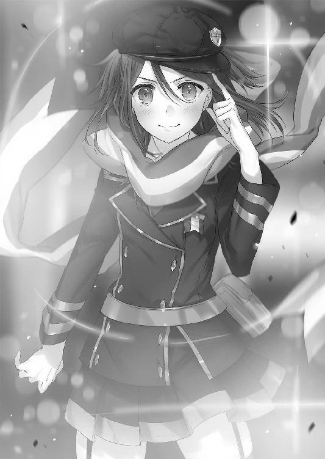
極光の魔女──二階堂マリは防護魔法を消失させて、上空のエリザを睨みつけた。
マリはエリザの頰に怒りで皹が走るのを見もせずに、すぐにタケルの身を案じる。
「タケル、大丈夫？」
「マリ......お前」
何故来たのかと言われると思ったのか、マリは帽子で顔を隠しながら下を向く。
「謝らないからね。あたしを置いて行ったタケルが悪いんだから......」
「............」
「......心配、してたんだから......」
マリのぼそぼそという声に、タケルは申し訳なく思った。
こんなことになるとは予想できるはずもなかったのだが、心配をかけたのは言い逃れできない事実。マリが来なければ自分が死んでいたのもまた事実。
「ごめん。お前が来てくれて助かったよ、マリ」
素直に謝罪と感謝を口にする。
マリははっとして顔を上げ、タケルを見ながら嬉しそうに頰を赤く染めた。
「わ、わかればいいのよ、わかれば」
照れ隠しのようにタケルに背を向けて、もう一度空を見上げる。
憎々しげに睨んでくるエリザを、マリも睨み返した。
「確か外側で極光の魔女......不殺の魔女とも呼ばれていたかしら......あなたミスティルテインにくっついてきたおまけよねぇ？」
おまけと言われて、マリはこめかみに血管を浮かべる。
「通り名をご存じでいてくれてありがとう。そっちはウェストサイドの理事長さんよね？ こんなとこで年増が何してんの？」
年増と言われて、今度はエリザのこめかみに血管が浮かんだ。
女同士特有の嫌味の言い合いだった。
「これだけの大魔法を使用すれば元老院もイーストサイドも黙ってないわよ」
「ミスティルテインが私のものになれば内側の勢力争いなんて些末な問題だわ。それにどうせたいした問題になどならないわよ......元老院は大半が我々の味方だもの」
「ミスティルテイン......？ 目的は何？」
「こう見えても私は純血派の幹部よ？ 私の目的は一つ......無能者の駆逐。清浄なる世界を手に入れること。そのためにあの剣が欲しいのよ」
「......ふぅん。シンプルね。わかりやすくて助かるわ」
マリはエリザの目的を耳にして、怒りをわき上がらせる。
「あんたみたいな魔女がいるから、外側の世界はあたし達を受け入れないのよ」
「奇遇ね。私も、不殺なんて腑抜けた名を持つ魔女がこの世界で息をしていることを許容できないわ」
マリとエリザは、互いが真逆の信念を持つ存在であることを一瞬で悟った。
タケルも二人の衝突は避けられないことを悟り、自分も剣を握ろうとした。
「タケルは、ラピスちゃんを追って」
「......そうはいかねぇだろ」
「大事なあんたの剣なんでしょ。だったら行ってあげなさい」
マリは一歩前へ出て、タケルに背を向ける。
「......オロチって奴から伝言。あんたのその首輪、初めから爆破機能なんてついてないって」
「!? 師匠がそう言ってたのか？」
「うん。それと、俺は助けに行かねーぞ、だってさ」
タケルは首輪に指で触れつつ考える。
オロチの目的が何なのかは知らない。けれど首輪に爆破機能がついていないことを、タケルはオロチの信頼の証だと思うことにした。
剣の柄を強く握る。
「話はわかった。でも、お前一人であの女と戦わせるわけにはいかない。あいつは強い......俺がいれば囮くらいにはなるだろ」
マリの横に立ち、タケルは剣を構える。
マリという味方がいることが、とてつもなく心強かった。
一人でダメでも、二人なら戦える。
「一緒にあいつを倒すぞ、マリ！」
「タケル、正直に言っていいかな」
「おう、何だ」
「ぶっちゃけ邪魔なんだけど」
タケルはショックのあまり刀を落としそうになった。
「──酷くね!?」
「ごめん。でも本当に邪魔なの。あんたがいると、本気で戦えない」
冗談ではなく、マリの顔は真剣だった。
思えば、タケルもマリの本気というものを一度しか見たことがない。極光の魔女と呼ばれる彼女がどれほどの力を持っているのかも、よく知らなかった。
だが、かつて模擬戦トーナメントの戦いで見たマリの魔法。あれは驚嘆に値する威力を誇っていた。生身のタケルがいては満足に戦えないというのも納得がいく。
「ここはあたしが全部請け負うわ。さっさと終わらせて、すぐに後を追うからさ」
マリは片目を瞑ってタケルに微笑んだ。
自分の不甲斐なさに若干落ち込みながらも、タケルはマリの提案を受け入れてラピスを追おうとした。
「あ、タケルちょい待ち」
「──やっぱ手伝うか!?」
ちょっとだけ嬉しそうにタケルが振り返る。
「いや、ちょっとここ立って、ジャンプして」
「......は？」
「ジャンプよジャンプ。ぴょんて。小銭の音確かめようってんじゃないから早くして」
意味のわからない要求だったが、タケルは戸惑いつつもマリの横に立ってジャンプした。
ぴょん。
「《大跳躍》」
唐突にマリが魔法名を口にしたかと思えば、タケルの足下に魔法陣が出現。
必然的に、タケルは魔法陣の上へ着地した。
「へ？」
タケルが下を見ると、魔法陣が極限まで発光する。
とんでもなく嫌な予感がした。
「おいまさかお前──」
「行ってらっしゃい──絶対に死ぬんじゃないわよ！」
マリの激励の直後、魔法が発動。タケルの身体が一瞬浮き上がったかと思えば、ロケットのような速度で遥か彼方へ吹き飛ばされた。
「おいおいおいおいおいおいおいおいおいおいおいおいおいおいうわああああああああああああああああああああああああああああ!!」
遥か彼方まで吹っ飛んでいくタケルを、マリは見えなくなるまで見つめていた。
タケルが遥か遠くの浮遊するデパートに着地したのを確認して、マリは前に向き直る。
空中には、玉座に座ったまま優雅に洋扇を扇ぐエリザがこちらを見下ろしていた。
「......茶番は終わったかしら？」
「話している間待っててくれるなんて、ずいぶんと紳士的じゃない？」
「あの程度の小僧にたどり着けるほど、ウェストサイドは甘くないわ。それに、私の余興をあんな虫けらに邪魔されたくはないしねぇ」
エリザが口元を歪めて、唇の隙間から牙を覗かせて笑う。
「余興ですって？ あんたみたいなオバサンがあたしの相手をするのはかな～りオーバーワークだと思うんだけど？」
マリもエリザに負けず劣らず邪悪な笑みを浮かべ、飛行魔法を展開。
両足に虹色の輪が出現し、ふわりと身体を浮き上がらせた。
同じ高さまで上がると、マリとエリザは向かい合う。
「余興よ？ ちょっとした準備運動。このシェルターには私の相手ができる魔法使いがいないから、肩慣らしに丁度いいかと思って」
「へぇ、あたしも全力で戦うの久しぶりなのよ。そこまで言うなら遠慮無くやってもいいのよね？」
「『極光』属性がどれほどのものか、『全能』の私に見せてみなさいな」
「お望み通り、極限の光ってものを見せてあげるわ」
両者が睨み合い、魔法陣を空中に描く。
エリザはあらゆる属性色を持つ『全能』。
マリは光属性の中でもっとも強力な虹色の『極光』。
お互いの数え切れないほどの魔法陣が、空を埋め尽くす。
そして──
「行くわよ小娘──！」
「──覚悟しなさいよねクソババア！」
二人は、自らの魔法の在り方を激突させた。
最終章 帰るべき場所
マリに文字通りぶっ飛ばされたタケルは、空中浮遊する建物の屋上に着地する。
屋上の床に激突しそうになったところで、見えない魔力のクッションが身体を包み込み衝撃を殺してくれた。
しかし勢いは殺し切れず、回転しながらフェンスに激突した。
「～～～～やるならやるって直前に言えよ......！」
へこんだフェンスから身体を起こして、自分のいる場所を確認する。
どうやら空中デパートの上らしく、遊具で遊んでいた子供達やアイスを食べる学生カップルが驚いた顔でタケルを見ていた。
「どうも......お、お構いなく～......」
へこへこと謝りながら、身体のダメージを確認する。少し動いただけで足と腕に激痛が走ったが、痛みを気にしなければまだ辛うじて動くことができた。
腰のポーチから応急用のサポーターを取り出して足と手に巻きつける。
応急手当を行いながら辺りを見回すと、フェンス越しに門のようなものが見えた。
あれは建物間の移動や、地上へと下りるために使われる魔力でできた連絡チューブだ。
タケルは痛む身体を引きずるようにそちらへ走り、チューブに飛び込んだ。
滑り台の要領で、ぶよぶよした魔力チューブの中を滑っていく。
半透明のチューブから街並みを見ながら、タケルは精神を研ぎ澄ます。
ラピスの居場所が感じられる方向を調べるためだ。
《ラピス！ 聞こえるか!?》
呼びかけてみても返答は無かったが、場所は大雑把ながらも感じ取ることができた。
「......南西の方角......かなり離れてるな......！」
タケルは意思を固めて、生ぬるい感触の緩衝フィルターを通り越し、次の建物へ着地する。着地と同時に、次のチューブへ走り、また飛び込む。
走るより圧倒的にこちらの方が速い。体力を消耗しない分、回復にも努められた。
次々にチューブを伝い、目標地点を目指す。
（こっからはウェストサイドだ......気を引き締めねぇと）
滑りながら刀を手に持ち、口を一文字に結ぶ。
警戒態勢を取った、その時だった。
タケルが滑っているチューブの横に、飛行する何かが迫ってきた。
「──こいつら！」
飛行触媒に乗った純血の徒だった。イーストサイドでの目立つ戦闘は避けたかったのだろう。タケルがウェストサイドにやってくるのを待ち構えていたのだ。
数は二。少ないが、空中ではタケルに為す術はない。
敵はすでにチューブへ杖を向けている。
「仕方ねぇ！」
タケルは刀を抜き、あろうことかチューブを切り裂いた。
安全装置が働いたのか、滑走促進効果が切れてタケルの滑走が止まる。
チューブが切り裂かれた部分の自己修復を始めるが、修復される前にチューブの外へと跳躍した。
足場が悪いため飛距離は出なかったが、幸いにも敵の位置はすぐ真横だった。
タケルはギリギリで敵の飛行触媒に摑まることに成功。
敵はバランスが崩れたことにより、焦ってぐるぐると回りながら落ちていく。
落ちていく間に飛行触媒に跨がると、タケルは敵の頭を摑んで身体に刃を押し当てた。
「立て直してからもう一人の飛行触媒を撃て！ さもないと......！」
「なめるなよ、同胞を撃つくらいなら──」
「そうかい！」
タケルは落下中に、敵の肩に刃をあえてゆっくりと押し沈めた。
よほど痛かったのか、敵が悲鳴を上げる。
「わ、わかった！ 言う通りにする！」
怖じ気づいた敵は、飛行触媒のジェットを噴かして体勢を立て直した。
そして撃つのを躊躇っていたもう一人に向けて魔弾を発射。
もう一人の飛行触媒が煙を噴き、明後日の方向へ降下していく。
タケルは鋭く目を細めて、敵の首もとへ刃を当てる。
「まだ終わってねぇぞ......このままエリザって奴の邸宅へ向かえ」
敵は怖じ気づきながらも、震えた声で了解した。
「──《極光の弾幕》ッ！」
空中で旋回すると同時に、マリが数百という小型の魔法陣から光弾の嵐を放つ。
ガトリングのような勢いで発射される光弾は、玉座に座るエリザへ真っ直ぐに襲いかかった。
「......《拒絶の翼》」
対するエリザも魔法を発動。
発生させた漆黒の翼で、自分を守るように包み込んだ。光弾がけたたましい音を発しながら、翼に触れると同時に弾け飛ぶ。
つまらなそうにしながら、エリザが翼を広げた。
翼が広がりきる前に、マリはエリザの眼前に飛び込む。
「──《極光の剣》ッ！」
虹色の粒子を纏った二〇メートルはある巨大な光剣が、エリザに迫る。
されどエリザは涼しい顔をしながら、新たな魔法を展開した。
「《冥王の爪》」
エリザの両手の爪に闇が宿り、暗黒を纏って巨大化する。
光と闇がぶつかり合い、接触点から爆風のごとく相反する力が吹き荒れた。
「......っ......！」
「馬鹿の一つ覚えだわ。極光魔法......確かに強力だけれど、所詮系統は光よ。闇属性は苦手よねぇ？ 力押しでどうにかなるほど魔法は甘くないのよ？」
優雅に片手で洋扇を扇ぎながら、エリザが教鞭を振るうようにマリの弱点を指摘する。
『極光』属性は汎用性が高い魔力ではあるが、得意不得意は存在する。『血』『冥』『腐』『毒』などの闇属性から生み出される魔法に対しては適正が低い上に、衝突すれば破壊力に特化した極光魔法といえども、効果が大幅に半減されてしまう。
当然、闇属性からしてみても極光属性は苦手とされるのだが......。
（魔力濃度が半端じゃない......！ 術式も光に耐性がつくように工夫されてる......！）
光剣とぶつかり合う魔法爪を見て、マリはエリザの魔女としての質を分析する。
《拒絶の翼》《冥王の爪》、両方とも複雑な術式とかなりの魔力量を必要とする高位魔法だ。本来なら闇系統の魔力を持つ魔法使いが、術式構築と魔力補塡を三人で行う必要がある。それをたった一人で、この一瞬のうちに編み出すのは並大抵の腕前ではない。
『極光』属性で最大級の破壊力を持つ《極光の門》ならば突破することは可能だろうが、今はあれほどの大魔法を構築している隙は無かった。
「古代属性保持者にありがちよねぇ。自分の属性の強みにばかり頼るから弱点を突かれる。魔法の道は才能だけじゃ二流で終わるのよ。光系統でも努力すれば闇系統の魔法が使えるのに......あなたはその努力を怠っていたようねぇ？」
「......そんなこと承知の上だわ！」
「魔女に限って言えば、若いっていうのは不利でしかないのよ？ 私は『全能』という属性を生かすために、あらゆる属性魔法を網羅できるように長年努力してきた......尖ってるだけのクソガキとは違うのよ！」
エリザが片手に持った洋扇を振り上げる。
新たな魔法陣が無数に展開され、マリに向けて魔法が発動した。
「あなた程度の魔女に防げるかしら？」
嘲りと共に魔法が放たれる。様々な色を持つ光の柱。
（っ──ただの《魔力砲》じゃない！ 闇系統だけど、全部属性が違う！）
マリは光剣を消して、後方へ飛び退きながら防護魔法を展開した。
単純な魔力による防護壁。それぞれの属性に対応できるように、様々な属性耐性術式を構築し、壁を幾重にも折り重ねる。
レーザーは壁に何度も直撃を繰り返し、一枚ずつ確実に破壊していく。
「くっ──ぅぅぅう！」
魔力のレーザーは止まらない。マリは何度も術式構築を繰り返しながら新たな防護壁を構築していくが──予想外の方向から新たな砲が放たれて、対応が遅れた。
他の闇系統の砲とは違う。眩い白光を放っている。
（──光属性!?）
マリの防護壁は全て砕かれ、左肩に砲が直撃した。
「が──はッ！」
激しく身体を横へ吹き飛ばされながら、マリは辛うじて体勢を立て直した。
だが、痛みに呻きながら顔を上げた直後、目の前に接近していたエリザに首を締め上げられてしまった。
「言ったでしょう？ 私の属性は『全能』。光も闇も炎も水も関係ない。得意不得意が無いってことよ。古代属性魔法以外のどんな魔法にも応用できるし、相反する属性魔法を扱うのに必要な複雑な術式構築も必要ないの」
「......カッ......ふ......ぅ！」
「咄嗟に身体強化魔法を使ってダメージを軽減したのは誉めてあげるけど......やはりあなたは二流どころか三流だわ。その様子だと将来性も期待できないわねぇ......せっかく貴重な『極光』属性なのに残念だわぁ......」
「......ぐ......！」
「出来の悪い芽は早めに摘み取るのが私の教育方針だから、さよなら小娘」
エリザの《冥王の爪》が鎌首をもたげる。首を絞められているマリは息ができずに苦しげに喘いでいたが、爪が振り上げられるのを見て、口元に笑みを作った。
「あんただって、属性に......頼ってるじゃない......」
「ふん、物は言い様ねぇ？」
「あたしはあんたと違って──胸張って頼るわよ!!」
マリは最後の力を振り絞るように、右手に《極光の剣》を構築して斬りかかる。
エリザは呆れたような顔で、すぐさま闇の防護壁を展開。
容易く光剣を防いだ。
「だから飽きたって言ってるじゃない、極光魔法は──」
「どうかしらね！ 属性反転！──《月食の剣》！」
マリが不敵に笑った直後、エリザは戦慄した。
マリの握る光剣の色が、虹色から漆黒へ根本から変化していく。
「月食......ですって!? 馬鹿な、『月』の古代属性魔法!? 概念しか存在しないような魔法を、どうしてあなたが!?」
狼狽するエリザの目の前で、闇属性の防護壁に皹が入る。
「魔法は日々進化する......！ あたしが対魔導学園で魔法研究をしてこなかったと思ったら大間違いよ！ 『極光』はあんたが思ってるほど単純な属性じゃないッ！」
「......噓よ......あり得ないわ......！」
「『太陽』と『月』は──あたしが古代属性の座から降ろしてやったわ！」
古代属性は、その属性でしか不可能な固有の魔法を持っているためそう呼ばれている。
だが、他属性を応用することで使用が可能となった場合、その属性は古代属性のカテゴリから外される。
かつて古代属性とされていた『塔』の属性魔法が『火』と『土』で応用が可能なように......『空』の属性魔法が『水』で応用できるように......。
マリは、『太陽』と『月』の属性魔法を『極光』属性単体で使用可能としたのだ。
「......こ、小娘があああ！」
エリザは負けじと闇の防護壁の内側に光の防護壁を展開。『月』属性と言えど闇系統。耐性術式を組めば光の防護壁には弱いはず。
そう思っての行動だったが──しかし。
「《白夜の剣》！」
マリが闇の防護壁を砕いた直後、『太陽』属性の魔法に光剣を変質させた。
エリザの顔が青くなり、防護壁構築に集中するためにマリの首から手を離す。
続け様に急いで闇の防護壁を重ねるが──
「この──!?」
追いつかない。マリの光剣は点滅するように属性を変化させていた。
凄まじい術式構築速度だった。月、太陽、極光。それぞれ別の特性を持つ魔法をローテーションして発動させる魔女など、エリザは自分以外に知らなかった。
何枚にも折り重なる防護壁が見る見る内に砕けていく。
「殺しはしない......！ でも、死ぬほど痛い目にはあってもらうわよ！」
マリの怒号が響く。
このままでは負けると判断したのか、エリザは対等な魔法勝負を放棄した。
あろうことか外道に走ったのである。
震えた手で洋扇を明後日の方へ向けて、赤紫色の魔法陣を展開。
扇の切っ先は遥か遠方、イーストサイドの浮遊する建物へ。
マリはその建物がイーストサイドの学生宿舎だということを知っていた。
「!? あんたまさか！」
戦慄するマリに、エリザがニヤリと笑う。
「これも戦争のお勉強だと思いなさぁい」
嘲るように言って、エリザは学生宿舎へ向けて《属性崩壊》の魔法を放った。
歪な光弾が、高速で宿舎へ向けて飛んで行く。
マリは戦闘を中断して、すぐさま光弾を追った。
全魔力を足の飛行輪に注ぎ、風よりも素早く飛行する。
「間に合って──!!」
目が開けられないほどの速度で飛行し、マリはどうにか光弾を追い越すことに成功。
学生宿舎を守るように両手を広げ、巨大な魔法陣を展開。
「《極光界》！」
最大出力の魔力を込めて、速度減退の魔法を発動。
魔法の範囲内に突入した《属性崩壊》の光弾は速度を落とし、ゆっくりと宿舎へ向かってくる。《属性崩壊》の威力を広範囲に防ぎきることは難しいと判断したマリは、光弾の真下へ潜り込むと、ありったけの魔力を右手にため込んだ。
軌道を変えるだけならば小細工はいらない。
「どりゃああああああああああああああッ!!」
虹色に輝く右手拳を光弾へ打ちつける。
魔力が爆発し、光弾の軌道が真上へ修正された。
《極光界》の速度減退効果が切れ、光弾が空へ上がっていく。
そして聖域の侵攻を防ぐ防護結界に触れた瞬間、凄まじい爆発を引き起こした。
被害は......無し。爆発に巻き込まれた建物も皆無だった。
マリは安堵などせずに、すぐにエリザのいた方へ向き直る。
しかしすでにそこにはエリザの姿は無かった。
「っ......逃げやがったわね......！」
苦々しく奥歯を嚙み締めて、マリはエリザを追う。
激戦により、マリの魔力消耗は激しかった。
「倒れてる暇なんて無いんだから......！ 待っててね、タケル！」
マリは気を引き締めて飛行を再開する。
連れて帰ると約束したタケルを守るために、ウェストサイドへ急ぐのだった。
鹵獲した飛行触媒と敵の魔法使いのおかげで、タケルは最短ルートでエリザの邸宅へと向かうことができていた。
ウェストサイドの奥はあまり人気が無かった。浮遊している建物は少なくなり、地上には豪奢な一軒家のようなものが目立つようになっていた。
中世風で、妙にデザインが古めかしい。対魔導学園も魔女狩り発祥の地のセンスを模倣して建物を造っていたが、ここにあるものはそれ以上にこだわりが見えた。古きを愛するということは悪いことではないが、家柄や血統に縛られた体制を敷くウェストサイドらしさがにじみ出る光景だった。
「高級住宅街ってところか......ウェストサイドの幹部達の巣窟だな？」
「......そ、そうだ」
捕虜の返答を聞いてラピスの居場所を探ると、タケルはあることに気づいて声を上げた。
「方角が違うぞ！ お前──」
捕虜に向けてもう一度刀の切っ先を突きつけたその瞬間。
飛行触媒を操縦していた捕虜の頭部を、魔弾が貫いた。
「!?──狙撃かッ！」
どこからか狙われている。
気づいたところで狙撃手が相手ではどうしようもない。タケルは防御することもできず、足と脇腹を撃ち抜かれてしまった。
触媒は魔力供給を失って、そのまま失墜する。飛行触媒には安全のための魔法がかけられているが、一人乗りの触媒で安全が確保されているのは操縦者のみだ。
タケルの身体は、触媒が地面に不時着すると、衝撃を殺せずに地面を転がった。
煉瓦でできた地面を転がり、ようやくタケルの身体が止まる。
身体はボロボロだった。右腕は折れ、足も使い物にならない。内臓もいくつか破裂しただろう。タケルは歯を食いしばって、刀を杖にして立ち上がろうとした。
ノイズまみれの聴覚が、微かだが衣擦れの音を察知する。
タケルが不時着した周辺。幹部住宅のいたるところから、純血の徒達が姿を現していた。街路樹の陰や、窓の中からも狙撃型の杖を構えている姿が見えた。
「......撃ち方用意！」
上官らしき者が声を張り上げる。
絶体絶命だ。タケルは朦朧とする意識の中で、今回ばかりは助けを求めた。
桜花、うさぎ、斑鳩、マリ。生徒会長でも、鐵隊長でもいい。
誰か、誰でもいい。
今俺は、ここで立ち止まるわけにはいかないのだ。
「......ラピス......！」
苦渋に満ちた表情で、タケルはラピスの名を呼ぶ。
身をもって自分の非力さを思い知った。自分がどれほどラピスに頼っていたか......どれほどあいつのことが必要なのか。いくら言葉にしても足りない。こうして絶望の中にいる時こそ、切実に思うのだ。
俺にはお前が必要だ、と。
「......ぐ......ぉぉ！」
タケルは立ち上がる。たった一人の相棒を迎えに行くために。
あいつに見合うだけの、相棒になるために。
助けを求めるだけじゃだめだ。頼るだけじゃ、ダメなんだ。
足搔け。足搔け足搔け足搔け。
もう何も諦めないと誓ったのだ。強くなると決めたのだ。
キセキを、仲間達を......相棒を守ると決意したのだ！
こんなところで──立ち止まってはいられない！
タケルは剣を構える。自分の誇れる、たった一つの力を構える。
「どんな障害が前に立ちはだかろうと......道を、斬り開く......ッ！」
タケルは立ち上がる。
自分の強さを誇るために。大切なもの達の前で、誇れるように。
敵が魔力を込める音がする。死への誘いが、容赦無くタケルを取り囲む。
すでに日は傾き、空は黄昏色に染まっていた。
「......っ.........？」
敵達が蔓延る家屋の屋根に影が立っていることに気づいて、タケルはそちらに目を向ける。そこから強烈な視線を感じたのだ。
そいつは、他の純血の徒達とは違った格好をしていた。
黒い男だった。不遜というか、大仰というか、両手を広げて立つその人影は、何もかもに反逆しているように見えた。
「......あいつ......は......」
ヒーローは遅れてやってくると、人は言う。
ヒーローはピンチの時に必ず現れると、人は言う。
そのような都合のいいことはまず起こりえない。
現実は違う。現実はいつだって非情だ。
遅れてやってくるのも、窮地に現れるのも、
決まって──『絶望』なのだ。
「相も変わらず暑苦しくて鬱陶しいねぇ。
君が健在でいてくれて僕は心の底から嬉しくて、楽しくて、
──反吐が出るよ、草薙タケル」
タケルは忘れない。忘れられるはずがない。
その声を、その姿を、その有様を。
暴力的な笑みを湛えて夕日を背に立つ、その絶望を！
「......ホーンテッド......！」
タケルの身体は疲労も苦痛も忘れて、怒りに奮い立った。
マリの家族を奪い、一五小隊を......京夜と吉水から何もかも奪った諸悪の根源。
死霊術師ホーンテッド。許されざる宿敵。
「いやしかし君はいつ見ても満身創痍だなっ。見ていてとても楽しいけれどいい加減飽きないのかい？ そういうのが好きなのかい？ あ、マゾなのかい？ いやだなぁマゾは嫌だ！ 気持ちが悪いし同族嫌悪してしまうからねっ！」
「てめぇ......！ 何故ここにいる......！」
「いるいるいるとも～。だってマリさんもこっちに来ているんだろう？ 数か月前に君に奪われてからというもの、枕を濡らす日々が何日続いたと思っているんだ。以来この日が来ることを織り姫と彦星のように恋い焦がれ一人で組んず解れつ待っていたんだよ」
「マリはお前にだけは絶対に渡さねぇぞ！」
「そのザマで何を言っているんですかねぇ。ミスティルテインも無い、仲間もいない、おまけに周りは敵しかいない。ただの人間の君に何ができると？」
ホーンテッドは大仰に空を仰ぎながら、タケルを挑発する。
悔しいが反論できない。諦めていないとはいえ、勝率はもはや無いに等しかった。
それでも、タケルは魔法使いの軍勢よりも圧倒的に危険な存在を前にして、剣を構える。
タケルを警戒していた純血の徒が、屋根の上のホーンテッドに声をかけた。
「ホーンテッド殿、助太刀感謝します。ですがこれはエリザ様から我らへ下された任務故、手出し無用に願います！」
ホーンテッドは演説に茶々を入れられて、不機嫌そうな目を魔法使いに向ける。
「......助太刀？ するつもりはないから安心してください」
「そうでしたか！ では、下劣な無能者を排除する瞬間を、どうぞご見物なさって──」
「──いや、排除されるのは君達ですよ？」
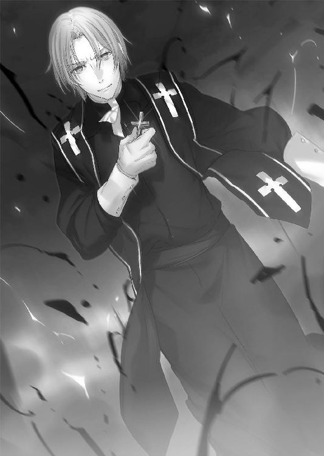
言葉を遮られた魔法使いは、呆けたようにホーンテッドに顔を向ける。
虐殺が開始されたことに純血の徒は誰も気づかなかった。魔法使いの股下から、黒い茨が突き上げる。茨は魔法使いの身体を貫通し、脳天まで突き抜けた。
そして口や目を食い破るように茨が這い出てくると、異形の花を咲かせた。
「......隊長？ どうしまし──!? うわああああああ！」
部下の一人が上官の凄惨な死に気づいて逃げ出す。
釣られるように周りの者達も全員蜘蛛の子を散らしたように逃走を開始した。
「ひひ、ひ──ヒィィィィィハハハハハハハハハハハハハハハハハハハハハハ！」
ホーンテッドは逃がさない。絶望の申し子は、分け隔て無く死を振る舞った。
一軒家の真下を黒い沼に変質させ、中から巨大な茨を出現させる。
逃げ惑う純血の徒達の地獄が始まる。悲鳴に次ぐ悲鳴が駆け巡り、住宅街が断末魔の叫びに彩られていく。一人も逃がさず、一人も生かさず、分け隔て無く捕食する。全てを飲み込んだ《絶望の庭》は、最後に大きな一輪の花を出現させた。
ホーンテッドは異形の花をバックに、屋根からゆっくりと滑空しながら地面に着地する。
そして、ゆらゆらとタケルへ向かって歩いてきた。
「......お前、自分の仲間を......！」
「仲間ぁ？ 僕と彼らが？ 失礼だな君は。僕をあんな差別主義者どもと一緒にしないでおくれ。僕は全人類種族魔力関係無く分け隔て無く愛している。人間を賛美している。人間は素敵だ！ それが僕の信条さ！」
「──狂人が......！」
タケルは目の前に迫るホーンテッドに刀の切っ先を突き入れる。切っ先は身体の中央、心臓を間違いなく貫いた。ホーンテッドは避けることも引き抜くこともせず、そうすることが当然のように、刀に心臓を貫かれたまま前進した。
「殺せない殺せない！ ぜぇんぜんダメだな！」
「っ、目的は何だ!? 何故お前が奴らと敵対する必要がある!?」
「おぉ!? 必要ならあるさ！ おおいにある！」
タケルが刀の刃を返し、胸から頭部へ向けて斬り裂こうとした瞬間、ホーンテッドの手が伸びてタケルの首を締め上げた。
「ぐ......！」
「はーい動かない動かない。僕はこう見えてお医者さんごっこも得意でねぇ、人間の身体のことは知り尽くしているんだよ。痛かったら手を上げてくださいねー!?」
首を締め上げる手が熱を持ち、タケルの身体に異変が生じる。
何かの魔法だ。タケルはもがいて逃れようとするが、ホーンテッドの手は石のように硬く、決して離れなかった。
だが、首を締め上げられているにもかかわらず、タケルは身体の痛みが消えていくのを感じた。狙撃による銃痕も跡形もなく消えていく。自分が何をされているのか気づいた時、タケルの心は不審感と怒りに充ち満ちた。
「何の真似だこれは......!?」
「回復してあげているのさ！ そのままでは動くこともままならないだろぅ？」
ホーンテッドが手を離し、タケルは重力に従って地面に足をつく。
呼吸が可能になったことで大きく息を吸い込むと、タケルは容赦無くホーンテッドの身体を斬り裂いた。
刃を突き入れた胸の部分から頭頂部にかけて一直線。
ホーンテッドの身体は胸から上が真っ二つに裂けた。
しかし彼は両手で側頭部に手を当てると、メリメリと音を立てながら裂けた身体を元の形に押し戻した。接合部は数瞬残っていたが、すぐに融合してしまった。
その様は、不死身と呼ぶに相応しい。
「っあ～、草薙タケル、伝えたいことは山ほどあるがひとまず問答は後にしよう。まずは外野を黙らせるべきだと、そうは思わないか？」
ホーンテッドを睨んでいたタケルだったが、一瞬だけ周りを見る。
純血の徒達が、ホーンテッドとタケルに接近して包囲していた。
驚くべきことに百人近く集まっている。決して逃がさないという姿勢の表れか、愚かにも群れて近づいてきていた。
「ホーンテッド、貴様！ 我らを裏切るか！」
「裏切るぅ？ 何を馬鹿な......裏切ったのはあなた方純血派の方でしょう？ 元老院の決定はミスティルテインと草薙タケルの処遇は保留とし、イーストサイドに預けるというものだったはずです。その誓約を破ったのはあなた達の方だ」
「ふざけるな！ エリザ様の忠臣たるお前が元老院の戯言に従うはずがなかろう！」
「わぉ、後者においては飴ちゃんあげたくなるくらい極めて正確な分析ですが前者においては頭が悪すぎて愚かな妄想と断ずるに余りありますね！ いいですかみなさん！ 僕が殉じるのは僕自身の信念のみ！ もとい僕自身の欲望のみです！ 傷つけられてゾクゾクしちゃっても誰かに騎乗位されるのだけはまっぴら御免なんですよ！」
ホーンテッドが自分の考えを熱く力説すると、敵達の警戒がさらに強まった。
皆、口々に彼のことを「狂人」と呟いている。
「あっは！ 理解してもらえなかったようだ～残念極まる」
全く残念そうにはしておらず、笑いながらホーンテッドは腰の剣『ダーインスレイヴ』を抜いて構えた。
必然的に、タケルとホーンテッドは背中合わせに立ってしまう。
あり得ない共闘。あり得ない味方。全てにおいてあり得ない絶望と鬼が手を組む。
──はずがない。
共闘が始まるかと思いきや、次の瞬間両者は振り返り様に剣と剣を衝突させた。
「──てめぇと背中合わせになんのだけは死んでも御免だ！」
「──いいね！ それでこそ僕の敵だ草薙タケル......！」
二人が剣戟を交わした隙を見て、魔法使い達が攻撃を開始した。
タケルとホーンテッドは互いの剣を弾き、別々の戦闘を開始する。
タケルは弾かれた勢いにのってそのまま敵の軍勢へ突っ込んだ。ホーンテッドへの警戒に焦ったのか、敵のほぼ全員が家屋から外へ出て、道の中央に密集していた。
これでは遠距離攻撃の魔法効果を最大限に発揮できるはずもない。魔弾を使えば味方に誤射する可能性があるため思うように撃てないのだ。
タケルは敵の懐に入り、着実に、堅実に敵を屠っていく。
対してホーンテッドは弾かれた勢いでバレリーナのようにくるくると回りながら敵の軍勢に突っ込んだ。魔弾に狙い撃ちにされることを一切気にせず、適当に敵を斬り殺していく。身体を貫かれても、拘束魔法をかけられても気にしない。まるで蚊にでも刺されたかのように軽くあしらっていく。
これでは子鹿の群れに二頭の虎を放ったようなものだった。
魔法使いの一人が怯えて後ずさる。
「ま......魔導剣士隊、前へ！ 目標を撃滅しろ！」
蹂躙する二匹の脅威に対して、純血の徒は切り札だと言わんばかりに命令した。
暴れ回るタケルとホーンテッドは、ガチャリという金属が擦れ合う音を耳にする。
魔法使い達がそそくさと後方へ退くと、奥から鎧を纏った騎士達が姿を現した。ドラグーンではなく、薄手のパワードスーツ。手に持っているのは、魔力で構築された光剣だった。アルケミストの最新スーツと、剣術に精通した魔法使いの組み合わせだろう。
数は十名。間抜けにも行儀良く隊列を組み、剣を胸の前に掲げている。
タケルとホーンテッドは新たな脅威を前にして──それを鼻で笑った。
「剣で俺に──！」
「──敵うわけがないでしょう！」
タケルは掃魔刀により跳躍、一気に間合いを詰めて魔導剣士なるものを一刀両断。ホーンテッドは足下に沼を出現させて騎士の前に瞬間移動、鎧をものともせず突き貫いた。
二人の蹂躙は止まらない。タケルのスピードとホーンテッドの不死身さに、敵は為す術も無かった。
爆ぜる煉瓦、轟く悲鳴、魔法と魔法の隙間を二人が剣舞で踊り狂う。
立ち塞がる者どもを断ち斬って、そして最後に──両者は再び真っ向から激突した。
剣と剣を擦り合わせて、眼前の怨敵を睨みつける。
周りは死屍累々。二人を除いて息をしている者はいなかった。
「何がしたいんだてめぇは......！ いい加減答えやがれ！」
「理由は単純......！ 君はここで死ぬべきではない、ただそれだけだ！」
「ざけんなよ......！ 俺にお前を生かしておく理由が無いように、お前も俺を殺さない理由はねぇはずだ！」
怒り狂うタケルに、ホーンテッドはくつくつと笑う。
「僕は覚えている......あの素晴らしき闘争を、素晴らしき敗北を！」
「俺も覚えてるさ！ あの時のくそったれな虐殺と！ 苦々しい勝利をな！」
タケルが譲らない姿勢を示すと、ホーンテッドの顔が眼前にぬぅっと伸びた。
「僕は君を全力で否定している。君の薄っぺらい主張薄っぺらい救い薄っぺらい面の皮。そのどれもが僕の嫌悪すべき浅はかな善良さだった。長きに亘る人生において君のような人間をごまんと見てきたがそのゴミ虫のような薄っぺらい信念を持った者どもは例外無く僕のもたらす絶望を前に絶望した。泣き叫び助けを請いもういいと諦めた！」
「......！」
「だが君は違ったッ！ 薄っぺらいまま何度でも立ち上がり決して諦めようとはせず僕を打ち破った！ そして僕以外の脅威にも立ち向かい、草薙キセキの運命を前にしても決して諦めなかった！」
ホーンテッドは恍惚とした顔でタケルへ熱い想いを告げる。
「全部見ていたよ、君の足搔く戦いを！ 草薙オロチや鐵隼人ですら妥協の道を選んだのに君は全てを救うなどという夢物語を選んだ！ 君のような強烈な存在がまだこの世界に存在していたなんてね！ 君の激情はもはや薄っぺらくはない！ 肉厚になりつつある！ その肉厚な救いを打ち破ることが僕の悦びだ！ 君は僕の敵──『希望』なんだよ！」
ホーンテッドは容赦無くタケルの刀を押し返し、狂気に溺れた瞳でタケルを直視する。
「だから僕の知らないところでくたばるのも僕の味方になってしまうこともぜっっっっったいに許さないッ！ 君との再戦は然るべき場所然るべき時に然るべき力を取り戻してからでなければ認めないッ！」
「......ぐぅ、ぅ！」
「正直に言おう、アレが無ければ君は完全じゃない！ 相手にならない雑魚なんだよそのままじゃ！ ミスティルテインを取り戻せ、僕と君が再び相まみえるのはその時だ！」
ホーンテッドが全力でタケルの刀を弾き返す。
タケルは流れに乗ることができず、吹き飛ばされて家屋の壁に激突した。
崩れ落ちながらも、タケルはホーンテッドを睨み続ける。
ホーンテッドは背を向けて、口元に目一杯の笑みを湛えながら右手を挙げた。
「マリさんに会いに行けなくてすまないと伝えておいてくれ。きっと彼女はここにやってくるだろうから」
「............」
「では──戦場でまた逢おう、草薙タケル」
足下に黒い沼が出現し、ずぶずぶとホーンテッドの身体が沈んでいく。
タケルは彼を引き留めることができなかった。
できなかったというよりは、しなかった。
今自分は奴と戦う力が無いと、わかりきったことを自覚したからだ。
煉瓦の地面に剣を突き立て、空へ向かって咆哮する。屈辱的な宣戦布告。傷を癒された挙げ句、結果的に助けられた挙げ句、今のお前は不完全だと罵られた。
たった一つのプライドを、タケルは傷つけられた。
自分でもわかっていることを、ああも大仰に指摘された。
タケルは憎む。ホーンテッドという男を憎む。ホーンテッドがタケルの存在を許さないように、タケルも奴の存在をこれ以上認めるわけにはいかなかった。
「必ず......！ いつか必ずぶった斬る......！」
タケルは宿敵との決着をつけるため、痛みと信念を鬼の瞳に刻む。
夕焼けは沈み、空は瑠璃色に染まっていた。
ラピスが待っている。急がなければ。
タケルは即座に頭を切り換えて、エリザの邸宅へと走った。
エリザ邸の地下空洞はウェストサイドの純血派達が集会を行う場所だった。
そこにラピスはいた。半透明なキューブ状の空間に閉じ込められて、浮遊している。
これは対魔導学園魔導遺産封印塔の施設に用いられるものと全く同じアルケミスト社製のものだ。神器であろうと、この結界から契約者無しに抜け出すことはできない。
ラピスは瞼を開き、封印キューブの中から玉座に座っている赤紫色の女に視線を落とす。
「ねえ......魔導遺産というものは夢を見るのかしら？」
唐突に、エリザはラピスに問うた。ラピスはゆっくりともう一度瞼を閉じる。
「他の魔導遺産のことは存じませんが、少なくとも私は見ることがあります。空想や願望ではなく、あくまで過去の記憶です」
「それは記憶のメンテナンスという明確な理由があってのことなのかしら？」
「いいえ、恐らく印象深い記憶のみが回想のような形で反芻されているのでしょう。思い出、という表現が正しいかと」
それを聞いて、エリザは噴き出して笑い始めた。
「待って待って、無機物であるあなた達が、印象深い？ 思い出ですって？ ずいぶんとおかしなことを言うのねぇ......あなた達の心、魂は作り物でしょうに」
「物質に魂が宿る原理はいまだ解明されていませんが、人間に魂が宿る原理も不明です。あなた方の脳や、私達の魔力回路はただの情報処理装置に過ぎない。意思を持つのは魂が原因であるとされています。どちらにも、魂という一点において違いはありません」
「笑わせないでちょうだいな。無機物の魂と私達の魂が同じものだなんて認めないわ」
「純血派らしい、固定観念に支配された考え方ですね。私もつい最近まで同じ考えでしたので、否定はしませんが」
エリザの頰がぴくりと細かく痙攣する。洋扇を畳んで立ち上がる。
「私はねぇ、物は物であるべきだと思っているの。だって人が作り出したんですもの、文句も言わず使われているのが礼儀ってものでしょう？ 誰も物に魂が宿ってほしいなどと望んでいないわ」
「......それは間違いです。少なくとも私は二人、望んでいた人を知っています。その二人は、私が私であることを望んでくれていました」
「あなたがあなたであること？ ますますおかしな魔導遺産......いいえ、『神器』と呼んであげるべきかしら？」
エリザはキューブまで近づいて、ラピスの前で思い切り透明な壁に手をついた。
「神々の玩具も人間の玩具も一緒よ。意思を持ってはいけないの。自分の玩具が喋りだすことほど、気持ち悪いことなんてないでしょう」
「......怖いのですか？ 私達魔導遺産があなた方に反旗を翻すのではないかと、そう思っているのでは？ まるで三流ＳＦ小説のような浅い考えです」
エリザの顔が歪む。
彼女は胸の谷間から布に包まれた銀色のナイフを取り出し、キューブに突き立てた。
「ねえ、これが何かわかる？ 霊銀、魂にダメージを与える素材でできたナイフよ......これであなたを刺し貫いたら、いったいどうなるのかしら？」
「............」
「試してみるのもいいけれど、あなたにチャンスをあげるわ」
エリザはナイフの刃でキューブの外殻をキリキリと削りながら、ラピスへ流し目を送る。
「私の物になりなさい。私と契約すれば、あなたの魂が存在することを許してあげる」
「............」
「ただし、一言も喋ることは許さないわ。私の要求には問答無用で応えること。あなたはただ私の願いを叶えるだけでいい」
エリザの要求は以前のラピスの姿勢に沿っていた。自分は願いを叶えるだけの願望器。契約者の意志や想いなど必要無い。ただ要求されたことを、そのまま全うすればいい。
物として。剣として。魔導遺産として。神器として。
それが正しい道なのだと......ついこの前まで、ラピスはそう考えていた。
「............では、あなたの願いとは何ですか？」
「決まってるじゃない、この世界を魔女だけのものにするのよ。あなたの神狩り化の恩恵さえあれば、世界を数日で滅ぼすことだって可能でしょう？ だって神すら殺すことができるんですもの......！」
目を輝かせて、ラピスの頰を撫でるように外殻を撫でる。
「神狩り化は、人間の魂では耐えることができません。あなたが私を使えば、自滅することは避けられません。あなたに私を扱うことは不可能」
「あら！ あなた、契約者の魂にこだわるくせに、私を見ても何も感じないのかしら！」
エリザは手に持った洋扇で緩やかに顔を隠す。
空気が凍てつくような音を立てたかと思えば、エリザの髪が重力に逆らってふわりと舞った。勢いよく扇を畳み、再びエリザが顔を露わにする。
エリザの容姿に変化があった。
白と黒の反転した瞳。唇から覗く、鋭い牙。前よりいっそう青白い、皹の入った不気味な肌。その姿は紛れもなく──
「私、人間じゃないの。吸血鬼......魔女狩り戦争以前に滅ぼされた種族の末裔よ」
「............」
「あなたの愛するご主人様と違って、私は身体も歴とした鬼なのよ。魔力の質も量も極上。生成量の乏しいあなたには最適な契約者だと思わなくて？」
「............」
「どう？ 私の物になりなさいな。あなたの本懐は契約者の願いを叶えることでしょう。私の願いを叶えなさい......それがあなたの存在価値なのだから」
ナイフで外殻を傷つけながら、エリザは脅迫じみた交渉を進める。
無論ラピスが動じるはずもなく、冷ややかな視線をエリザに向けるばかりだった。
「申し訳ありませんが、私にも選ぶ権利がありますので、お断り致します」
「......選ぶ、権利ですって？ 何が不満だというのかしら」
「人間の表現に置き換えて、わかりやすく提示しましょう。第一に、あなたの魂は吸血鬼のものではありません。あなたは真祖ではなく使徒、後天的に吸血鬼になった劣化コピーです。ウェストサイドの人々を騙せても、私の分析は騙せません」
「............」
「第二に、たとえあなたが優秀な魔女であろうと、たとえあなたの魂が本物の吸血鬼であろうと、私の宿主には価値で大きく劣るどころか天と地ほどの差がある」
「............」
「第三に、私は私の宿主を侮辱したあなたのことが心底嫌いです。根本的に存在が好みじゃないのです。度し難く小物な、魂まで厚化粧のババアは私の好みとは遠くかけ離れている。ドブに放置されて吐瀉物に塗れた卵のような腐臭漂うあなたの魂と寄り添うことは死んでも御免です」
「........................」
「以上の理由から、あなたと契約を結ぶのだけはお断り致します。矮小なあなたの魂レベルに合わせて下品に表現したのですが、正直伝わっているかどうか不安です。年齢相応に耳も年増であることを期待します」
言い切って、ラピスは瞼を開く。
無表情、無愛想、されどその瞳には確固たる意志が宿っていた。
「私は宿主──草薙タケル様だけのものです。あの方以外に使われるのでしたら、私は死を選びます」
真っ直ぐなラピスの言葉に、気づけばエリザは表情を消していた。
そして、
「そう......わかったわ。だったら」
唐突に霊銀のナイフを振り上げて、キューブに突き立てた。
髪を振り乱した瞬間、エリザの頰の肌にますます皹が走る。
「私もあなたなんてもうイラナイわ。もともと元老院の純血派からはあなたを破壊するように言われていたんですもの......私としてはどちらでもよかったのよ」
表情と言動は冷ややかに、されどエリザの怒りは底知れなかった。
純血派であるのに純血でないことを指摘された挙げ句、無機物に全存在を否定されたとなれば怒るのも無理はない。
契約者のいない魔導遺産は無力だ。タケルがラピスがいなければ脅威に立ち向かえないように、ラピスもまたタケルがいなければただの一本の剣でしかない。
何故神々が同族を殺すためにこのような兵器を産み出したのか、ラピス自身にもわからない。力を発揮するのに、何故使用者との契約を必要とするのかもわからない。
けれどラピスは、それを苦だとは思わなかった。
自分は......こう在れることを幸せに思った。
あの人がいるから自分が在る。あの人が望むから、自分が在る。定義は以前と変わらないものの、ラピスの胸には温かいものが宿っていた。
生まれながらの歪んだ有様を初めて、幸せだと感じたのだ。
故にラピスは諦めない。再びタケルの手を取ることを、諦めない。
視線は前方。愛する宿主のいる方へ。想いを込めて、ラピスは呼びかけ続ける。
私はここだ、と。
「どんなに待ってもあなたのご主人様は現れないわよ......？ 今頃私の部下達が彼を葬り去っているんじゃないかしら。残念だったわね無機物」
「......いいえ」
ラピスはエリザの言葉に、首を横に振る。
「私の宿主は、すでにそこにいます」
エリザがラピスの言葉を笑い飛ばす。
だが、
「俺の剣に触るんじゃねぇ......！」
しゃがれきって歪んだ声だった。
揺るぎない信念と執着が込められた、足搔く者の声だった。
エリザが勢いよく振り向くと、彼女の目にもはっきりとその姿が映し出された。
身体中から血を流す少年。虫けらと断ずるに余りある有様の少年。
されど彼の眼光には、何ものをも諦めない人を超えた強さが宿っていた。
ミスティルテインの契約者、草薙タケル。
人の身体に鬼の魂を宿した、エリザが最も嫌う混血種。
ゴミ虫のように自分の知らないところで消え失せると思っていた男と、エリザは対峙していた。目を見開いて、呆然と身体をタケルへ向ける。
「......あら......やだ......こんなところまでゴキブリが入り込んでいるわ......今すぐ殺して......消毒しないと」
タケルは口から血の塊を吐き捨てて、汚れた服の袖で口元を拭った。
「やってみろ......ゴキブリはしぶといんだぜ」
「部下達は何をやっているの......私の邸宅に、虫がいるのに............人を呼ばなくちゃ......汚らわしいわ」
「悪いが全員眠ってもらった。もう残るはあんた一人だけだぜ、おばさん」
タケルは剣を鞘に仕舞って、エリザを睨んだ。
「いやだわ......痒いわ......虫がいる......痒い」
エリザの様子が変化する。
顔を覆う皮膚の皹が広がり、長い爪で皹の間を搔き毟り始めた。ボロボロと化粧がはがれるように、エリザの顔は崩れていく。
崩れた箇所から窺えるのは、紫色に腐った肉だった。
吸血鬼の使徒は不老不死だが、親となる真祖がいなければ肉体が朽ちていくのを止められない。魔法や技術で取り繕おうとも、その障害は止めるには限界がある。現代では細胞を体内に埋め込むだけに留めることで半不死の身体と身体能力を手に入れることができるが、すでに使徒になっている者はアンデッド化しているため、手の施しようが無いのだ。
そしてもう一つ、吸血鬼にとって重要な弊害がある。
「痒い......！ 痒い痒い痒い痒いぃぃ！」
顔中を搔き毟って、エリザが黒い瞳をタケルへ向ける。
「お前のせいよ......！ お前らのような虫けらが......人間などがこの世にいるから......私は......！──いつまでもこんな吸血衝動を味わわなければならないのよ！」
「あんた吸血鬼か。じゃあ人間の血を吸わないと生きていけねぇんだろ？ 魔女の血は魔力が混じってるからダメだって聞いた......それなのに人間を滅ぼしてどうするんだ？」
「人間の血液なんて現代ではいくらでも人工的に作れるのよ！ だから生身の人間なんてこの世に必要ないの！ 人間さえいなければこんな衝動を味わわないで不死でいられる！ 人間なんていなければ──私は永遠に美しいままでいられるのよ！」
エリザは痒い痒いと何度も何度も肌を引っ搔いた。
タケルは見下すように、ため息と共に首を振る。
「くっっだらねぇな......あんたの美しさとやらは結局ハリボテじゃねぇか。いくら魔法で取り繕ったって、結局はその下のもんがあんたの顔だろう。そんなもんを守るために滅ぼされてちゃ、こっちはたまったもんじゃねぇ」
「うるさい、うるさいうるさいうるさい！」
「厚化粧で取り繕うより、まだその腐っちまった姿の方が俺には美人に見えるね」
タケルは、図らずもホーンテッドと同じことを口にした。痒い痒いと搔いていたエリザは、ついに怒りを爆発させる。
洋扇を振り払うと、魔力の粒子が高らかな音を奏でた。
「お前などに何がわかる！ 私の永遠の苦しみが！ 嘆きがわかるものか！」
「知るかよ。あんたのことなんざどぉぉでもいい。俺は魂は鬼でも、草薙タケルっていう一人の人間であることに誇りを持ってるぜ。取り繕って隠すことにしか執着できないあんたには、一切共感できねぇ！」
タケルはエリザの願望を切り捨てて、ラピスに顔を向けた。
ラピスはほんの少しだけ不安そうに、タケルを見つめている。
その不安は、彼の心にも届いていた。
だからタケルは、自信に満ちた瞳で想いを送る。
「──来い！ ラピス！」
右手を力強く差し出して、最高の相棒を呼ぶ。
ラピスは目を見開き、熱い吐息と共に応える。
「はい、宿主！」
二人の絆が再び繫がる。何よりも強固で、何よりも尊い絆。
その絆が産み出す力は誰にも阻めない。たとえそれが神器を封じるほどの檻であろうと、決して阻めはしないのだ。
ラピスを覆っていた封印キューブが、ガラスが砕け散るように一瞬にして破裂した。
「──最新の封印装置なのよ!? こうも容易く！」
エリザが驚愕を露わにする中、ラピスはタケルへ手を伸ばす。
手が重なるとそのまま引き寄せて、タケルはか細い瑠璃色の少女を胸に抱いた。
「待たせたな」
「いえ、問題ありません。あなたは絶対に来ると思っていましたから」
ラピスはいつもの無表情でタケルを見上げる。
いつも通りなラピスの態度に、タケルは嬉しそうに笑ってみせた。
続いて、エリザを睨む。
「......俺はいつも、この詠唱だけはあんまり好きじゃなかったんだが......今の状況にはぴったりだな」
「私もそう思います」
「そんじゃ征くとするか──相棒」
「了解、宿主」
ラピスの身体が瑠璃色の粒子と化し、タケルの周りを浮遊する。
タケルが右手を前へ掲げると、足下に瑠璃色の魔法陣が浮かび上がった。
「限りなき願いをもって──」
慣れ親しんだ言霊と共に、闘争の火蓋を切る。
「──魔女に与える鉄槌を！」
爆ぜる粒子は鎧となりて、タケルの身体を包み込む。
自分の身体が爪先から生まれ変わっていくような感覚は、懐かしくすらあった。
右手を横に振り払い、拳を強く握りしめる。
拳の中には、慣れ親しんだ愛剣、神殺しのミスティルテイン。
魔女狩り化、完了。
《さあ──魔女狩りを始めましょう》
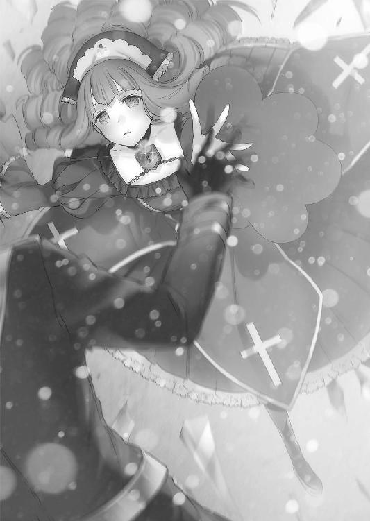
「応！」
タケルは剣を構え、エリザへ走り出した。
「人間と魔導遺産風情が......不死の王であるこの私に立ち向かうか！ いいだろう、何故私が全能と呼ばれるのかを思い知らせてあげるわ！」
「紛い物が調子くれてんじゃあねぇぞ！」
タケルが横に剣を構え、突貫する。
対するエリザは、手に持った洋扇を思い切り振り払った。
エリザの動きに魔力が呼応して、何も無い床を炎の柱が疾走。タケルに迫った。
《面倒です、回避を》
ラピスの言葉通り、タケルは柱から逃れるために高く跳躍。
しかし炎の柱は竜の尾のようにうねり、上空のタケルに振るわれた。
「ッ！」
なめるなとばかりに、タケルは空中で身体を捻り剣で炎を払う。
抜群の抗魔効果のあるミスティルテインならば、この程度の炎を切り裂くのは容易いことだった。タケルは剣を上段に構え直し、
「諸刃流──蟷螂坂！」
前方向へ回転。落下と共に強烈な一撃を放つ。
エリザはタケルの動きをつまらなそうに目視しながら笑っていた。そして長く伸びた両手の爪をクロスさせ、あろうことかタケルの全力の一撃を受け止めたのである。
「なっ......！」
「吸血鬼ィィィ......──なめんじゃないわよォォォ!?」
雄叫びと共に爪のクロスを解き放ち、タケルを吹き飛ばす。
凄まじい力だった。地面を滑りながら衝撃を殺し、タケルは剣を構え直す。
《あの爪......魔導遺産です。衝撃をある程度こちらへ返す効果があるようです。宿主の一撃は爪に触れた瞬間ほぼ無力化されていました》
「おまけに、あいつ結構動けるな......」
《腐っても吸血鬼ですから。身体能力は魔女狩り化とまではいかないものの、人間を遥かに凌駕します》
ラピスの分析を耳にして、接近戦での警戒を強める。
地下空洞の中央で、皹割れた顔のままエリザはタケルを嘲った。
「ていうかてゆーかー......あなた達なに？ あれだけ大見得切っておいて、できることはただ斬るだけなのかしら？ 私魔女よ？ わかってる？」
余裕たっぷりに笑みを浮かべ、エリザはくゆりと腰を曲げて洋扇で床を撫でた。
「人の家に勝手に踏み入ったゴキブリには、早々に退場してもらわなくっちゃね──あなた達、虎の巣に足を踏み入れたということを忘れていて？」
口から牙を覗かせて、エリザが瞳を漆黒に染める。
怖気が走ったのは、その直後だった。地下空洞が揺れたわけでも、想定外のモンスターが現れたわけでもない。ドーム状の地下空洞の壁や床が、いきなり光り始めたのだ。
ただの光ではない、魔法陣だ。
壁と床を完全に埋め尽くす──数え切れないほどの魔法陣。
「......おい......おいおいおいおい......！」
《これは......》
タケルが焦りを見せ、ラピスも想定外だと呟く。
《魔法陣それぞれの属性が違います......これが『全能』の古代属性......》
ラピスが口にするよりも先に、エリザが高笑いをあげた。
「気づいたところで何もできゃしないわよぉ!?」
女王のように足を上げたかと思えば、エリザはヒールの踵で床を叩いた。
「──《荒れ狂う鎮魂歌》！」
壁を埋め尽くす魔法陣が、最大限の発光を見せる。
「ラピス！ 《黄昏の付与》！」
咄嗟の判断で命令を下し、ミスティルテインの固有魔法を発動。
一斉射撃が開始されたのはその直後だった。
あらゆる壁と壁、床と床、天井と天井。そこに刻まれた魔法陣から、炎、水、氷、雷、地、風、闇、光、聖、邪、金、斬、突、打。
ありとあらゆる属性の魔法がタケルを襲った。
「ッ──なろぉ！」
タケルは掃魔刀を全開にして、踊るように迎撃を開始する。
魔法は基礎攻撃魔法である《魔力の弾丸》だ。単純に魔力を一点に集め、高速で撃ち出す攻撃魔法。しかし、エリザの全方位射撃から繰り出される魔弾は、濃度が桁違いだった。
その上それぞれに付与させた属性は、着弾時に追加のダメージを与えてくる。
当たり続ければ魔女狩り化とて長くはもたない。
全てを防ぐのはタケルですら不可能だった。刀身に触れた魔弾は吸収できたが、ほぼ同時に発射されているため防ぎ切れない弾は多い。
何発も、タケルの装甲を魔弾が削っていく。
「がんばるわね～、いつまでもつか見物だわ」
エリザは玉座を出現させて座ると、洋扇を扇ぎながら高みの見物をし始めた。
隙だらけだが、タケルに攻撃などしている余裕はない。
《宿主、『黄昏の付与』は一分間しか持続できません》
「わかってる......！ 切れたら、弾くだけだ！ お前はそのまま続けろ！」
短いやりとりの後も、タケルは踊り狂う。
最初は悠長に見物していたエリザだったが、
タケルが魔弾を弾き続けているのを見て、顔を顰めた。
「......あの......ゴキブリと無機物......！」
エリザは玉座から立ち上がり、爪に嚙みつく。
よく見れば、タケルの装甲は一度剝げた箇所が修復されていた。魔力を吸収し、吸収分を少しずつ装甲の修復に当てているのだ。おかげでタケルにダメージは皆無だった。
さらに、タケルの動きはエンチャント使用時よりも加速している。
吸収の効果が発揮している間は魔弾の反動が無かったが、弾くことに専念してからは剣にかかる衝撃があった。タケルはその衝撃の流れに乗り、掃魔刀による恩恵以上の加速を成し遂げていた。目で追えないどころか、もはやタケルの動きはまるで分身しているかのように残像を生み出している。
いくばくかの時間が過ぎ、ついに一斉射撃が止む。
剣舞の余波が風となって、不服そうなエリザの顔を撫でる。
無傷のタケルが、刀身を輝かせたまま立っていた。
「............ラピス」
《了解。エンチャント反転、フレキシブルマテリアル解放》
ラピスの命令により、刀身はなおいっそう輝きを放つ。
暴力的なまでの瑠璃色の粒子。
吸収され、『黄昏』属性へと変容を遂げた魔力は、竜巻のように吹き荒れた。
「いっけえええええええええええ！」
タケルは一気に距離を詰め、刀身を巨大なグレートソードへ変化させ、玉座のエリザの脳天へと振り下ろす。
エリザは動かない。つまらなそうにタケルの動きを目で追っている。
そして魔力を纏った刃が彼女に届きそうになった瞬間、
「《合わせ鏡の終着点》」
玉座に頰杖をつきながら、エリザが魔法名を口にした。
空中に発生した巨大な魔法陣。タケルとエリザの中間に現れたその魔法陣は、まるで鏡のような輝きを放った。
（防護魔法か──このまま斬り抜ける！）
タケルは構わず剣を振り下ろした。魔力が吹き荒れ、発生した鏡に衝突する。
「──!?」
だが魔力の波に吞まれたのは──タケルの方だった。
鏡に直撃した『黄昏』の魔力がタケルの身体を襲ったのだ。
「が、はッ──！」
勢いを失った斬撃は鏡に弾かれ、タケルの身体は瑠璃色の炎に焼かれながら床に崩れ落ちた。ガシャンという金属音を響かせて、タケルが地面に転がる。
《そんな......私の魔力が、弾き返された......？》
ラピスの狼狽する声が頭に響く。
タケルは剣こそ離さなかったが、呼吸が再開するまで動けなかった。
「まったく、拍子抜けだわ......『黄昏』属性なんてたいそうな名前だからどれほどのものかと思っていたけれど、まさかただ魔法を吸収するだけとはね」
エリザが玉座から立ち上がり、タケルの元へやってくる。
そして、彼の頭をヒールの踵で踏みつけた。
「......くっ......」
「魔法を吸収して攻撃性の魔力を放出するだけだなんて......大雑把すぎて技術もへったくれもありはしないわね。私達が扱う魔法もねぇ、科学技術と同じで日々進化しているのよ。今の魔法は『全能』属性だけが使用可能な反射魔法。術式が複雑な魔法が相手ならまだしも、魔力の波なんて流れの向きを変えてやれば容易く跳ね返せるわ」
エリザは踵を押し沈めて、タケルの頰を抉る。
「吸収量はたいしたものだと誉めてあげなくはないけれど......残念ね、私は並の魔女じゃないの。千年以上生きながらえてきた古代属性保持者にして、ヨーロッパウェストサイドの理事長。魔力の生成量と魔法の知識量は私の右に出る者はいないわ......あらゆる面において全能だから『全能の魔女』と呼ばれているのよ？」
エリザは自分の爪を妖艶に舐め上げる。
タケルもラピスも、敵の実力を侮っていたわけではない。全力で挑んだつもりだった。
だが認識の甘さは否めない。敵は吸血鬼戦争と魔女狩り戦争を生き残った猛者なのだ。
吸血鬼の使徒といえど、元から彼女には絶大な魔法の才があったのだろう。観察力、分析力、術式構築力、魔力量。何もかもが天才の域に達していた。
「それだけの力があって......！ どうしてあんたは......！」
「力は自分のために使ってこそよ。正義のために使えって？ 反吐の出る理屈だわ」
「違う......！ 自分のために使うのはいい！ てめぇの都合で世界を巻き込むんじゃねぇって言ってるんだ！」
タケルが剣を握り返したのに気づき、エリザは霊銀のナイフを抜き出してタケルの肩へ突き立てた。
「ぐ、ああ、ああああああ......ッ！」
《──ぁ......あぁ！》
途方もない痛みがタケルとラピスを襲った。それは肉体の痛みではなく、魂の痛みだった。存在そのものが傷つけられるような形容し難い痛みに喘ぐ。
「ふぅん、結構効果はあるみたいだけど......アンデッドではないから魂を殺すのは難しいわね。でもまあ、少しは楽しめそう」
エリザは何度も何度もタケルの身体を突き刺した。
急所はあえて外し、魂を削り取るように引き裂いていく。
悲鳴を抑えられず、タケルは大空洞で大声で喚いた。
さんざん刺し貫いた後、エリザは飽きたのか霊銀ナイフを放り投げた。
金属音を響かせて、ナイフが入口の方向へ床を滑っていく。
《やど......ぬし......》
ラピスの弱々しい声が頭に響くが、タケルは答えることすらできなかった。
「そろそろ終わりにしましょうか......汚らわしい血だけれど、私もいい加減、我慢できなくなっちゃった......っ。特別にあなたの血を私のディナーにしてあげる」
エリザは床に膝をつくと、牙を剝いてタケルの首もとへ口を寄せた。
牙の先が皮膚へあてがわれる。そのまま為す術もなく血を吸われてしまうと思われたが、
次の瞬間──エリザは、空気を切り裂く音を聞いた。
鋭い何かが風を斬る音。エリザは口を離して身体を捻った。回避が間に合わず、エリザの左腕に鋭い刃物が突き刺さる。それはさきほど投げ捨てた、霊銀ナイフだった。
「ぐ──ぎぁやあああああぁあぁぁああああああああぁああ！」
霊銀は吸血鬼にとって天敵中の天敵だ。ただの銀であれば火傷を負う程度で済むが、霊銀となれば触れた箇所は一瞬で灰と化す。
エリザの左腕が丸々一本、砂のように崩れてさらさらと飛ばされていく。支えを失った霊銀のナイフがタケルの目の前に甲高い音を鳴らして落下した。
悲鳴を上げて転がり回るエリザ。
彼女に霊銀ナイフを投擲したのは......大空洞の入口に立つ、カナリアだった。
「カナリア......？」
タケルが力を振り絞って上半身を起こす。
カナリアは身体から湯気を出し、全身が茹だったように真っ赤だった。エリザの拷問魔法から自力で脱出してここまでやってきたのだろう。
彼女は悲しそうな目をタケルに向けていた。
「タケ......ル......ごめ.........ん.........」
限界を迎えたのか、そのまま前のめりに倒れる。彼女の謝罪を耳にして、タケルは苦悶の表情を浮かべ、再び瞳を赤く輝かせた。
「......ラピス、まだ、いけるな」
《......はい......問題ありません》
声にノイズは走っていたが、ラピスの声はしっかりと聞こえた。
タケルも身体は穴だらけだが、幸い意識ははっきりしている。
「あの女を倒すには、どうすればいいと思う？」
《............現状、必勝の手段はありません。『黄昏の付与』の再使用まで、あと二分ほど必要です。接近戦に持ち込んだとしても、現在の魔力残量と宿主の稼働率では、耐えられるかどうかは五分といったところでしょうか》
ラピスの現状分析を耳にしていると、喚いていたエリザが片腕で立ち上がるのが見えた。
エリザはふらつきながら皹だらけの顔を手の平で覆い、タケルとカナリアを睨んだ。
「もぉおおぉぉおお許さない！ 今すぐに消してやる！ こんな侮辱は初めてよぉ！ 全力で消し飛ばしてあげるから......！」
エリザが牙で自らの腕に嚙みつき血を啜ると、巨大な魔法陣が出現。
「《極彩の霧》！」
名と共に発動された魔法は、文字通り色とりどりの霧だった。魔力の粒子一粒一粒が違う色を持ち、霧となって大空洞に充満していく。
タケルは嫌な予感がして息を止めた。
予感は的中。霧の粒子に触れた箇所が、強烈な勢いで腐食し始めていた。
「刀身に触れた魔法を吸収するのはもうわかっている！ だから触れられないようにさせてもらったわ！ 粒子一粒一粒が別の術式を持った魔法なのよ！ 一つを吸収したところで、全ての粒子が消えるわけじゃない！ あなた達にはどうすることもできないわ！」
余裕の無い笑い声を上げて、エリザは粒子の霧の中でくるくると踊った。
息をしなければあと数秒はもつだろうが、危惧すべきはカナリアだ。
魔法が発動した直後から、気を失ったまま激しく咳き込み吐血していた。
霧の効果は想像以上に強い。このままではカナリアの命が危険だった。
《ラピス、まだ方法が残っているはずだ》
タケルは会話を思考に切り替えて、ラピスに尋ねた。
《......推奨はしかねます。宿主は、私との融合を望んでいません》
《ああ、繫がってるくらいが丁度いいと思ってる......でも、できるはずだ。融合しなくても俺達にはやれる......そうだろう？》
《本当に根拠がないことをよく口にする人ですね。根性論も大概にしてください》
《自覚はある》
《......理論上は可能です。私達の融合は中断していますが、極初期段階の融合はすでに完了していますので......不完全な神狩り化であれば》
《できるんだな》
《一〇秒です。それ以上続ければ、再び魂の融合、私の侵食が再開してしまう。一〇秒が過ぎる前に、任意で解除してください》
《解除方法は？》
《トリガーから指を離すだけです》
《一〇秒だな。十分だ》
タケルは心を決め、立ち上がった。
そして胸の前で騎士のように剣を掲げ、柄のトリガーを引く。
【──薪を山と積み上げよ、ラインのほとりに堆く。眩く高く炎よ燃えよ 神の気高き身体を燃やし尽くすのだ──】
詠唱に応じてタケルの身体が熱を持ち、途方もない恐怖と安堵が同時に魂を襲った。
黄金と夜の色を併せ持つ黄昏色の魔法陣が出現。生命に畏怖を与える輝きを放った。
「こ、この期に及んで......何よ......何なのよ......」
エリザがタケルの異変に気づき、引きつった笑みを浮かべたまま後ずさる。
タケルは魔力の余波に髪を逆立てながら、赤い瞳でエリザを直視した。
「これがあんたの求めていた──神殺しの力だ」
直後、タケルの身体の装甲が命を吹き込まれたかのように蠢き、首から頰、頭の全てを侵食するように覆っていく。
そして頭部を兜が全て覆った時、琥珀色の無機質な瞳が眩く光った。
《──『神殺しの付与』、発動》
掲げた刀身が輝き、魔法陣が砕けて周辺に炎をまき散らす。
一瞬にして炎は広がり、大空洞全体を覆った。
「っ......？ どうなってるの......？」
エリザは自分を包み込む歪な炎にカチカチと歯を鳴らす。
タケルが、掲げた剣を下ろして振り払った瞬間、異変は生じた。
空中を漂っていた《極彩の霧》が、蒸発するような音を立てて消えて行く。一粒一粒が固有の魔法であったはずなのに、炎に触れた途端、瞬く間に消滅してしまった。
それどころか、エリザは自分の身体に違和感を覚えた。顔面を覆っていた細胞凍結魔法が、完全に剝がれ落ちていた。全身が醜く変容して、本来のあるべき姿に戻って行く。
「あぁあぁ、あぁあああああああ！ なんで、どうしてよぉ！」
泣き叫ぶように悲鳴を上げる。
神狩り化......その性能の一端。それは魔法に限らず、神の恩恵であるとされるあらゆる魔導を喰らうというものだった。魔法も、魔力も、錬金術も、魔導遺産も、神そのものも。体内にあろうが体外にあろうが関係無い。
この剣と身体を纏う炎に触れ続ければ、悉く捕食される。
それが魔導を滅ぼす力──《神殺しの付与》だった。
タケルは炎を支配して、エリザに一歩一歩近づいていく。
《あんたは今から一〇秒間、魔法が使えない》
「......っ......っっ！」
《一〇秒だ。一〇秒耐えれば、あんたの勝ち》
タケルが剣を構える。エリザは挙動不審に辺りを見回していたが、自分の運命を悟ると、右手の爪を鋭く伸ばした。
「わたしはっ、こんな虫けらに──」
《あと八秒......行くぜ》
「──負けたりしなあああああああああああああい！」
エリザの絶叫を合図に、二人は激突する。
爪と刃が擦れ合い、衝撃波が大空洞を激震させる。
《草薙諸刃流──怪火蛍！》
「爪術──血界の舞ッ！」
戦いは衝撃から連撃へ。
二つの刃は同じスピード、同じパワーで止まることなく交わされた。
エリザの爪の魔導遺産の性能は、すでに《神殺しの付与》に喰われて失われていた。
されどこの女の強さは、魔法や魔導遺産だけではない。歪んでいようと、彼女の刃には途方もない執念と努力が籠もっていた。
これほどの力を取得するのに、どれほどの苦しみと悲しみがあったのかは知る由も無い。
やるせなく思う。これだけの力と純粋さを持っていながら歪んでしまった彼女を、哀れに思う。早々に終わらせてやることが救いになるのだろう。
でも、だからじゃない。自分の戦う理由も殺す理由も他にある。決して彼女のために、彼女を殺すのではない。
仲間のため、妹のため、守りたいもの全てのため。
そして何より、自分のために。
妥協も言い訳もしない。主張など、振りかざすのはもうやめだ。
タケルは己のためにこの女を──終わらせるのだ。
「５、４、３......私の──勝ちィィィィィィイ！」
互いに互いの流れに乗り、呼吸を合わせるように剣戟を交わす。
されど、エリザが勝利を確信した次の瞬間、予想外の刃が彼女の胸を貫いた。
「──ぁ......ぅ？」
エリザは自分の左胸を見る。
そこには、タケルの左手に握られた霊銀のナイフが刺さっていた。
神狩り化を為す前に、ナイフを回収していたのだ。師匠からの忠告は覚えていた。流れに乗るのはいいが、不意打ちに気をつけろ。その教訓を、タケルは逆に利用した。
連撃のテンポをずらす不可避の一撃。決め手は小さなナイフだった。
「............」
ナイフを引き抜くと、エリザがよろよろとタケルの身体に寄りかかる。
タケルはトリガーから指を離して神狩り化を解除し、静かに目を細めた。
エリザの身体は胸から灰と化していく。エリザは朽ち果てゆく中で、タケルの肩に顎を載せたまま、彼の頰を右手で一度だけ撫でた。
顔は、安らいだように笑っていた。
「残念ね......私を殺した、ところで......何も、変わらない、わ......ウェストサイドは......強大よ」
「そうだとしても......俺はあんたを生かしておけない」
「なぁに、人間のくせに......意外といい男じゃない......その覚悟......気に入ったわ」
「............」
「ご褒美に......一つだけ......教えて、あげる」
エリザの顔が、ボロボロと崩れていく。
「......全ての、負の連鎖の......元凶、は......全ての、発端、は......」
頭が崩れ、頰が崩れ、そして唇が風に流される寸前に、エリザは彼の者の名を口にした。
「おお......とり......そう.........げ............つ」
灰は流され、煌めきながら消えて行く。
タケルは細めた瞳にある決意を宿してから、静かに目を閉じるのだった。
身体が上下に揺れ動く感覚に、タケルは目を覚ました。
誰かに負ぶわれている。背中の温かな感触に、顔を上げる。
「ひぃ......ひぃ......ひぃ......！」
「......マ、マリ？」
マリだった。タケルを一生懸命背負いながら、足を引きずって少しずつ前へ進んでいた。
タケルが目を覚ましたことに気づくと、そのまま膝をついてぺたんと床に座ってしまう。
「起きたーっ、よかったー！」
「悪い......俺、気絶してたのか」
「タケル筋肉質だからすっげー重かったよ～。撫でて～」
へとへとになったマリの頭を、苦笑しながら要求通りに撫でてやる。マリはえへへ～と気持ちよさそうに目を細めた。
自分達の後ろに、もう一人いることにタケルは気づいた。
カナリアがばつの悪そうな顔で二人の後ろに立っていた。
「............」
マリが手当をしたのだろう。火傷はほとんど残っていない。
薄く笑って、カナリアに声をかける。
「......無事か？」
「..................うん............あの、タケル......」
「助けてくれて、ありがとな」
「......え？」
「お前がいなかったら、俺はあのまま殺されてた」
タケルは、「ありがとう」ともう一度カナリアに伝えた。
カナリアは瞳を潤ませて下を向き、首を横に振る。
「カナは......裏切り者だ......」
「お前は俺を助けてくれた。それだけで十分だ」
「......でも......」
「お前は裏切り者なんかじゃねぇよ。それに、あの時お前が俺に手を伸ばそうとしてたのは、もうわかってるからよ」
タケルはそう言って、カナリアの頭も撫でた。カナリアは鼻を啜ってから、袖で涙を拭う。
「カナ......審問会とアルケミスト許せない。外側なんか嫌いだ。みんなママとカナの敵......それ、変わらない」
「............」
「でも......外側に行く。会わなきゃいけないやつ、いる」
カナリアの決意に、タケルは強く頷いてみせた。
向き合って二人の世界に入っていると、少し離れたところで膝を抱えていたマリが、ケッとふてくされたように口元を歪める。
「ナデナデの大安売りね......いけすかないわ」
「......お、お前なぁ」
「ふんっ。そんなことよりタケル、重要な報告」
いじけた態度に呆れようとしたところで、マリがすっくと立ち上がった。
尻についた埃を手で払ってから、タケルに向けて人差し指を立てる。
「──見つけたわよ、小型の転送装置」
帽子の鍔を指で押し上げて、マリは自信たっぷりにウィンクをした。
大空洞からそう遠くない場所に、その扉はあった。
扉といっても、ドアノブもなければつなぎ目も無い。端から見ればただの壁だった。
「任せて」
マリが壁を撫でるように手を滑らせると、重低音を響かせて壁がパズルを分解するようにバラバラになる。奥には、薄暗い部屋があった。
「......これで帰れるんだな。あいつらのとこに」
タケルは心底嬉しそうに、顔を緩ませる。瞳には涙も滲んでいた。
魔導学園は確かにいい場所だったが、マリ同様に、やはりタケルの居場所はあの小隊室なのだ。一刻も早く仲間達に会いたい。そして、キセキを救いたい。
ひとまずタケルは転送装置を確かめるために部屋へ足を踏み入れる。
マリとカナリアだけでも先に転送させるつもりでいた。タケルにはまだやらなければいけないことが残っているため、今は一緒に帰ることはできない。マリは一緒に残ると言い出すかもしれないが、無理矢理にでも先に行ってもらうつもりだった。
タケルは、マザーとオロチにキセキを救う方法を聞かなければならないのだ。
拒否されて拘束されるかもしれないため、マリを巻き込むわけにはいかなかった。
けれど、そんな心配は杞憂に終わる。
部屋に入り、薄闇に目を慣らすと──マザーとオロチが、すでに待ち構えていた。
「......よう、来ると思ってたぜ」
オロチはまるで予期していたかのような物言いだった。マリが警戒しようとしたが、タケルは手で遮った。マザーは黙って目を瞑り、佇んでいる。カナリアは下を向いたままだ。
この場で会話を許されているのは、タケルとオロチだけだった。
「......師匠」
「行くのか......あれだけ厚待遇で説得したのに、馬鹿だねぇお前さんは」
「......すみません。でも俺には......向こうでやるべきことがあるんです」
「外側にお前さんの居場所があるとは思えねぇがな。黄昏仕様なんて物騒なもんの契約者になったんだ......ここ以外まともに受け入れちゃくれねぇぞ。利用されて、使いつぶされて終わるだけだ。ミコトみてぇにな」
オロチの重い言葉に、タケルは拳を握る。
「......それでも、向こうには俺の居場所があるんです。一刻も早く仲間と共にキセキを助けたい」
「............」
「守りたいものを全て守るには、師匠が言うように、ここで安息に浸ってちゃダメなんだ。内側の世界には、師匠やマザーのように戦争を嫌う人間や、調和を目指す魔女や魔法使いが大勢いる」
「............」
「逆に外側の人間は、魔女の国があるってことすら知らない。もしその存在を知れば、たぶん脅威と認識するはずだ。そうなったら戦争は避けられない。俺の守りたいものも、全部失われちまう。時は一刻を争うんだと、俺は思う」
「お前まさか......戦争を止めようってんじゃねぇだろうな？」
オロチが冗談のように口にする。タケルは黙り込んで顔を伏せたが、すぐに顔を上げた。
「......そこまでできるかはわかりません。でも、外側には審問会の現状を変えようっていう、反体制派の人達がいるんです。何人いるかは確認してねぇし......トップの人はあんま手放しに信用できるような人でもないんですけど」
苦笑しながら、タケルは生徒会長、星白流ののほほん顔を思い出す。
「......その人に、協力するかどうか答えを聞かせるって約束してるんです。あの人には、借りもあるし貸しもある。まだやることがたくさん残ってるんです」
拳を解いて、タケルは自らの手の平を見つめる。
「俺、師匠の元を去る時に言いましたよね。『世界を変える』って」
「ハッ、ありゃまだ有効なのか？」
「やっぱり全部救うには、そうするしか無いって思ったんです。俺一人じゃ絶対に無理だし、俺の力はちんけなもんですけど......今の俺には、一緒に戦ってくれる仲間がいます」
「............」
「俺の戦うべき場所は──外側なんだ」
オロチは黙って聞いていた。笑いもせず、嘲りもせず、呆れもせず。タケルの夢物語のような目標を聞いていた。
タケルは下唇を嚙んでから、本題に入った。
「あの......そっちの要求を断っておいて、わがまま言ってるのは承知の上です。でも、俺にはどうしても師匠達から......聞かなきゃいけないことがあって......」
「............ふん」
「っ......お願いです。妹の......キセキの──」
タケルがそこまで言った時、唐突にオロチが何かを投げて寄越した。
タケルは慌てて物体をキャッチする。物体は試験管のような形をした保存器だった。中には液体と、胎児のようなものが入っている。そして保存器の表面には、輪ゴムで一枚の紙切れがくくりつけられていた。
「もってけ。そいつがお前の求めているもんだ」
「......これは？」
タケルが問うと、オロチは胸の前に腕を組んで答えた。
「お前の妹を救うための道具だ」
タケルは驚いて目を見開いた。
「試験管に入ってる胎児はホムンクルス。外側に行った時に採取したキセキのＤＮＡをもとに作らせた。ホムンクルスってのはクローンと違って、脳があっても魂が宿らない。魔導遺産化しない限りは、息すらしない入れ物だ。本来は損傷した人体の予備パーツとして利用されている」
「......これを、どうすれば？」
「くくりつけてある紙があんだろ？ メフィストが使っていた憑依魔法の呪符だ。そいつをキセキに使わせろ」
啞然としているタケルに、オロチは続ける。
「ホムンクルスは外気に触れた瞬間に設定した年齢に急速成長する。キセキに呪符を使わせて、魂を鬼の身体からホムンクルスに憑依させるんだ。そうすりゃ、少なくともこれ以上自分の力に苦しむことはなくなる」
「......ほんと......ですか......？」
「ただし、呪符の残りはその一枚だけだ。失敗は許されねぇ。それからホムンクルスってのは定期的にメンテナンスが必要になるから、成功しても普通の生活を送るのは難しい。今の異端審問会が統治している限り、ホムンクルスなんて存在は許されねぇだろうしな」
「............っ」
「そういう意味じゃ、外の世界を変えるって志は、あながち的外れでもねぇってこった」
言い終えると、オロチは髪をわしゃわしゃ搔き毟って嘆息した。
タケルの変化に気づいたからだろう。若干怒りながら、オロチは舌打ちをした。
「泣くのは早ぇだろうがこのおたんこなす！」
「......っ、はいぃ......ず、ずみませ............う、うぅ......！」
タケルは恥ずかしげもなく、顔をくしゃくしゃにして涙をぽろぽろ流していた。
無理もない話だった。ようやく......本当にようやく、希望が見えたのだ。
ずっと夢物語だと思っていた、キセキが笑って過ごせる日々。
それが急に手の届く場所に近づいてきた。
夢ではなく、現実で。
タケルだけでなく後ろのマリも、彼の苦労を知っているだけに涙を隠せなかった。
オロチは深く鼻息を吐いてから、タケルの前で仁王立ちする。
甘やかすことを許さない、いつものオロチの姿があった。
「てめぇ今度また立ち止まってみろ......その首叩っ斬るから覚悟しとけ」
「......はいっ」
「わかったらもう行け。こっちの後処理は俺様達がやっとく......ったく、ほんとてめぇは親不孝っつーか師匠不考っつーか！」
「はいっ、すいませっ......！」
ぺこぺこ頭を下げるタケル。オロチだけでなく、マザーにもタケルは頭を下げた。
マザーは二人のやりとりを眺めながら、優しげに微笑みを浮かべていた。
「あなたが戦いに赴くことを私は望みませんが......あなたのミスティルテインに対する想いは、私にもきちんと伝わりました。今のあなたなら、あの子を悪用せずに、正しく使ってあげることができるでしょう。私のような手が血に染まっている者が言える立場ではないのですが......どうか、がんばってくださいね。あなたの活動に期待していますよ」
まるで我が子を送り出すように、マザーは胸の前で手を合わせ、タケルの無事を祈った。
タケルとマリは二人に別れを告げて、小型転送装置に乗り込む。
カナリアだけ、部屋の入口で下を向いたまま動かなかった。
握った拳が震えている。唇は言葉を紡ごうと必死だが、悔いと怖れがそれを阻んでいた。
オロチはそんなカナリアに苦笑して、背負っていたベルト付きの剣を投げた。
カナリアは顔を上げて、それを受け取る。
「もってけ......それはお前さんの得物だ」
「......オロチ」
「一度壊されて人格も失っちゃいるが、そいつはお前を主と認めてるはずだ。扱いづれぇきかん坊だが、お前にゃ丁度いいだろ」
「カナは......カナは......！」
「お前の居場所はここじゃねぇよ、カナリア。もう一人の母親に会いに行ってこい」
オロチは、突き放すようにそう言った。
カナリアは、嬉しさに胸が押し潰されそうになった。
彼がカナリアの名を呼んだのは、これが初めてのことだった。伊砂から幻想教団に預けられ、四年間オロチに鍛え上げられてきたカナリアにとって、彼は親のようなものだった。決して安易に誉めず、暴力の極みに立つような男だったが、それでもカナリアにとっては頼りになる父だった。
オロチはマザーを連れて、カナリアの横を通り過ぎる。すれ違う時に、大きな手がカナリアの頭を一度だけ撫でていった。
部屋には三人だけが残った。タケルはマリの肩に手を置いて、転送装置の中で気を引き締めた。
これからの戦いへ向けて、決意を胸に宿すために。
「──帰ろう、俺達の居場所へ」
妹の元へ。仲間の元へ。
タケル達は希望を背負って、帰還する。
部屋を出たオロチとマザーは、赤い絨毯の廊下を歩く。
無言で歩くオロチのそばで、マザーは彼の顔を覗き込んだ。
「本当に、あれでよかったのですか？」
マザーの問いに、オロチは笑みを作った。
「内側にいようが外側にいようが、あいつにとってはどっちも変わらねぇ。元老院に利用されるか、颯月に利用されるかのどちらかだ。だから自分で選ばせた......ミスティルテインを手放さなかったのも、あいつが自分で選んだ道だ」
「そうなるように誘導したのはあなたではありませんか」
「こっちとしても、あいつに外側で足搔いてもらったほうが好都合だからな。せいぜい審問会を引っかき回してもらうさ」
「......酷い人ですね」
「発破はかけたが、ちゃんと逃げ道は用意してやっただろ。安息に浸かることもできたんだ。これでも、ちゃんと守ってやるつもりでいたんだぜ？ でもあいつは、そこまでガキじゃなかった」
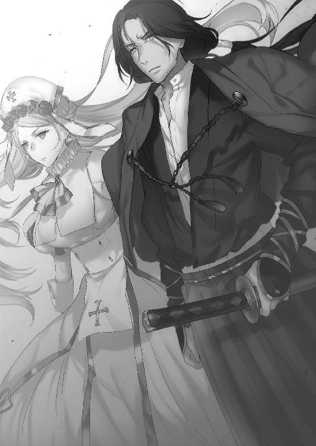
そう言うオロチの顔は嬉しそうだったが、すぐに顔は強ばり、引き締まった。
犠牲を厭わない、切り捨てる者は切り捨てる男の顔だ。
「いつかまた会うこともあるだろうが、その時は敵か味方かわからねぇ。それでいいんだ。あいつらにはあいつらのやるべきことがあるように......俺様達には、俺様達のやらなきゃいけねぇことがある」
「......はい。その通りです、宿主」
マザーグースは優しげな表情を消して、己が主へ肯定を返した。
オロチは前を向き、ひた歩く。相貌は、もはや出来の悪い弟子を心配する師のものではなかった。それはまるで──
「行くぞ──俺のグングニル」
──まるで、復讐に燃える地獄の鬼そのものだった。
エピローグ
タケル達が魔導学園を脱出する一週間前。
純血の徒『関東ボーダーライン侵攻作戦』
幻想教団。純血の徒精鋭魔導部隊、五〇〇名。古代属性保持者特務部隊、五〇名。
異端審問会。『騎士団』、一〇〇〇名。『魔女狩り』、五〇名。第零殲滅機動隊、三名。
第三五試験小隊──三名。
「はっ......はっ......はっ......！」
西園寺うさぎは自分の身体ほどもあろうかというアンチマテリアルライフルを抱えながら、瓦礫だらけの道を疾走していた。
服装は制服ではなく、フードつきの灰色迷彩服だ。膝にはプロテクターを装着しており、大量の弾薬が詰まったバックパックを背負っている。
ここ、灰色都市は聖域に最も近い場所であり、浮浪者や犯罪者の巣窟となっている。
だが今はそんな爪弾き者達ですら場を追いやられていた。
灰色都市は、既に戦場と化している。
身を隠し、安全を確認してから再び走り出す。その繰り返しを経て、うさぎは目的地のメインストリートへとやってきた。魔女狩り戦争前は繁華街であったであろうその大通りでは、騎士団と純血の徒の戦闘が行われていた。
うさぎは建物の陰に身を潜めながら、地面に片膝をつく。
「鳳、配置につきましたわ......建物の中は状態が悪すぎて上れませんでしたが、ここなら狙い撃てます」
《高所は確保できなかったか......杉波はどうだ？》
無線が切り替わる音が耳に入る。
《セントリーボットは上空で待機中。見えてるわよ、全部ね》
《西園寺のゴーグルに映像を直結させろ。敵の位置は把握させておきたい》
《了解。でも過信しないで。試作品だし、ボットの防御力は極めて低いから、いつ撃ち落とされるかわからないわ》
《そこまで戦闘を長引かせるつもりはない。ドラグーン部隊が到着すれば制圧は容易だ。魔導竜騎兵や古代属性保持者がやってくる可能性を考慮すると安心はできないがな》
うさぎは斑鳩と桜花の会話を聞いている間に、瓦礫の上に銃身を固定させてスコープを覗き込んだ。
「準備完了ですわ。鳳、迷彩魔法のせいで位置がわかりませんわ。報告をお願いします」
スコープに映る戦場風景を冷静に眺めながら、桜花の姿を探す。
《──北北西の廃ビル。屋上だ》
うさぎは言われた通り、銃身を北北西へ向ける。
ビルの屋上に、空間の歪みのようなものが見えた。
歪みは一瞬火花を散らすと元の状態に戻り、そこにいる人物をはっきりと映し出した。
真紅のマントと真紅の鎧に身を包んだ、鳳桜花の姿を──。
「............」
桜花は戦場を見下ろしながら、目を細めた。
（......前線に投入されて、すでに一週間）
巨大な二挺拳銃『ヴラド』を手に持ち、桜花は深くため息を吐く。
純血の徒が灰色都市を制圧して、もう三週間が経過していた。
タケルがいなくなってすぐに、転送魔法により純血の徒の大部隊が出現し、灰色都市全域、及び境界線の一部を制圧されてしまったのである。異端審問会は敵の不意打ちに慌てて防衛線を配置。現在に至るまで、敵勢力の鎮圧は続いている。
これほどの大規模な戦闘が行われたのは、魔女狩り戦争以降は数えるほどしかない。
敵がどこから現れたのかすらいまだに正式発表が為されていないため、一般市民の不安は募るばかりだ。街ではすでに地方への疎開が始まっていた。
戦場は今は灰色都市に限定されているが、桜花は半ば覚悟を決めていた。
戦争はもう始まっているのだ、と。
「これより敵の制圧に移る──私の攻撃を合図に、西園寺はアーマーを着込んでいる魔導剣士と、防護障壁を張っている敵を狙え」
《了解ですわ》
「杉波は引き続きセントリーボットで偵察。新たな敵影が出現し次第、すぐに報告しろ」
《はいはい、りょうか～い》
三五試験小隊は、戦場の最前線にいた。
学生の試験小隊ごときが戦場に投入されるなどあり得ないことだ。
しかし審問会会長である鳳颯月は、草薙キセキ護送作戦失敗の責任を取らせるために、彼らに戦場へ向かうように命令したのである
自分達がいなければキセキを幻想教団に連れ去られていたといくら弁明を図ろうとも、タケルと桜花の脱獄を引き合いにだされて決定を覆すことはできなかった。
三五小隊は決して、望んで戦場にいるわけではなかった。
「......お前達、何としても生き残るぞ。草薙が帰ってくるまでは！」
桜花は仮の隊長として、三五小隊を率いて戦っていた。
（草薙......お前は今、どこにいるのだ......）
桜花はタケルの身を案じながら、虚しい戦いに身を投じるのだった。
了
あとがき
ホーンテッドが仲間になりたそうな目でこっちを見ている。
──仲間に......しちゃうんですか......？
そんな第六巻。楽しんでいただけたでしょうか。
お久しぶりです。柳実冬貴です。
人生初の六巻......感慨深いものがあります。ここまで続けてこられているのも皆さんのおかげです。本当にありがとうございます。
さて、前巻のラストから続く六巻なわけですが、今まで存在が隠されてきた魔導学園でのお話でした。タケル達が思っていた以上に魔女側の勢力は巨大で、なおかつ複雑な状況にありました。世界情勢の混沌さに拍車がかかってきましたね。
今回はラピスとの絆について、重点的に進めていきました。
今まで謎に包まれた彼女の真実が、少しずつ明らかになってきたと思います。
まだラピスの謎は残っていますので、そこはまた追々判明させていけたらと思ってます。
今回の敵は日光の脅威を厚化粧で克服した吸血鬼さんでした。いつにも増して小物臭る人でしたが、個人的にはこの人、書いてて楽しかったです。
がんばって若作りしてる人とか可愛くないですか？
悪人だけど苦労人で、努力して強くなった人って応援したくなりません？
と思ったけど別になりませんね。悪人ですし。
魔導サイドの闇は彼女だけではないので、今後もいろんな人が出てくる......かもです。
そろそろ書くことが無くなってきました。
そうですねぇ......じゃあ。
──ようこそ、貧乳パラダイスへ。
今回マリは貧乳だし、ラピスは無乳だし、サブキャラのイニアも乳が無い。
カナリアもそこまで無い。
今回はナイチチについて語りましょう。
偉い人は言いました。デカチチはただの脂肪の塊に過ぎないのだ、と。ステータスどころか欠点であると。お腹がたるんたるんなのも、二重顎なのも、おっぱいが大きいのも言ってしまえば脂肪。
まさにその通り。あれは肉。
栄養が全部乳にいって困っちゃう？
貧乳さんも無乳さんもそれらを愛好する紳士諸兄も声を大にして言ってあげてください。
それ、太ってるのと違うんですか？ と。
無駄のないささやかさがいいのだと！
ひかえめだからこそ触り甲斐があるのだと！
チョモランマや富士山よりも僕は地平線の彼方まで見渡せるサバンナの大平原が大好きだ！
──とね！
............。
別にあとがきの尺を稼いだわけじゃ......ないですから。
それでは謝辞を。
いつも的確な指摘をして助けていただいている担当Ｓ様。今回、たくさんのキャラデザ要求にも応えてくださり、素敵なイラストを描いてくださった切符様。コミカライズでいつもかっこいいアクションシーンを描いてくださっている華尾先生。この作品を本にしてくださった富士見書房の皆様。
そして、六巻を読んでくださった読者の皆様。
おっぱいばっかのあとがきまで読んでくださった読者の皆様。
心からの感謝を送ります。
それでは、七巻でお会いしましょう。次は外側に残された雑魚小隊のお話になる予定です。予定ですのでその通りになるかわかりませんが。
まだまだ続きます。お楽しみに！
柳実冬貴
対魔導学園35試験小隊
６．瑠璃色の再契約
柳実冬貴
平成25年12月25日 発行
発行者 佐藤 忍
発行所 株式会社ＫＡＤＯＫＡＷＡ
〒102-8177 東京都千代田区富士見2-13-3
03-3238-8745（営業）
http://www.kadokawa.co.jp/
企画・編集 富士見書房
03-3238-8585（編集）
http://www.fujimishobo.co.jp/
(C) Touki Yanagimi, Kippu 2013
本電子書籍は下記にもとづいて制作しました
富士見ファンタジア文庫『対魔導学園35試験小隊 ６．瑠璃色の再契約』平成25年12月25日初版発行